| 丘の家のミッキー７ | |
| 久美 沙織 | |
| (2015) | |
丘の家のミッキー７
未来進化するの巻
久美沙織
本作品の全部または一部を無断で複製、転載、配信、送信したり、ホームページ上に転載することを禁止します。また、本作品の内容を無断で改変、改ざん等を行うことも禁止します。
本作品購入時にご承諾いただいた規約により、有償・無償にかかわらず本作品を第三者に譲渡することはできません。
本作品を示すサムネイルなどのイメージ画像は、再ダウンロード時に予告なく変更される場合があります。
本作品は縦書きでレイアウトされています。
また、ご覧になるリーディングシステムにより、表示の差が認められることがあります。
イラスト／めるへんめーかー
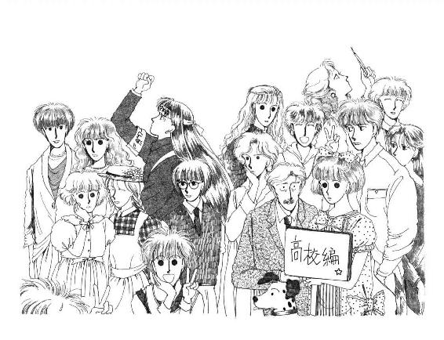
１ さくら・さくら
家の前の坂をバス通りまでずーっとずーっと下りてったほうのお医者さんのお家の玄関先に、みごとなソメイヨシノがある。
桜って、どうしたって、その他おおぜいの一般の庭木とは違うよね。花がついてる間なんて春先のほんの一、二週間なのに、たったそれだけの花を日本中誰でも知っていて『あれが桜』ってわかるっていうのも、凄いことだと思う。
だいたい咲きかたが大袈裟で必死でしょう。あ、つぼみだ、と思う間もなく、もこもこもこもこ重なってって、豪華でお派手であたりじゅう従えて大見得を切ってる感じは名場面の歌舞伎役者さんみたい。うっすらピンクのふわふわは、遠くからだと軽くてあったかい羽布団みたいにも見えて、ああ春だなあいい気持ちだなぁ眠いなぁ、なんてのんびりしているとたちまち、さぁさ、お昼寝の時間は終わりましたよ！ って急き立てるみたいにサバサバ散りはじめて。ほんと、気前がいいというか、お調子ものというか。今はもう、道いっぱいに散った花びらの中にところどころ花のかたちまるごと落ちているのもあって、何もそんなにあわてなくたっていいのに、と思う。
踏んづけちゃったら、かわいそうだよね。
自転車、降りて押していこう。
あー。いいお天気。
もうセーターはいらないなぁ。
こうなってみて気がついたけれど、あたし、ここに来て、桜を見たのって初めてだったんだ。ずいぶん前からいるような気がするけど、もうすっかり葉山の子になっちゃったような気がするけれど......実は、この春は、ひっこして初めての春なんだわ。この桜は、転校以来初めての桜。そう、いつもなら、三番町にいた時ならば、あたしの見る桜は四谷の土手の並木で、きっとトコといっしょだったはずなんだ。
今頃あの道も、こんなピンクの花びらに埋まっているんだろうか。
今年はじめて華雅に入った子たちは、あの道をみつけて、昔のあたしたちみたいに、きゃあすごい、きれーい！ って感激しているんだろうか。
ああ。なんだか。なんだか、胸が詰まるわ。なんてはかなく、なんて潔く、時は流れていってしまうのでしょう......。
おお、いけない。詩人していると、約束に遅れちゃう。
でも、ほんとにきれい。空がとっても青いから、うっすらピンクが映えるのよ。やっぱり桜は、空が高くて、空気が澄んだ日が一番きれいよね。
なのに。パパったら、いーや、夜桜だって捨てがたい、って言った。
この前の土曜の晩だったな。
ふぅんって聞き流そうとしたら、例によって例のごとく、頑固だったらないの。ことに今みたいに満開を過ぎかけてる時の月の明るい夜の桜には、えも言われぬ風情があるのだ、とかなんとか。違うって言うんなら行こう、行って確かめよう、って、しつこいの。あたしはもうお風呂入っちゃって、パジャマ着ちゃって、そろそろおやすみなさいって二階に行こうと思ってる時だったから、ヤダっていうのに。
パパったら。冷蔵庫からゴソゴソ缶ビールなんかひっぱりだして。
何本もよ。柿のタネとピクニック用ビニール・シートもよ。それで、ママもあたしもすっかりその気がなくなっちゃって、恥ずかしいからやめてって言ったのに。なにが恥ずかしい、桜を見るのに手ぶらってことがあるものか、って、パパ完全にこだわってしまってて。さんざん揉めたあげく、とうとうひとりでお出掛けになったらなったで、いつまでたってもお帰りにならなくて。迎えに行こうかって相談してる時に、お巡りさんに付き添われて戻ってきたのには本当にびっくりした。
なんでも、この時期になるとヘンなひとが出没するから警戒してらっしゃったんですって。
「お宅には犬がいるな。できたら、玄関のほうに繫いでおきなさい。泥棒も酔っぱらいも、犬のいる家は嫌うからね。われわれがいくらがんばっても、各家庭で、自衛・防犯を考えてもらわないとどうしようもないんだ。ご協力たのみますよ」
犬がいるったって。うちの羅士丸の場合、愛想が良すぎてとても番犬にはならないと思う。誰が来ても吠えるどころかしっぽ振ってにっこにこ笑って、下手をすると、お手とか、チンチンとか、乏しい芸を全部披露しちゃうんだもんね。
だけど。
「わかりました。どうもありがとうございました」
ってママが言って、若いお巡りさんは、直立不動の姿勢でニッコリ敬礼して去って行ったんだ。
「うわー。びっくりした」
本物のお巡りさんと親しく（？）お話してしまったのははじめてで、あたしはボーッとしちゃったわ。
「ほんと。大変なお仕事ねぇ」
ママも感動した感じで、急いで、お玄関も門もしっかり戸締まりをしたんだけど。
ふたりして居間に入ってくと、パパがムッとしたまま仁王立ちになっていたんだ。
「失敬なっ！」
顔を見るなり、パパは怒鳴った。
「え」
「こんな見るからに善良そうな市民を捕まえるなんて、目が腐っとる！ なにが『どうもありがとうございました』だ。夫があらぬ疑いをかけられたのにお礼を言うバカがあるかっ!!」
あたしとママは顔を見合わせた。
だって、パパ、お顔は真っ赤で、目なんて血走ってて、息は臭いし、フラフラしてるし、どうしたっていわゆる酔っぱらいさんそのものだったんだもん。
「ごめんなさい」
「うむ」
ママがちょっと下手にでると、パパたちまち勢いづいちゃった。
「そうだ。だいたいあいつはなんであんな偉そうな口をきくんだ。こっちは何にも悪いことなんかしてないのに、『誤解でした』『すみません』のひとこともなかったじゃないか。冗談じゃない。投書してやろう。冤罪だ！ 名誉毀損だ！ 権力の濫用だっ!!」
「そんな」
「なにが『そんな』だっ！ おまえはあっちの味方なのか？」
「だって、頼もしいじゃないですか」
ママはキッと見返した。
「ああいうかたがたが夜も昼も目を光らせててくださったおかげで、未然に防げた犯罪がきっとたくさんたくさんあるんだわ。ほんとうにご苦労さまじゃないですか」
「フンッ！」
パパはどっかり座りこんで、プカプカタバコを吸った。
「そんなことわかるものかっ。実はあいつだって、サボッて花見をしに来たのかもしれないじゃないかっ！ そのついでの、ほんの退屈しのぎに、無実の人間にいきなり住所氏名年齢勤め先を聞いてくる、その横柄な態度が許せないとわしは言ってるんだっ。にゃにがご苦労さまだ。あたりまえだ。それが公僕の仕事なんだっ。どーせわしらの税金で食っとるんだ、なにもありがたがることはないっ！ ましてや向こうが間違ってたのに。なんで謝らせずに帰したんだ？ 自分の亭主が不当に犯罪者扱いされたのに悔しくないのか？ あんな若い奴にデカイ面されて、腹が立たないのか、おまえたちはっ!!」
あー。
と、あたしとママは肩を落としてうなずきあった。
パパのことだから、きっと、あたしたちに夜桜見物フラれちゃった時からのイライラ気分のまま、お巡りさんに声かけられたりして思わずムッとして、『ナンダオマエハ』って感じで相手をなさって、余計に心証を悪くしちゃったのに違いない、って、はっきりわかっちゃったんだ。
「ったく、何様のつもりだ。制服着てりゃ一般大衆がへへェって畏まるもんだと思いこみやがって。普通の会社員があんな態度取ってみろ、社員教育がなってないってゴンゴン叩かれるぞ。企業努力が足りんよ、企業努力が。警察ってのは一種のサーヴィス業だろうがっ。国鉄（註１）もやったんだ、警察も民営化すればいいんだっ」
「......過激ぃ」
「お腹だちはわかりますけれどね、あなた」
とうとうママ、パパの目の前についっと座って、静かにおっしゃった。
「うっ......な、なんだ」
「ともかく、わたしも未来も恥ずかしい思いをしたんですよ。そんなにお嫌いなら、警察のお世話になるようなこと、二度となさらないでくださいね」
「......おっ。おや、こんなところに蚊が」
パパはいもしない蚊を指差して、パンパン叩き損なってるふりをした。ママはため息をついた。
「何もひとさまのお家の前で座りこんでお酒なんか召し上がらなくたっていいのに」
「むっ」
パパは手をとめた。
「しかしな！ しかし花見というのは古来そういうものなんだっ！ そりゃ......そりゃひとりでやるのはめずらしいかもしれないが......そうだ。だいたいおまえたちが素直にいっしょに来てくれないのが悪い！」
「............」
あたしたちが黙ってると、パパの目はみるみる潤んだ。
「なのに、なんだ。ひどいじゃないか。あんな、若造の味方ばかりして。家族なら、パパの立場ってものを考えてくれたっていいじゃないか」
（酔っぱらい）
（もう、ほっときましょ）
あたしたちが行こうとするとパパは声を張り上げた。
「何もいっしょに酔えとはいわん。手拍子たたいて歌えとは言わん。だがな、日本人なら、漆黒の闇に彩られた桜の美しさをわかってほしいものだとパパは思う！ 星空の下で酌み交わす酒の味をわかってほしいものだと思うのに......ああ。パパは悲しい。つまらん人生だなぁ。しょせん、女子供とは美を語り合うことができないものなのか......」
（勝手なこと言ってる）
（ほんと）
ママとあたしが歩きだすと、パパはいっそう大袈裟な声を出した。
「あああああ。孤独だなぁ。男の子がいれば。『お父さん、つぎましょう』『おっとっと、おいおい、そんなに急かすなよ』なんて、桜の下で杯をやったりとったりして......いいなぁ、そういうの。やっぱり男は男同士だよなぁ。憧れる......ックシャン！」
「あら」
「ション！ ......ひ、ひ、ひ、......ひーくしっ!!」
で、パパは風邪をひいて、日曜一日居間のソファにゴロゴロ毛布しょって寝転んで、威張り放題、横着放題、お大尽した。お昼間からお風呂に入るわ、卵酒は飲むわ。寒い寒い、毛布から手も出せない、なんて言って、テレビのスイッチまで変えさせるくせに、ちょっと目を離すとゴホゴホ咳きこみながらタバコ吸ってるんだもん、あきれちゃう。
いっぺんクリーニングに出しちゃった真冬の分厚いセーターをわざわざ出させて汗だくになったり、お粥じゃなきゃ食べられないなんてげっそり食欲なさそうな顔してみせたくせにクッキーだのおせんべだのポリポリかじり続けたり。体温計、こっそりポットのお湯につけてごまかそうとして、壊しちゃったりしてるんだもんね。子供みたい。
ママはなんにも言わないけれど、パパってずいぶんだと思うわ。
甘えてる。ママは偉い。あたしだったら、こんなワガママなひとの奥さん、三日と務まらないな。
やっぱり、桜は青空の下よ。旦那さまなら、うーんと大人っぽくてどっしり尊敬できて、いつでもどこでも黙っていてもあたしの気持ちわかってくれるひとがいいなぁー。例えば......。
ドキ。
想像しちゃった。
あわてて自転車に乗って勢いよく漕ぎだしたら、熱くなった頰っぺたに風が気持ち良かった。
待ち合わせは、京浜逗子の駅前。横断歩道のところで自転車を降りて、信号が変わるのを待っていたら。
「ミシェールぅ！」
道の向こうから呼ばれたの。見ると、誰かいっしょうけんめい手を振ってる。麦藁帽の下で三つ編みがぶんぶん揺れてる。
杉丸じゃないの！
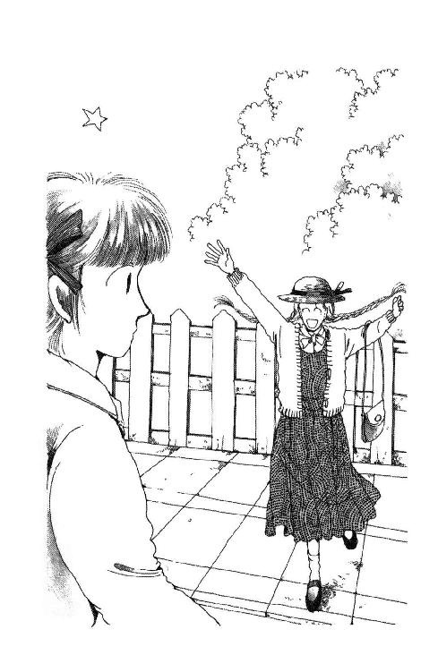
信号が青になって、あたしは急いで渡った。
「きゃあ、久し振り。元気だった？ すごい、すごい偶然ねー」
「違うの」
「え」
「偶然ってわけじゃないの。昨日、うららに電話したのよ。そしたらあんたと待ち合わせてるって聞いたもんだから」
「なんだ。そうなの。でも良かった。逢いたかったわ。ちょっと待って」
自転車を脇にひっぱってスタンドを下ろして振り向いたら、杉丸ったら、目にハンカチなんかあててるのよ！
「ど、どしたの？」
「うっ。......だっであだじ......」
電車がついたのか、ひとがいっぱい出てきて。あたしは杉丸の肩を抱いて、あわてて邪魔にならないように脇に連れ出した。
「あうー」
「何よ？ 何かあったの？」
「あだじだげ......あだじだげちがうなんでー」
そのことか。
「今さら何よ。憧れの華雅エンヌになれるんだから、いいじゃないの」
言いながら、ちょっぴり複雑な心境ではあったわ。『憧れの』っていうのが杉丸にとってのって意味なのか、『華雅エンヌ』そのものの枕ことばであって、つまりあたしにとってもほんとうはやっぱり『憧れの』であったりするのか、よくわからなくて。思えば本来の予定通りだとしたら、あたしと杉丸はもうすぐ毎日いっしょに電車に乗って華雅学園高校に通いだすはずで、となれば『ひとりだけ違う』のは『ひとりだけ違う』ことなんかでそうそう泣きべそかきやしないうららだったはずなんだ。
でも......でも、そうよね。そうなってたとしても、杉丸もあたしも『うららに逢えない』って、やっぱりべそかいてたのかもしれないな。
「元気出してよ」
「だっであんだだぢ」
言いかけて杉丸は、フン！ とハンカチで洟をかんだ。
「聞いたわ。今日って、いっしょに教科書買いに行くんでしょ？」
「う、うん」
だからって、なんでそんなギロギロした目でにらまれなきゃならないわけ？
「それで、突然ハッと気がついてしまったのよ、あたし。あたしだけ違う教科書使うことになるんだ、って。ほんとうに、もう、あたしはあんたたちとは違うところで暮らすんだなぁって思って......愕然としたのよ。もう、三人組じゃないんだ、って。ずっと、ずっとうららをみつめて来たあたしなのに、自分から、自分から、離れてしまったなんて。ああ、ミシェール。あたし、あたし、なんてバカだったのかしら!?」
「......えーと」
わからなくはないけど......どんなに深刻にみつめられたところで、うらら、杉丸の愛に応えてくれるわけないからなぁ。
「でもさぁ。大丈夫よ。何でも同じじゃなきゃトモダチじゃないなんて情けないじゃない。いっしょにいなくたって、うららはうららよ」
「そんなこと言ってるんじゃないわ。ただ、あたしは、うららのそばにいたく......て......」
ううう。そうよね、そうよね！
好きなひとと離れるって、もうほんとに、どうしていいのかわかんないような気持ちになるようなものだもの。あたし、よく知ってる。
「あんただって残ることにしたのに......あたし、どうして、どうして、華雅になんか」
「泣かないで杉丸。こうなったら、あたしが残ってるってことをラッキーと思ってほしいわ。あたし、できるだけあんたに手紙書く。うららがこう言ったとか、何したとか、電話してあげる。毎日、っていうのは約束できないけど」
「まぁ、ミシェール！ あんたってほんとに親切ね。だけど......だけど、そんなの申し訳ないし」
「うううん、申し訳ないことなんかないわ。あたしたち、トモダチじゃないの」
「ミシェール!!」
「杉丸!!」
手と手を取り合ってから、あたしはハッとしてあたりを見回した。だいたい、こういう時には、うららがそばまで来てて、あたしたちの感動と友情の場面をニヤニヤ笑いで台無しにするものだと決まってるから。
でも、いないみたい。
「遅いわねー、うらら。もう、約束の二分前なのに」
「......二分前......」
杉丸はじーっとあたしの目をみて、はぁっとため息をついた。
「冗談じゃ、ないみたいね」
「何が」
「『前』なら遅いってこと、ないでしょう。あんたってせっかち」
「だってぇ。ほら、もう一分前だし。姿見えないじゃない。あんもう、また遅れてくるんだ、あの子。勝手なんだから。いっぺんびしっと言ってやらなきゃっ」
「やめてよ。いいじゃないの。うららにだったら二時間待たされようと二日待たされようと、かまわないわ、あたし。もう来るかな、今来るかな、ってドキドキしながら待ってるの楽しいじゃない？ あー、うらら今日はどんなかっこうかしら。ね、ね、あたしのこのワンピース、おニューなの。似合う？ うららの目にとまるかしら？」
「......かわいい」
「ほんとぉ？ あー、良かった」
ワンピースもかわいいけど、杉丸の気持ちのほうがもっとよ。
なんて純情な杉丸。恋する乙女だなぁ。相手が間違ってるような気がするけど。
そっとため息ついてると。
「ね、あたしね、あたしね」
杉丸、両手を握りしめたまま、内証話するようにあたしの耳に口をよせて、クスクスッと笑った。
「いっしょに買っちゃうんだー、森戸南女学館の教科書」
「へっ」
「だって、うららが一年間使う本でしょう。見て見て、だからちゃんと郵便貯金おろしてきたのよ、ウフフフフフ」
「............」
「おーっすっ！」
怒鳴り声が聞こえたかと思ったら、道路斜め横断して、ひゅんひゅん風を切って来るドロップハンドル（註２）。短パンの両足をハの字に開いて、この季節からもう袖なしタンクトップの肩にトレーナー巻きつけただけのうらら。
「きゃあっ！」
轢き殺されるかと思ったのに、あたしたちの真ん前で、ハッ！ なんて掛け声かけて、ピタッとサイクリング車停めてみせる。
「へへへー、おでれーた？」
「んもう！ 危ないことしないでよっ」
「めんごめんご」
でも、確かに、素敵よねー。杉丸がぼーっとしちゃうのもよくわかるんだけど。
この勢いでまた、約束に遅れたこと文句言うタイミング外されちゃったのが悔しい。
まぁ、あたしは、このうららとあと三年間はいっしょにいられるわけで、となるとやっぱりあの選択も正しかったような気もして。できたら同じクラスになりたいな、なんて、杉丸に聞かれたら贅沢って言われそうなこと、ついつい考えてしまった。
「えっ、それ全部買うの？」
友林堂書店二階の参考書コーナーで、杉丸はあたしのプリントを見ながら両腕いっぱいの本を選びだした。なんだかこっちのより多いと思ったら『教科書準拠』の参考書まで二、三入ってるのよ。
「アホかいな。なにも『トラ』まで用意することないべっちょ」
「だって。いつも買ってたから。なんかないと不安で......でも、やめようかな」
「あ、待っち待っち」
戻そうとした杉丸の『トラの巻』つかんで、うららがニヤッと笑った。
「買って。んで、見せてー。あ、生物はいい。数学と英語、よろしく」
「ちょっと、うらら」
「だって。杉丸がいなくなったら、あたし誰に単語ノート見せてもらえばいいの。それともミッキー、宿題写させてくれるー？」
「......やだ」
「あたし、買う！」
杉丸はきっぱり言って、『トラ』を腕の中の山のてっぺんに乗せた。
「安心してうらら、あたししっかり予習ノート作って送る。授業中にどうどうと広げてられるように、一見丸写しだってわかんないようにやるから、いつ当たっても心配ないわ！」
「わーい。サンキュー」
うららににっこりされると、杉丸は真っ赤な顔で微笑み返して、バッと走ってレジに並びに行っちゃったんだけど。
「ねー」
あたし思わずうららの肩さき、つんつんつついた。
「あん？」
「あんな無理言って。かわいそうじゃないの」
「いーのよいーのよ、喜んでたじゃない」
うららの役に立てるってね。そりゃ、そうだけど。
華雅高校の授業だって大変なはずなのよ。英語とか、もう普通の中学の範囲明らかに越えたとこまでやってるはずだし。数学もすごいし。選択すればフランス語だってやんなきゃならないのよ。
その上うららの予習も、なんて言ったら......おお、大丈夫かしら？ 熱出しちゃうわ！
あたしたちもゆっくり歩いて列についた。杉丸との間に挟まったひとがふたりばかり、やだー、あの子ったらあんないっぱい『トラの巻』買ってる、嬉しそうに堂々と一番上になんかしてるよォ、とかなんとかヒソヒソ言ってる。そりゃ堂々とするわよ、自分のためじゃないんだもの。うっうっ、いじらしい杉丸。
......そうだ。
「ね、壮行会やらない？ 杉丸の」
「そーこーかい？」
「うん。春休みのうちに。だって、これからあの子、ひとりで知らないとこに行ってがんばらなきゃならないじゃない？ もちろん、高校からの子は高校からの子だけで外部生クラス作るはずだから、クラスの子全員そうなんだけど。でもやっぱり華雅の全体からしてみれば、途中から来たひとってことで一種転校生みたいなものになっちゃうと思うんだ」
「ふむ」
「転校生って、辛いよぉ」
「あんたがいうとリアルじゃないね」
「......なんでよっ!!」
「まーまー。なにもそんな壮行会だなんて言わなくたってさ。今日、これから時間あるんでしょ？ 三人で茶ぁでも飲めば」
「それじゃダメッ！」
大きな声になっちゃって、レジにたどりついた杉丸がチラッと振り返った。あわてて、声をひそめる。
「門出ならちゃんと門出らしいパーティかなんかしてあげようよ。トコとか保土ヶ谷の笙子も呼んだりして。そうだわ、笙子おたくの香織さまのファンだって言ってた！ おねえさまの都合つかない？ ああ、おねえさまって言えば、加奈子さまや麗美さまは......もう、大学入学のご準備でお忙しいかしらん？」
「好きねー。あんたって。そーゆーお祭り騒ぎ、異常に」
「............」
「すんだわ」
重そうな紙袋抱えた杉丸が、あたしたちのそばで立ち止まった。
「言ってくれればいっしょに買ったのに。遠慮して......」
「あしたヒマ？」
突然、うららが聞いて、杉丸は、えっ、って目をあげた。
「ウチ来れる？ いいなら、あんたの入隊祝いするけど」
声も出ない杉丸の腕から、ドサドサッ、と紙袋が落ちて破けた。うわ、うわごめん、って杉丸はすぐにしゃがんで拾い出した。トロイなぁなんてブツブツ言いながら手伝ううららの顔を見たけど、視線が合わない。
知らん顔。とぼけちゃって。いつもそうね。いつでもこっちがびっくりしてオタオタして感動してあがっちゃってモタモタしてる時、とびきりなんでもなさそうな顔をする。
そっくり。
ふとそう思ったら、カーッとして来て、あたし、あわてて代わりの紙袋もらいに行った。
三月二十一日。
あたしの、十五の誕生日。
その日、あたしと朱海さんはお出かけをして......えーとたぶん、あれは、デートっていうものなんじゃないかなと思う。実際にやったことっていうと、バイクを飛ばして油壺マリンパーク（註３）に行って、たくさんのお魚とマリンガールの餌づけを見学して、シーボニアでヨットを見ながらランチをご馳走になって......帰ってきた。つまりは、みんなこれまでやったことのあるようなことをちょっと場所かえて意識たっぷりにやったってだけなんだけど。
大変だった。
うわぁん、大変だったのよぉ～。
特に、その前が。
お誕生日にあたしが家にいないなんて言ったら、パパ怒るの必至だったから、あたしずっと気が重くて。なのに、朱海さんったら毎日のように電話かけてきて、もう言った？ もう許可取った？ って、せっつくんだものっ。
いっそ黙っておいて、当日、ちょっと行ってきまーす、って何気なく消えちゃおうかなとも思ったんだけど、そんなの良くない、パパの信用なくしちゃうでしょって、朱海さん叱るし。うだうだしてたらある日ママが、鎌倉行こって言って、なんだろなって思いながらついてったら、紀ノ国屋さんで、つまりはお誕生日のご馳走の準備で。ああ、もう刻一刻と事態はややこしくなっていくのよ、またしても！
いっそ誕生日なんか来なければいいと、何度思ったかわからないわ。口ではうまく言えそうにないから、手紙書いて、何度も書きなおしてようやくできて、そっと発見してくれるといいなと思ってママの洋服簞笥にサッと滑りこませておいたのに。何日かしても何にも言ってこないと思ってよく見たら、それ、めったに着ないおとっときの服の棚だったし。
自分のおバカとグズに悶々としてイライラしてるうちに、とうとう前の日になっちゃって。お昼になって夜になっちゃって。もうダメだ、こうなったらゴメンナサイしちゃおう、今回は見送りってことにしてもらおう、朱海さんならわかってくれる、そうだ、電話（註４）するんだ......と思いつつ、それもまたとっても勇気がいることで、結局。
朱海さん、来ちゃったんだよね、うちに。
そしてお玄関先で、出てきたママとパパに、
「あした、未来ちゃんを誘っていいですか。油壺の水族館に行こうと思うんですけど」
って、軽く言ってくれてしまったのっ！
よくもまぁこんななんでもなさそうな顔で、と思うくらいシャアシャアとぬけぬけとおっしゃってしまって、あたしは来るべき激怒と憎悪の嵐に身構えつつ、心臓が口から飛び出しそうなくらいあがっちゃって、ぺったり廊下に座りこみそうになったんだけど。
ママあっけなく、
「あら、素敵。どうぞどうぞ」
なんて言うじゃないの！
「じゃあ、九時......じゃ早いかな。十時ごろ迎えに来ます。暗くなる前にはお送りしますから、ご安心を」
「ごめんなさいねぇ、気をつかわせちゃって」
「いえいえ。では、あした。おやすみなさい。未来ちゃん、おやすみ」
で、あっけなくバイクの音が遠ざかっていってようやく気がついたんだけど、パパはその間ずっと口をあけたまま失神状態だったみたいなんだ。
「ごめん......」
気が重かったけど、気が重かったから言わなきゃいけないと思って、あたしは言ったのよ。
「もっと前に言えばよかったんだけど......自分で言わなきゃいけないと思ってたんだけど、つい」
ああ。思い出しただけで今でも充分気が重くなるわ。
パパ、ふっと頭を振って、いや、とかなんとか言いながらお部屋に入ってっちゃって。あのうるさいパパが何にも言わないんだよ。絶対、絶対、何か言いたいことあるはずなのに、何にも言わないんだよぉ！
あたしはもうとことん罪の意識に陥っちゃって、まるっきし落ち着かなかった。
その晩も、お誕生日の当日も。
落ち着かないあまり、なんだか苦しい浅い眠りしかできなかったこともあって、朱海さんが迎えに来てくれた時のこともよく覚えてないし、『おめでとう、これでやっとまだ十五歳だなんて、なんだか変だね』とか言われてもボーッとしてろくにお返事しなかったような気がするし、せっかくあちこち連れてってくれたのに、眠いのと気がとがめるのとでふわふわ雲の上を歩いてるみたいで。こんなんじゃ申し訳ない、心配されるってわかってるから、いっしょうけんめい楽しいな嬉しいな♡ って顔してようと努力してたんだけど、気がつくと、影の薄いパパの後ろ姿なんか頭に浮かんじゃって泣きそうな気持ちになっちゃって。朱海さんにはほんとにほんとに悪いと思うんだけど、ほとんど生涯最低のお誕生日だったわ。
シーボニアを出たとこで、もう帰ろうか、って言われた時は、ほんとうにホッとした。
それまで、よっぽど、情けない顔していたんだと思う。朱海さんは笑って、やっと元気になったね、って言った。
「ほんとはこの後城ヶ島に行って散歩して、帰り道は佐島のマリーナによる、っていう計画だったんだけどね」
「......はぁ......」
「ほら、佐島マリーナっていうのは、ぼくたちがおとうさんと初めてあったところだから」
あ、それなら行きたいです！
って言うこと、期待されてるな、ってわかってはいたんだけど。
「どうもすみません」
あんまりいっぱいしゃべると泣き声になりそうで、あたしは朱海さんの目を見ないようにして、ぺっこりお辞儀なんかしてごまかしてしまって。
もともとは会員のひとしか入れなかったっていうシーボニア。あたりには白くて高くて窓がいっぱいのリゾート・マンションが並んでて、まるでハワイかどこかの風景みたいなのに、シーズンにはまだ早いせいか妙にシーンとしていて、なんだか......なんだか、不気味で恐ろしい感じだった。朱海さんが駐車場にバイク取りにいくと、ほんのちょっとそこですぐ戻ってきてくれるのに、寂しくて不安で、ひとりぼっち取り残されたみたいだった。
前の晩朦朧としながらもクロゼット搔き回してやっと決めたグレン・チェックのワンピースが海風をはらんで、足も背中もすうすうした。
「はい。プレゼント」
裾を押さえてるとこに急に差し出されて、考えなしに手を離したら、フレアいっぱいのスカートふわんとふくらんじゃってあわてたわ。だって、金色のリボンのかかった小さな包みと、ピンクのリボンのかかった大きな包みふたつもなんだもの。
「うわー、ふたつもですか」
「もっとムードあるとこで渡すつもりだったんだけどね」
「どうもありがとうございます！ 開けてみていいですか」
「いいけど......あ、こっち持ってたげる」
「おねがいします」
包み紙飛ばされそうになりながら開けてみると、小さいほうはブレスレットとイヤリングのセット。大きいほうはぬいぐるみ。どれもみんな白黒ブチの子犬のなの！
「きゃあー、みんな羅士くんみたいー」
「でしょう」
ブレスレットには走ってるかっこうのが何匹もいて、イヤリングのほうは、とぼけた顔の下にゆらゆら揺れる白い骨が下がってる。ぬいぐるみは子供っぽいマンガ顔のじゃなくて、本物みたいな顔つきと毛並みで、きちんとお座りしてキョトンと目を見張った表情なんて、涙出るくらい懐かしい。ほんとのほんとによくできてるの。すごく、お高そう。
「やーん、かわいい！ ほんものよりかわいい」
羅士丸が聞いたら絶対むくれると思うけど。あいつ、このごろすっかり大人顔になっちゃって、やんちゃっ子っぽくなくなっちゃったんだもの。
「気にいってくれた？」
「気にいりました！ あっ、これ、さっそくしちゃいます」
お座りワンちゃん預かってもらっておいてバイクのミラーのぞいて留めると、顔と骨のイヤリングはようやくワカメちゃんくらいまで伸びてきたヘア・スタイルにとてもよく似合った。ブレスレットの留め金は見たこともないパターンのものだったから、片手で不器用にモタモタしちゃって、またまた朱海さんのお手を煩わせてしまった。
「こうかな？ あれー？ 違うみたいだな」
「すみません、あのう、無理だったらあとで家で研究します」
「まぁ、待ちなさい。昔はプラモとか得意だったんだ。あ、ちょっとこれ持って、じっとしてて......うーん。不器用になっちゃったなぁ」
だって、朱海さんの手は大きいんだもの。細い鎖の先っぽ、ツルツル滑って難しそう。なかなか留まらない。しまいに、朱海さんだんだん屈みこんであたしの手首のところにどんどん目を近づけちゃって、ひとが見たら何してるのかって怪しむような風情になってしまったのよ。
あたしはチビ犬抱えた手の端でスカートふくらまないように押さえながら、申し訳ないやら恥ずかしいやらで、どんな顔してたらいいのか途方にくれたわ。
こんな素敵な日なのに、こんなにやさしくしていただいているのに、なんで早く帰りたいなんて思っちゃうんだろう。どうして楽しくウキウキしちゃえないんだろう、って自分で自分がわからなくて。だいたい、帰ることになったらなったで、パパの顔見なきゃならなくなるってことがまたまたしんどい気分だったりもして。
「できた！」
突然、朱海さんが顔をあげて、ニッコリ笑った。手首下ろしてみると、子犬のブレスレットがシャランと鳴った。
「ど、どうもありがとうございました」
あわてて離れた時、朱海さんの顔、ちょっぴり曇った。ほんの一瞬だけ。すぐに、じゃあ、行こうか、ってバイクのエンジンかけに行ってしまわれたから、ほとんど反省する間もないできごとだったんだけれど。
泣きそうだった。あたし。
だって、だって、だって、どうしてなの？ あたしってほんとにおバカだ。意地悪だとか無神経だとか誤解してるとかいうんなら、怒ったり不機嫌になったりする理由あるけど。やさしくて、あたしのこと思ってくれてて、水族館連れてってくれて、美味しいご飯食べさせてくれて、心尽くしのプレゼントまでいただいた上で、迷惑だ、なんて言ったらバチが当たるわ。稲妻に打たれたって（註５）、海に吞まれたって、蛇や蛙や気持ち悪いムシがいっぱいいっぱい降って来たってしかたないと思う。だいたい朱海さんみたいな素敵なひとに、お誕生日覚えててもらって、誘ってもらえるだけで、もう山ほど感謝しなければならないのに。
なのに。
なんであたし、こんなにどっと疲れてしまうの？
ああ、困る。せめてこの気持ち、うまく隠せたらいいのに、朱海さん鋭いからもう絶対にバレちゃってるに違いないわ。
羅士丸二世（チビ犬のぬいぐるみは、当然そういう名前に決まったんだけど）をお腹のところに挟んで朱海さんの後ろに乗って、海岸線を北に向かうあたしの頭の中を、パパやママや麗美さまやみづゑさんや稲子さまや......いろんなひとの顔がぐるぐる回った。
家の前についた時、思いあまってごめんなさいって言ったら、朱海さん、ヨシヨシっていうように頭撫でてくれたね。そういうところ、ほんとに好き。大好きだと思う。
でも、それとこれとは別なの！
これ、っていうのは、つまり、デートのことで。
予定よりずーっと早く帰ったあたしを、びっくりしながらも隠せない上機嫌顔で迎えてくれたパパ。それを牽制しつつもやっぱりどこかちょっと安心したみたいな顔でお夕飯いっしょにどうって言ったママに、いえウチでも支度してると思いますから、ってさりげなく帰って行ってしまった朱海さんの憔悴したお背中。
一番好きなひとたちみんなの、どこかあがってるみたいなギクシャクしたような様子を思うと、もう、当分デートなんてしたくない、って思った。デートなんて、大きな声じゃ言えないけれど、そんなたいしたもんじゃないじゃない。なんでみんな、デートデートって大騒ぎするんだろ。正直言って、あたし、ヨットに乗ったり、懸垂習ったりしてる時のほうがずーっとハッピーよ。たいしたもんじゃないもののせいで、こんな変な感じになっちゃうっていうのは、絶対に損だ。どこか遊びにいくなら、みんなといっしょがいい。万一ふたりだけだとしても、変に『デート』なんて意識しないちゃんと正当な理由と用のあるお出掛けのほうが、ずーっといい。それなら、もっともっと楽しく普通になにげなくできるのにって、あたし、そう思ってしまったわけなのよね。
......でも。
朱海さんには言えないわ。懲りたなんて、もうヤダなんて申し訳ないこと、言えるわけない。あのかたはせいいっぱいよくしてくださったんだし、あたしみたいな変な子じゃなくて、親離れしてない子じゃなかったら、絶対あれで感動しないわけないと思う。
だから。ああ、勝手だ！ みんなで西在家さんちに集まってワイワイするっていうのがとっても楽しみだったりするいけないあたしなの。杉丸のことダシにしちゃうみたいなのとっても悪いんだけど、でも、そうなの。
なんで朱海さんみたいな、いろんなことわかってるひとが『デート』なんてものしたがるのかしら、なんて逆恨みっぽい心にさえなってしまいそうで。
きっと、あたしって変なんだ。これを言ったら泥沼だけど......朱海さんに好かれるのに相応しい女の子じゃないんじゃないかな。......ああ......せつない。
２ 壮 行 会
「こんにちはー!!」
通いなれたる西在家家のお玄関で、ご挨拶の声を張り上げると。
「はいはい。あ、どうも」
出てきたのは、小熊さんだ。あたしよりさらにいっそう通いなれてるひと。
「どうぞずいずいっとおあがりなすって。お務め、ご苦労さまです」
「お務めって......ええと、どうなりました？ 小熊さんがいらしてるってことは、香織さま、じゃない、さやか先生もおいでなの？」
「ええ、幸い今朝がた四時に脱稿されましたので。今、しばしお休みになっておられますが、後から顔をお出しになるそうです」
「だっこう？」
「原稿ができたんです」
なるほど。朝の四時に......大変ねぇ。
どうもこのひとと話すと変な口調になっちゃうんだよね。お互い。同級生なのに。
「あと、誰が来てます？」
「クラスのかたが数名。お台所のほうにいらっしゃいます。大学のお休みでお出でになってらした毬さまと、お昼の準備で。うららは、さっき電話があって、岸田さんの車で逗子駅まで行きました。杉田さんと岩館さんをお迎えに」
うわ、けっこう大勢になったのね。でも良かった！ 香織さまがいてくださるなんて、笙子きっと喜ぶわ。
西在家さんちのお台所は半分土間、半分近代的なキッチンになっていて、三十畳くらいもある。聞香の会などで大勢が集まる時には、料亭やレストランから板前さんシェフさんが出張して来て調理なさったりもするとかで、流しも調理台もプロっぽいし、炭火焼き用の炉も完備してる。お皿もお鍋もあっけにとられるくらいいっぱいいっぱいあって、それでも本当に大切な会の時に使う陶磁器の類は、お蔵だかどこだかにしまってあるんだとか。
こういうところを拝見すると、ほんとのほんとにお家柄の良いただならぬお家なんだなぁと思う。そこで育ってうららみたいになるっていうのが今ひとつ謎なんだけれども......。
「あ、ミッキーだ」
「ハーイ」
近代的なほうの巨大な冷蔵庫の前の一角で何かしてたみんなが、気づいて手を振った。町田さん、小笠原さん、広川さん、沢辺さん。杉丸の席のまわりのひとが多いな。あたしがよくしやべるひとは、浜田さんと八木沢さんくらいだ。
「ごめん、遅くなって」
「あたしたちも今来たばっかよ」
「おっ、ケーキ？」
「アプリコット・パイ。ほとんどママがやってくれたんだけど」
調理台には、野菜やシーフード、果物なんかが、もうきれいに並べてある。
「あ、お寿司作ってるの？」
「うん。あとサラダとね。唐揚げは出来てる」
「手伝うことない？」
「もうじきメシ第二弾が炊けるからサ、そしたらお酢まぜるの手伝って」
カチャッと勝手口が開いた。
「あーら未来ちゃん！ しばらく。元気だった？」
三女の毬さまだ。奥山さんと、シソやら笹の葉やら取りに行ってらしたみたい。
「はい、おかげさまで」
「悪い、これ洗って（と、流しのところにいた広川さんにシソ等を渡され）。あ、エビ茄でる時はね、そこらの野菜クズ、レモンの端っぱとかもいっしょに入れて！ 臭み消しになるから（と、レンジのところにいた浜田さんに声をかけ）。合わせ酢出来てる？ じゃあそれで飯台湿らせて......そそ、おしゃもじもね（と、お寿司係の小笠原さんたちに指示をなさり、ようやくあたしに向き直ってニヘラ、と笑うと）。ねーねーねー、聞いたわよォ」
「えっ」
ぎく。
「ついにふたりだけでデートしたんだって？ なのに、途中で喧嘩しちゃって朱海スゴスゴ帰って来たんだってェ？ ほほほほほほ」
「え────っ!!」
四方から、視線と水が飛んできた。包丁の先までこっち向いてる。
わぁん！
なんでそんなこと、なんでそんなこと、こんなところでおっしゃるのよぉ！
「ち、違いますっ！ け、喧嘩なんて、喧嘩なんて」
「あーっ、わかった。じゃあ、あれでしょう？ あいつ、焦って、なんかイヤラシイことでもしようとしてェ」
「うっそ～～～～」
「きゃあ♡ やりぃ。ネンネの未来も女になったかー」
「わーん先越された、くやしー」
「違いますったらっ!!」
「でもデートはしたんだ」
「そ、それは......」
「あーっ、みとめたぁ！」
「のろけやがって」
「ああ、ついについにあたしたちの希望と憧れの星が」
「このやろー、ちくしょー、つねっちゃえ」
わぁん！
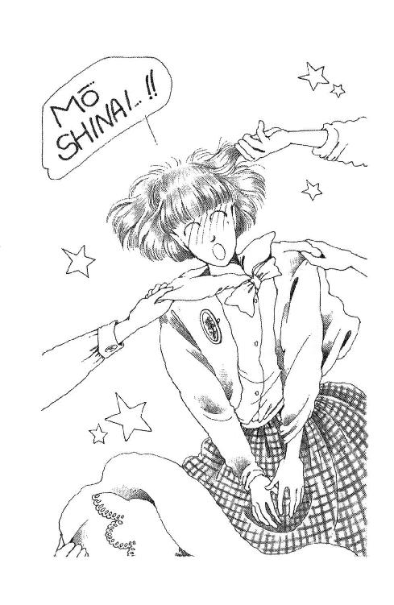
「もうしない、もうしない、もうしないったらー!!」
「もうしない......？」
みんなの手と声がぴたっと止まった。髪の毛ひっぱられて、スカートまくられて、からだ斜めになったまま見上げると。
コップ持った朱海さんが土間との境のところに立ってたの。
「あ、あらみーくん。い、いつからそこにいたの？」
みんながソソクサと戻ると、朱海さんは黙って首を振って歩いてきて、流しのところに空のコップを置いて、はははははと凍りついた顔で笑ってる毬さまをキッと見て、踵を返し、何も言わないまま数歩歩まれ、もう一度振り返って、再び、パタパタ首筋に風送ってる毬さまをにらみつけて硬直させ、出ていかれた。
毬さまとふたり、抜き足さし足そっとのぞくと、がっくりと階段にもたれて目を覆ってらっしゃる背中が見えた。
「......もうしない......」
小さくつぶやく声も聞こえたわ。
毬さまは、口元はははははのままの顔で眉下げて、片手でゴメンっておっしゃった。
お庭の一番いいところに面したお座敷は、朱海さんの免許皆伝のお祝いの席でも使った大広間。あまり広すぎるからか、あたしたちの背中側に金色の地に源氏物語絵巻のようなものを描いた間仕切りが置いてある。床の間にはピンクと黄色と白の小さな花ばかりを集めて豪奢に作った花籠。ご馳走卓は白木のテーブルで、それぞれに和紙のランチョン・マット、突き出しの三品（土筆のおひたし、そらまめのゴマ和え、蟹のテリーヌ）が朱塗りの漆の小さな俎みたいなかっこうをしたのにきれいに並べてある。ちらし寿司は輪島塗りのお盆に盛りつけられ、千草に切った野菜やシーフードのサラダは淡い水色のガラス鉢。お小皿やお取り皿はなんだかぼこぼこしてて重たそうだと思ったら、十二代家元紅隹先生が手ずからお作りあそばされたものなんですって。半紙を折って作ったお箸袋にはひとつひとつお庭の花を結わえてあったりして。
「豪華ねぇー」
「うへー、上流だぁ」
みんな心なしかいつもより二トーンくらい低めの抑えた声になってしまう。
そうよね。さすがお家元。あたしには物の価値なんてよくわからないけれど、ひとつひとつがいかにも心くばりされているのに、ギラギラお派手になってない。
「なるほどね」
竹冠つきの笙子は、例の男の子みたいな黒い眼鏡をキラッとさせてあたしを見た。
「これが西さやかの生まれ育った環境なのね」
「えーと、お生まれになったのはここじゃないと思うけど......そうね、どっちにしろ、こういうお育ちには違いないわね」
「ここに嫁いで来るんじゃ、そりゃ大変だ」
「？ 違うったら！」
もー、杉丸ったら、ろくな話しないなっ。
「ほれほれ、みなの衆」
下座側の端の席で、うららがこの優雅な設えにまるで相応しくない声を出した。
「何してんのよー。適当に座って座って。あ、杉丸、あんたはここよここ」
「............」
一番の上座にひっぱりあげられた杉丸は、目いっぱい不安そうな顔をしたけど、逆らわなかった。隣に笙子、あたしは向かい。あとはどんどんみんな並んでって、毬さまとうららはちゃんと一番の末席についた。
礼儀はともかく、今日くらいは杉丸のそばにいてあげればいいのに。
「んではー。本日の主役、杉丸からご挨拶......」
「えっ、えっ、待って、あたしそんな、心の準備が」
「とゆー意見もありましたがー。お互い腹減ってると思うから、ま、食べましょ食べましょ」
「乾杯は？」
と、毬さま。
「シャンパン（註６）冷えてるわよ」
わぁお、豪華！ とみんな声をあげる。
「あ、そだった。忘れてた。おーい、給仕さーん」
あら。そう言えば、小熊さんが見えない。
お席も余ってない。
ひどいなぁ。いくらおねえさまの心酔者だからって、そんな、お使いだてしちゃったら。
とかなんとか考えてるところにすすす、と襖が開いたと思ったら。
「ひぇぇぇ!!」
「まさか！」
みんな叫んだ。
黒いタキシードに端がとんがったおしゃれな蝶ネクタイ、腰から下に糊パリパリの真っ白いエプロンの朱海さんが、膝ついて座って、銀色のクーラー・ボトルがそれぞれ乗ったお盆三つ、たぶん後ろにいる小熊さんから受け取って、運びいれたんだもの！
みんながあっけに取られてる中を照れたみたいな強張ったお顔で歩いてくると、ポン！ といい音たてて栓を抜いて、まず杉丸の平べったいシャンパン・グラス（註７）に金色のお酒をしゅわしゅわ注いだ。そして笙子に、そして町田さんに、そして奥山さんに......。
「何が贅沢ってこれほどの贅沢はないわ」
あたしの隣で浜田さんがつぶやいた。
「ほんとぉー。みんなに自慢しちゃおーっと♡ かの朱海さまにワイン注いでいただいたなんて......すごいわー♡ ああ写真機持ってくれば良かった」
「よしよし。よく似合ってるわよン」
ウィンクする毬さまを無視して、朱海さん、いよいよこっち側に来る。
和室ゆえの靴下裸足が今ひとつお気の毒、もともとこんな純和風のお部屋にソムリエもどきっていうのも妙ちきりんで、下手すると道化っぽくなってしまいそうなのに。
すごーい。そんなこと、てんで気にならないくらい美しい！
ああ、もう、なんて素敵なの？
タキシードお召しになったところなんて初めてみたけど、特別いっそう大人っぽくなっちゃうんだ。どうしてそんな飛び切りの盛装がぴったり似合っちゃうの？
映画にでも出てくるひとみたい。エプロンさえなければ。
ぼーっとして、ぽーっとして、息吞んでドキドキしてたら、とうとうあたしの番が来た。
ああ、どうしよう。あたしさっき、ついさっき、ひどいこと言ってしまった。いくら本音だからって、みんなに責められたからって、あんなにあんなに心こめてくださった『デート』、もうしないなんて言っちゃったなんて......ふぇぇぇん、どうしよう？
思わずからだ中で緊張していると、みどり色の瓶がすっと伸びてきて、袖口のカフスの金色がチラッとのぞいた。
「あ、ありがとうございます」
ふりあおぐと、朱海さんはまるで何にも気にしてないみたいにニコッと笑った。
「もうまいっちゃったよ。恥ずかしくって」
「ど、どなたが」
こんなアイディアを。
「毬だよ」
朱海さんはふくれた。
「決まってるだろ。こんなこと思いつくのは。杉田さんのためだ、バイク・ブーツ買ってやるからって、つい乗せられてしまった」
わ♡ ふふふ。朱海さんも、何か買ってもらいたくてやっちゃうことなんてあるんだー。なんだか、らしくなーい。
「じゃ。あとで」
あたしの肩に軽く手をかけて、朱海さんは立ち上がった。
「では、ごゆっくり」
一礼して、ふうっとわざと疲れたっぽい顔をなさりながら去っていった。
なんとも言えないざわめきが漏れた。みんな、緊張してたみたい。
「ふっふっふー、うけたうけたー。良かったね、ウリ」
「なんのかんの言って内心楽しんでんだよ、兄貴。えーかっこしーだから」
「言える」
毬さまとうららが勝手なこと言って、思わず日頃、こんな感じに姉妹のみなさまにオモチャにされてるのではないかと御身を慮ってると。
「聞こえたわよ。『じゃ、あとで』だって」
浜田さんが肘でつついた。
「なにが『もうしない』よ。憎らしいわねー。この幸せものがっ！」
ふぇぇぇん。
「えっと、それでは、乾杯しましょ。誰かさんが給仕してってくれたんだから、当然、音頭は浅葉のお嬢さまにお願いするってことで」
もーっ。
ほれほれ、さっさとやんな、ってつつきあげられて、あたし膝立ちになった。
「では......僭越ながら。杉丸、じゃない、杉田月子さんの今後の発展と幸福と学業成就を願って、乾杯します。かんぱい！」
「カンパーイ!!」
「ありがとう、どうもありがとう」
上気した顔の杉丸。チン！ チン！ とかわいい音をさせてぶつかるグラス。ウキウキ気分で、あちこちに手を伸ばして、ふと前を見たら。
なんとも言えない複雑な表情で心ここにあらずしてる笙子が、目に入った。
「どしたの？」
「えっ、え、ああ。なんでもない」
あわてて作り笑いを浮かべる笙子と、グラス合わせたけれど。
おかしい。絶対におかしい。
杉丸もすぐに気づいて、ふっ切ったようにお寿司に手を伸ばす笙子の横顔をまじまじ見て。ふいに、あっ、と、何か思いついたように口をあけて、こっちを見て、あたしが、何？ って口を動かすとゆっくりうなずいたのよ。
な、な、なんなのー!?
「朱海さんよ、決まってるじゃないのっ！」
杉丸はいきなり、そう言った。
廊下のはずれ階段の陰で、あたしたちコソコソ固まった。しばらくタイミングを見計らってから、こっそり抜けて来たのよ。
「え、どういうこと？」
「んもう、なんでわかんないのッ？」
杉丸は背中いっぱいの髪を揺らした。両脇に細く作った三つ編みには、お洋服に合わせた真っ赤なリボンが編みこんであって、制服の時のお地味さが信じられないくらい主人公してるんだけど。キッと真剣になった顔はあくまでいつもの杉丸なのよ。
「だってそうでしょ。朱海さんが現れてシャンパン注いでくださってから急によ。笙子、あんたの朱海さんにうっかりひとめ惚れしちゃったのよッ！ 決まってるじゃないのッッ!!」
「えーっ!!」
「しっ！ 大声出さないで」
だって。だって。だって。そりゃ、朱海さんかっこよくて、特に今日は特別とんでもなく素敵だったけれども、そんな、ひとめ惚れなんて、ひとめ惚れなんて......。
「そんなのやだァァァ」
「ヤダったってしようがないじゃないよッ。ああ、そうだわ。もしかするとひとめ惚れでもないかもしれない。あの茫然としてる様子にはもっと深いものがあるわ。きっと、前から知ってたのよ。顔だけ知っててどこの誰かは知らなくて、ましてあんたの思い人だなんて全然知らなくて！ ああ、なんて偶然なの。ドラマだわ!!」
そう嬉しそうに、目キラキラキラキラさせながら言ってくれなくたっていいと思うわ。
「そう、例えば......朱海さんは、御成学院に行くのバイクなの？ 電車で行くこともあるんでしょ？ あると仮定するでしょ。でもって御成って鎌倉でしょ。笙子が住んでるのは保土ヶ谷じゃないの！ ばったり出会ってる可能性、充分にあるわ。そう、ある日雨が降ってホームが濡れてて、笙子眼鏡だから、人いきれでレンズが曇ったりなんかして前がよく見えなくて、ツルッと滑った拍子に人垣に突き飛ばされて、ああ、そこに電車が入って来て！ 朱海さんが咄嗟に我が身を省みず飛び込んで助けてくれなかったら......」
「あのね」
すごいわ。杉丸の想像力って。
「そんなの考えすぎだよぉ。世の中そうそう杉丸の趣味通りにはいかないと思うわ。まったく全然何でもない時のあたしのこと『洗礼名のある高校生妻路線』とかだって思いこんでたりした前科があるじゃぁない？」
「思いこんでた？ じゃあ、今のあんたたちは何なのよ。むしろ予感と言ってもらいたいくらい鋭い線ついてたわけじゃないの」
うっ。
「だいたいね、ミシェール。このぐらいのことでオタオタしてちゃだめよっ」
「おたおた」
「そうよ。朱海さんモテるのよ。例えば笙子の場合がごく何でもなくうまく納まったとしたって、誰かがあのひとに片思いしたぐらいでいちいちビビってたら、あんたの人生真ッ暗闇よ。
大学にだって、そこらにだって、女はいっぱいいるし。中には、恋人がいようと婚約者がいようと妻や子供がいようと、いい男とみたら迷わずアタックする女だって、おおぜい、おおぜい、いるんだからね。......そうだわ、ちょっとこれ見て」
何かと思ったら、杉丸らしい古典的大学ノートなのよ。灰色っぽい地にすね毛みたいなのが散らばってて、背のところが黒くて、タイトル書けるようになってるところなんて無漂白クリームっていう、あのタイプ。
「相談にのってもらおうと思って、持ってきてみたの」
「LET'S STUDY ENGLISH I......って......予習ノート？ 昨日買った......あれ、もう始めちゃったの？」
「そうよっ!!」
得意そうに鼻息を荒げながら開いて見せてくれた。もう、三十ページくらい、杉丸特有の極薄超几帳面文字がぎっしりと詰まっている。見開き二ページが全部同じ構成になっていて、左ページには二行置きに教科書本文まるごとを写し、ひっかかりそうな単語の上には赤ペンで品詞と意味のメモがつき、右ページ上半分が訳、下には文法や慣用句の解説が書いてある、といった具合。
「......す......すごい」
「でしょ。アンチョコ見ながらポイント写すだけだから、頭は全然使ってないんだけど」
気力腕力だけでも大変なものだわ。
「自分のためだったらここまでやりゃしないわよ。見てて、新学期始まるまでに、夏までの分全部やっちゃうから！ そして、そして、うららにあげるの。ああ、ミシェール、わかる？ これが、愛の力なのよッ!!」
「なるほど」
そこで繫がる話だったのか。
でも、こんなことしてもらっちゃうと、うららすっかり安心しちゃって全然勉強しなくなって、結局テストの時とかに困るんじゃないかなぁ......まぁ今までだって予習なんかしてなさそうだったけれど。
「こんな感じでいいかしら？ どう思う？」
「うーん......内容は完璧よ。あえて言わせてもらえば、もう少し濃い鉛筆で書いてあげたほうがいいかも」
「読みにくい？」
「ちょっとねー。杉丸は見慣れてるから平気だろうけど」
凶器とみまごうばかりに研ぎすました４Ｈだか５Ｈだかで、クキクキひっかいたような字なんだもの。よく見ればきれいな字なんだけど、てらてら光ったりノートの白さに負けちゃったりして、うまく角度調節しないと読めやしない。目に悪そう。
「......わかったわ。じゃあ、やりなおす！」
「えーっ、そんなもったいない」
「だって、うららのためだものっ。よしっ。今日からボールペンで書くことにする。一日二十五ページずつやれば、まだ充分以上に間に合うはずだわ。がんばるわ！」
ノートをしまうと、杉丸はがしっ！ とアトム腕をしてみせる。
「......偉いわ......」
「何くたびれてるのよ。あんたも強くなるのよ、ミシェール!!」
「うーん」
「愛するってことは戦うことなのよ。どんな女が相手だって、負けちゃだめ！ ああ、でも、あたしも悩むわ。あんたたちがどんなに険しい荊の道を歩いてきたかよく知ってる。でも、笙子もこれからずっとなかよく学園生活を送らなければならない大事な友達だし」
......荊の道......なんてあったかなぁ？
「いけない。ともかく、戻ろう。今日のところは何でもない顔してるのよ」
「う、うん。そりゃ」
「笙子の気持ちは、チャンスがあったらあたし、うまーく聞きただしてみるから」
そーゆーことしてくれないほうがいいような気もするんだけど。
だって。もしかして、万一杉丸の思ってるような事情とか因縁とかあったりするんだったら、あたし、あんまり聞きたくないな。麗美さんの時だって......あの時はまだ、自分の気持ちハッキリわかってなかったのに、あんなに変な気分だったのに。みづゑさんだって。みんな、ほんとにあのひとのこと好きで、なのに、あのひとはあたしみたいなダメな子のこと買ってくれてて......。
ああ。この上また笙子が、なんて言ったらあたし......グスッ......そんなのもうヤダぁ！
「じゃ、あたし、先に行く」
杉丸は（ひがみかもしれないけど）やけにいきいきした感じで廊下を戻っていった。
はぁぁ。
でもさ。でもさ。ほんとだよね。
ひとの気持ちなんて、誰にも止められないもの。ほんとうは、あたしが知らないだけで、今この時だって朱海さんのこと、杉丸のうららに対しての気持ちみたいに激しく生命賭けて好きなひとが、どこかにいるかもしれないんだわ。なのに、あたしは......。
思わず階段の下の暗がりにしゃがみこんで、膝を抱えてしまった。
朱海さんが、あんなかっこよくなければ。誰も気付かない、そうそう人の目に留まらない程度の素敵さだったら、こんなに心配しなくていいものを......。
「ひっ!!」
ずでっ。
えっ？
目の前の床に、ざんばら髪にパジャマのひとが尻餅ついていた。
「......あ......な、なんだ未来ちゃん」
その声は。逆光でよく見えないけど。
「香織さま？」
「あー、びっくりした。座敷わらしかと思った」
パジャマの香織さまは、放りだしたタオルを取って、しゃがみ直した。
「何してるのそんな暗いとこで」
「えっと......」
「ふぅん」
のそのそ這い出ると、香織さまはてっぺんから爪先まであたしを見て、急にニコッ、と笑った。
「ま、いいわ。あんたにもいろいろとあるだろうから」
「すみません。内証にしといてください」
「ＯＫＯＫ。そっちもよ。連徹の後のやつれ顔、化粧なしのところ見られたなんて不覚だったわ。シャワー浴びてかっこつけてから顔出しするから、こんな凄まじいとこ見たなんて言わないでね。ファンの子もいるというし」
「はい」
んじゃ、と手をふって香織さまは向こうに消えてしまわれた。
ほんと、西在家さんちのかたがたってみんな、かっこいいなぁ。お化粧なんかしなくたって充分お美しいし、まぁ、あのボサボサ頭はすごかったけど。
ファンの子......って......笙子だよね。
あーうー。あの子って、敵にしたらめったやたらに手強そうだなぁ。怖い。
あたしもいっちょ、シャワーでも浴びたい気分よ。
長い不在をごまかすのには、冷やしておいたパイを切ってくのがちょうど良かった。
考えてみれば、笙子のことってそんなによく知らない。
入試の時の印象があまりに鮮烈だった。ナマコじゃなくて竹冠つきなのよってひとことだけで、性格も考えかたもわかったようなつもりでいたけれど、逢ったのはこれでやっと何度めかなんだ。まだ、友達っていうより、知り合いって言ったほうがいいくらいなものだわよね。
ぱっきりと白い綿のスカート、ボーダーの胸元に小さなフラッグがたくさんついたマリン・セーター。眼鏡に縁取られたくっきり大きな瞳と、微かに崩した正座、あくまでまっすぐ伸ばした背筋。笙子は私服でも、やっぱり清潔で賢そうで、サバサバしてる。
だからあたしは、やっぱり笙子のこと、とても好きになれそうだと思う。
けれど。
「あっれー、もうなくなっちゃった～ん♡」
「ちょっとちょっとヤギ、あんた顔赤いよぉ、もうやめとき。帰れなくなるよ」
「いいじゃないの。ねーうらら、お酒もうないのォ？」
「あるある、持ってくるから、ジャンジャンやって」
「きゃっほーい」
森戸南グループは、ご馳走とシャンパンがゆきわたると、たちまち普段のノリに戻ってしまっていて。お席の立派さ上品さも忘れて、きゃあきゃあはしゃいじゃって大騒ぎ。麗美さまたちに連絡しなくて良かった、これをお目にかけずにすんで......と、つい思ってしまうほどよ。
華雅高校仲間であるはずの杉丸は、あちこち回っておしゃべりしてるし。笙子ひとりで居心地悪いかもしれないな、と立ちかけたら。
「あ、おたくも空じゃない。飲みます？」
奥山さんが、話しかけてるのが見えた。
笙子はエヘッ、とグラスを差し出してる。
「ください」
「よーし。いけいけ、ぐーっといけ」
なんだ。けっこう、打ち解けてるんだ。
あたしは奥山さんと笙子に、パイのお皿を持って行った。
「はい。まだ早いかもしれないけど、片づけちゃいたいから」
「あ、サンキュ」
「ありがと」
うまく笙子と目が合ったから、さりげなく言ってみる。
「ごめんね。せっかく来てくれたのに、ひとりにして」
「あー。だいじょぶ。あたし、ひと見知りしないから」
「そっか」
「心配しないで。楽しんでるから」
良かった。
あたしのほうも。とりあえずは、意識しないで話せるみたい。
「ミッキーィ」
突然、がしっと後ろから首に腕回してひっぱられた。奥山さんだ。
「な、なに？」
「あんたってばホントに手が早いわねー」
「え？」
「入学前からしっかり友達確保しちゃってサ」
入学前から？
......しまった！ あたし、華雅高校には行けなくなったんだってこと、みんなに言うの忘れてた。そだ、いいチャンスだわ。今日、杉丸のご挨拶かなんかの後で、さりげなく告白しちゃおう。
「この際ついでにいい男でも見つけて、ここんチの兄上さまはわれわれ原住民に返してくれちゃったらどおおぉ？」
わぁん、酔ってる、シャンパンで酔ってるでしょ、奥山さんったら！ 苦しい、苦しい。
笙子は大きな目丸くして見てるばっかりなの。クスクス笑ってないで、助けてよー。
「ねー、森戸南って、いつもこんななの？」
「......うっ......うん」
ジタバタジタバタしているうちに、疲れたのか、手がフッと緩くなって、あたしは急いで逃げ出した。
「もーっ。からまないでよねっ」
「へっへっへーだ」
「いいね。楽しくて。ウチじゃ、みんな、こんなに仲良くないよ。ヨソモノまじってたりすると、すぐすかしてヒソヒソ姑息に固まったりするし」
あれっ、って顔見ると、笙子はああ、そうか、って白い歯を見せた。
「華雅じゃなくて。中学のこと」
「笙子って、公立だったの？」
「そ」
「そっか。あたし、一度も公立に行ったことなくて」
「ほんとォ？」
「幼稚園からずーっと華雅だったんだもん」
「うわー。反対だ。あたし公立じゃないの、華雅高校が初めてよ」
その間に森戸サイドは、とチラッと見ると、うららがくすねて来たお酒の試し飲みが始まっちゃってる。きゃっ、コワントローじゃないの。お菓子の香りつけに使う甘い匂いの。あれ、ほんの二、三滴メロンに落としただけでほわーっとなっちゃうくらい効く、強いお酒なのに......ああ、あんな大瓶を、あんなにどぼどぼ......うわー。
「ひー、なにこれー、強烈」
「氷ないの氷？ ロックじゃなきゃ」
「ぜーたくもん」
「だからほら、ジュース持ってきたし」
「げっ。この上甘くすんの？ 勘弁ー」
「沢辺ののんべ」
あああ。いけないわ、いけないわ。中学生が......もうすぐ高校生だけど、乾杯のシャンパンくらいならともかく、お酒なんて飲んだら法に触れるのよ、法にッッ！ なのに、まぁ、毬さまそんな一気なんてやって見せて......こ、こらこら、うららまでーっ！
ハラハラ。
「行こか」
笙子がお座布団を滑り下りた。
「まざろ。あたしも飲んでみたい、あれ」
「ええっ？」
歩きだしたところで丁度、
「えー、それではー」
うららが立ち上がって、注目を集めた。
「やっぱ、せっかくなんだからさ。このへんで、杉丸先生に、わが森戸南女刑務所脱獄成功の談話を発表していただきたいと思いまーす。先生どーぞっ！」
わ──っ！ とみんなが拍手して、すでにヨタヨタ足元が怪しい杉丸がうららにひっぱりあげられた。
「えっと......あの、今日はほんとにどうもありがとうございました......ぷふっ」
「いぇーい！」
「しっかりー。酔ってるぞー」
丸く集まった輪の外側に座ると、内側からタンブラーが回ってきて、笙子があたしにも取ってくれた。ウッ。グレープ・ジュースの味だけど......お酒入ってる。美味し......。
わぁん！ いけないっていうのにー！
「あたしは......あたしは、正直言って、森戸あんまり好きじゃなくて......みんなにもあんまり好かれていないような気がしてたんだけど......それで、よその高校になんか行くことにしちゃったけど......なんか......なんだか、こういうことしてもらっちゃうと、ほんとに......ほんとに何考えてたんだろう、何見てたんだろうって思って......」
杉丸は唇を嚙んだ。
みんな、しんとして杉丸の次のことばを待った。うららが、まぁまぁ、っていうみたいに肩を叩く。ちょっと振り返った杉丸の口がすっかりへの字になって、ぶるぶる震えた。
「やっぱり......やっぱり、好き───っ!!」
「ぎゃーっ!!」
突然ひしっ、と抱きつかれて、うららがよろけた。
「わ～～ん、うらら、うらら、離れたくない。愛してるの───ッ!!」
「いけーっ、そうだいけーっ押し倒せーっ」
「がんばれ杉丸！ これが最後のチャンスよっ」
「こらこら、無責任なこと言うんじゃないー!!......ひ、ひひひひ、く、く、くすぐったいったらー」
「許して。許して。今だけ。今だけ、ね、ね、ね」
「だ────」
Ｔシャツひっぱられて肩剝き出しになりながら、目をパチパチさせて抵抗するうらら。必死にしがみついた杉丸がうららの胸に顔うずめたままイヤイヤするように首を振るものだから、髪の毛がぶんぶん揺れるのよ。顔の前で。あれはくすぐったい。その間に毬さまがみんなに何か放り投げてくださって、見ればクラッカー。たちまちパンパン大騒ぎになる。
ええい、あたしもやっちゃお！
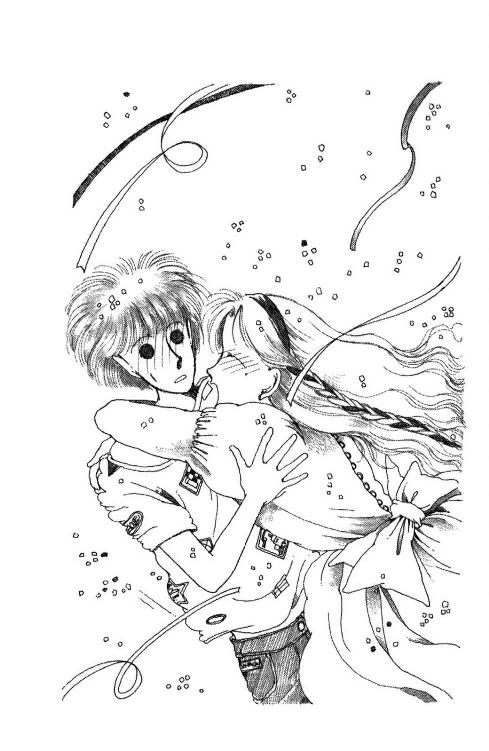
花吹雪、紙吹雪。空気をはらんでもこもこにふくれあがってしまった杉丸の髪の上に、首を伸ばしてもがくうららのはぁはぁ息をつく大きな口の中に、ピンクと黄色と水色の、星とリボンが降り注ぐ。
「......っく......っく............クシャン！」
とうとう、うららがくしゃみすると、いったん落ちかけてたのが、いっせいにぱぁっと舞い上がった。その途端。
「にぎやかだこと」
みんなが振り返った。パラパラ降ってくる花びらを優雅に見上げながら、香織さまが入ってらっしゃるとこだった。
「みなさん、ようこそ。ごちそうがあるんですって？ 私も仲間に......あら」
うららは正気に返った顔の杉丸をあわててもぎ離すと、コワントローの瓶をサッ、と背中に隠し、にらむ香織さまに、でへへへへ、と笑った。
「返す！ あとで、ちゃんと新しいの手にいれて返すからさ！ ゴメン！」
香織さまのコレクションだったのか。
「西さやかさんよ」
わかってるかな、とは思ったけど、一応耳元で囁くと、笙子が、はぁーっ、って感心したようにため息をついた。
「写真では見たことあったけど......背、高いんだー。きれい」
うーむ。
確かに。鮮やかなブルーのワンピースにプラチナの首飾り、豊かな髪は緩く結いあげ、西在家家独特の涼しい目元、すうっと通った鼻筋をさりげなく強調なさったスモーキー・メイク。さっきのパジャマに乱れ髪のお姿など、もはや思い出せないほどの変身ぶりでいらっしゃるけれども。
なにしろあたし、最初にこのかたとお逢いした時っていうのがアレだったからなぁ。どうも、きれいになさってればなさってるほど、その実体というか正体というか落差というかが思い浮かんでしまって......きっとご本人も意識してらっしゃるのよね。さっきの様子じゃ。
「では、先生、こちらに」
いつの間にか現れていた小熊さんが、ササッと先にたってお座布団を寄せ、お席を作った。それでみんな、何となく元の席に戻って静かになっちゃった。
「ありがと。あ、お寿司ほしいな。きゃっ、その海老のサラダも好きなの」
早速お箸を持ってはしゃぐ香織さまの後ろに、ムーッとした感じでうららが座った。
「香織ちゃーん。邪魔しないでよね」
「あら」
「見てよー。みんな注目しちゃってさ。雰囲気壊れちゃったじゃないの。これはおたくのファン・クラブのお茶会じゃないんだからねッ」
「助かったくせに」
つぶやく毬さま。
香織さまはぷっと頰を膨らませたけれど。
「作家さんだって......かっこいい」
「すごいよねー。あたしなんか二枚の作文書くんだってひ～こら言っちゃうのに」
「才能あるひとはいいよねー」
かすかに聞こえる囁き。羨望と感動と尊敬のまなざしで見つめられてることがわかると、たちまちとろーっと表情をとろけさせた。
「まぁごめんなさい。私ったら。そんなつもりはなかったんだけど、なんだかヒロインを差し置いてしまったみたい」
「いいから、食い物持って早く帰ってよ」
あくまで憎らしいうららのせりふはまるきり無視して、
「今日の主賓はどちらなの？ 杉田さんってどのかた？ ひとことご挨拶を」
「杉丸は今、お茶いれに行っちゃいました♡」
「まぁ、そう、残念」
「ちょっと、お話してくる」
あたしの耳に小声で瞬いて笙子が膝をずらした。
「せっかくだから」
偉い。香織さまが、わざわざお化粧して、いるはずのファンを待ってらっしゃること、ちゃんと気付いてる。
「待って、待って、あたしも行く」
物怖じしない笙子は、サッサと近づいていくと、小熊さんの横のほうにすっ、と座った。
「こんにちは。はじめまして」
「はい？」
あたしの目配せしっかり受け止めたくせに、器用にとぼける香織さま。
「岩館笙子といいます。以前、お手紙をさしあげたこともあります」
「まぁ！ ほんとう？」
香織さまの顔が演技を越えてパァッと輝いた。
「どうもありがとう。でも、ごめんなさい、えと、岩館さん。このごろとにかく忙しくて、お返事はもとよりいただいたお手紙読むのもままならなくて......」
「だろうと思っていました。いいんです。こうして、お目にかかれたんですから」
「良かったわ。わかってくれるひとで」
「時々、試そうとする子がいますからね」
脇で小熊さんがブツブツ言った。
「サイン会とかで、フルネーム言ってみて。先生が覚えてるかどうか確認するんですよ。ちゃんと自分で読んでるかどうかすら疑ってたりするんだ」
「小熊」
香織さまがいさめたけど、小熊さんは止まらなかった。
「無理ですよ。しょっちゅう手紙くれるひとだけで千人はいるんですよ。千って口で言うとたいした数じゃないようだけど、千通もの手紙、封切って便箋広げて中身読むのに何時間かかると思います？ よっぽどヒマだっていうんならともかく。原稿だの打ち合わせだの取材だのの合い間に、三十四十まとめて読んだだけで、いちいち全部覚えてられたら化け物ですよ」
「覚えてるわよ」
香織さまが肩をすくめた。
「読んだだけじゃあやしいけど。お返事書いたら、だいたいは忘れない自信あるわ。本人の字を見れば、まずわかるわね」
「そんなつまんないことに責任感じなくていいって言ってるんです、私は！」
「だって。みなさんがまごころこめて書いてくださったお手紙ですもの。やっぱりちゃんと、気持ちにお応えしなくては」
香織さまはすっとあごをあげてから、女王さまめいた優雅な仕種で笙子の手を取り、両手で握った。
「ごめんなさいね。待っていて。たとえ、二年先三年先になろうとも、あたしは絶対にちゃんと、お返事書きますからねッ!!」
「またそーやってご自分の首を......」
ブツブツ言い掛けた小熊さんは、ギッとにらまれてしぶしぶ引き下がった。
「えーと」
と、笙子。
「私の名前は、ナマコって書くんですけど、ほんとうは竹冠つきで」
「おお、『絵里奈──嵐の中の愛』ね!!」
「そうなんです。あのおねえさんのねじけた性格、なかなか身につまされるものがあったりもしまして」
お話、はずみそうだな。
今のうちにパイでも食べちゃお、と思って戻りかけたら。小熊さんが何とも言えない顔で、笙子と香織さまを見つめてるのに気がついた。ひょっとしたら......ヤキモチかな？
「小熊さん、何か食べた？」
「あ。うううん、まだ」
「じゃあ、取りましょうか」
お寿司とサラダ、お皿に盛って持っていくと、小熊さんはまた重たい息をついた。
「どうも」
「いいえ」
なんとなく、ひとりで放っとけなくて、そのまま顔を見てると。突然、小さな声で言い出したんだ。
「先生は流されすぎなんですよ。あれで気が小さくていらっしゃるから」
「そうなの？」
「悪気はなくても足ひっぱる相手ってありますよね。やだったら構わなきゃいいのに、つい愛想よくしちゃって、図に乗せちゃうんですから。今度だって、前々から絶対イヤだって言ってたくせに、話が来るとついホイホイ乗ってっちゃって、とうとうテレビに出されることになんかなっちゃうし」
「テレビ？」
「湘南テレビのね、朝のワイドショーかなんかなんですけど。あの自己主張の権化みたいな久米かおりといっしょなんですよ」
「え──っ!!」
あたしの声と、みんなの声が重なった。
ふり向くと、香織さま自身がにこにこ顔を輝かせながら、言ってらっしゃるとこだった。
「そうなの！ あさっての朝十時なの。まぁ、嬉しい、ほんとう？ ほんとうに、みんな、応援に来てくれるのー!?」
「どうしようかな」
つぶやくと、朱海さんと、朱海さんが押してくださっているあたしの自転車が一瞬立ち止まった。
「何の話？」
あ、そうか。聞いてらっしゃらなかったんだ。あれからひとしきりその話題で盛りあがったから、もう知ってるような気がしちゃったわ。
おしゃべりしているうちにたちまち夕方になって、電車で来たひとたちを岸田さんの車で送ってあげて、残った数人で、使ったお茶碗などお片づけしていたら、お夕飯ぎりぎりの時間になってしまった。
例によって、泊まっていきなさいって言われたんだけれど（しかも今日はうららと毬さまと香織さまと小熊さんと、四人の迫力で迫られたんだけど）、そうもいかないって言ってるうちに、例によって朱海さんが現れて、送ってくって言ってくださって、そうするとみんな、じゃ、ってすぐ諦めてしまったりするあたり......なんだかすっかり毎度おなじみの儀式みたいになってしまったみたいなのがちょっと気にならなくもない。
「香織さまが明後日、湘南テレビにお出になるんだそうで」
「ああ。聞いた」
「そこに、みんなで見学というか、応援に行こうって話が出たんですけど」
「みんなって、今日のみんな？」
「そうなんです。生番組だっていうのに、もしも万一いつものように騒いでスタッフのかたを困らせたりしたら、連れてってくださる香織さまが恥をおかきになっちゃうわけで......ちょっと心配なんですけど」
テレビにはあんまりいい思い出がないんですもの。
もちろん、今度は撮られるほうじゃなくて、お出になる香織さまの応援に行くってだけだからこの前の時とはずいぶん違うような気はするんだけど。
「なんでも久米かおりさんとごいっしょとか。あんまり仲良くないかたといっしょだなんて、嫌ですよねぇ。テレビに映ってるって時にツンケン喧嘩してるわけにもいかないだろうし。そんな大変な時に、大勢して押しかけたりしたらご迷惑じゃないかな」
「だから、香織ねえさんが来てほしがったんでしょう」
朱海さんはくふっ、と唇の端をもちあげるようにする。
「無理やり責任作っちゃったんじゃないかな、自分に。みんなを連れてってあげるためだって思いこんで、逃げられなくなるように」
「......そんなに嫌だったらお引き受けにならなきゃいいのに」
「ほんと。前にどこかの番組でひどい目にあってるし」
「ひどい目？」
「うん。もうだいぶ前......ねえさんが二十一くらいの時だったと思うけど。『活躍中の若い女性特集』みたいな番組でね、司会者のルポライターが、イヤラシイことばっか聞いたんだ。それも、女優さんとか、モデルとか、同じ年頃のゲスト五人くらいいたのに、ねえさんにだけ集中して『生理の時も書くのか』とか『そのトシで処女だっていうのはほんとうか』とか......あ」
バキッ！ 足元に落ちていた太い枝が、すごい音をたてて割れた。
......なんてこと......！
「ど、ど、ど、どして、そんな、そんな、そんな話題をわざわざ公共の電波でッ!!」
朱海さんは明らかに『しまった』っていうお顔をしてらしたけど、あたしがぐいぐい押すように見ると、しかたなさそうに口を開いた。
「だからね。ほかのゲストはみんな普通のひとで......いや、つまり、ねえさんが一番幼かったわけ。実際の歳はともかく、雰囲気も、ものの考えかたも、見るからに純情そのものだったからね。向こうもプロだから、そこをつつくとおもしろくなるって踏んだんじゃないかな。ねえさんは、これはきっとライバルの誰かさんが裏から手を回して嫌がらせをしたに違いないなんて妄想狂っぽいこと言っちゃって、通信販売でワラ人形取り寄せたりしてた」
「それ、放送されちゃったんですか？」
「そりゃそうだよ」
「こ、答えたんですか、そんな質問に!!」
「いや、それがねー」
朱海さんはクスクス思い出し笑いをした。
「録画撮りから帰ってきた日の怒り狂いかたを知ってたから、ウチではみんな知らん顔してて、こっそりビデオに撮って見たんだけどね。いや、あのひとは開き直ると怖い。さあっと青ざめてショック受けてたのは一瞬で。『ご質問の趣旨がわかりません』『どうしてそんなことばかりお聞きになるんでしょうか』って、しっかりやり返してるわけ。結局、その番組中、実のあるようなことはなにひとつ言えなかったのが悔しかったらしいけど」
え、偉い！ おみごと！
「でも、それでは、ただ相手のかたをおバカにしたみたいですね」
「親父もそれを心配してた。こういう番組を喜んで見ている層には、ただのカマト......いや、その、ええと、生意気にしか見えないだろう、ってね」
わかるわ。そのパターン。
よくあるのよ。華雅出身の有名人のかたって、みんな、はしたない質問にはそういう答えかたなさって、反感を買う伝統だったりするんだもの。あたしのかつてのクラスメイトにも、ご家族やご親戚のかたが有名って子がけっこういて、世間って残酷なものなのよ、スターって寂しいものよ、なんてブツブツ言っていたものだったわ。この前離婚なさった某華道のお家元の姪に当たられるかたも卒業生なんだけど、新聞の下のほうに出てる週刊誌のみだしを読むかぎりでは、なんだか凄まじい記事を書かれてらっしゃるようだったし。
お気の毒に。
「だから小熊さんがあんなに心配していたのね」
「ぼくも心配したよ」
「ですよねぇ」
「違うってば」
あれっ？
自転車のハンドルに体重かけて、朱海さんは、ひとこと、ひとこと、区切りながら言ったのよ。
「未来ちゃん、悲壮な顔してずーっと何か考えこんでるんだもの。『もうしない』だしさ。ぼくと歩くのが、よっぽど嫌なのかと思った」
「............」
「ほらまた、暗くなる」
ふぇぇぇん。だって、だってせっかく忘れてたのに。思い出しちゃったじゃないですかっ！
「そんなに懲りちゃった？ あのあと、おとうさんに叱られたの？」
そうじゃない。そうじゃなくて。そうじゃないから。
「いくら誘ってもちっとも遊んでくれないしさ」
「あの......『エンチラーダ』は、まだダメなんですか？」
「うん。せっかくの春休みなんだけど。マリーナでどっかのヨット部が合宿やっててね、すごく込んでるもんだから。タカシはガソリンスタンドでバイトだし、カズホは自転車で四国一周するんだとかっていなくなっちゃってるし」
「そうですか」
ヨットだったら、あんまり意識せずに逢えるかもしれないけど。
ふたりだけで......デートっていうのは......。
黙ってると、朱海さんの手がハンドルを離れて、こっちに伸びそうになった。思わずびくっ、とすると、手はすぐにひっこんだ。
もちろん、もうとっくに着替えちゃって、色の褪せたジーンズとジャケットのごく何気ないかっこうでいらっしゃったのだけれども。乾杯の時のタキシード姿、目に浮かぶの。朱海さんが笑うと、キラキラあたりに星が散るの。まるでどんなに手を伸ばしても、絶対に届くはずのないひとのように。
「そんな顔しないでください」
えっ、と笑顔がゆらいでも、星は消えない。ああダメだ、背中に羽まで生えてきた。
「だって釣り合わないです。朱海さんが悪いんじゃないんです、良すぎるんです」
「どこが？ どうして？」
「お姿もお性格もみんなみんなです」
朱海さんが何か言いかけたのに、ぐわっと胸に黒いものが膨れてきて、ああ、これっておバカだ逆恨みだって思ったのに止まらなくて、どんどんわざとみたいに憎らしいしゃべりかたになってしまう。こんなこと考えてるんだったのか、って自分でびっくりするくらい、スラスラことばが出てきた。
「怖いんです。やさしくしていただけばいただくほど借りが増えてくみたいな感じがして、朱海さんにはかないっこないって見せつけられてばかりみたいな気がして......なのに、パパはあたしを世界一の娘だと思ってるでしょう？ それとそれの間で、あたし、どうしたらいいかわかんなくなっちゃうんです。自意識過剰だってわかってます、いくらがんばったってあたしはあたしにしかなれないし、パパの思い込みなんか今に大幅に裏切るに決まってるし、朱海さんと競争なんかしたってしようがないってことも、よーくわかってるんです。でも、なんだか、こういうの悔しくて、歯痒くて、しようがないんです！」
「なるほど」
真剣だった朱海さんの顔が、クスッ、と破けた。
「でも、そういうことに悩むってことでもう、充分偉いと思うな。ぼくは未来ちゃんほど真面目じゃないし、潔癖でも純粋でもないよ。借りだなんて、気にしすぎだ」
「気にしすぎです。でも、気になるから、どうしようもないから、苦しいんです!!」
「もっと甘えてくれたほうが嬉しいんだ、って言ってもダメ？」
「素直に甘えられる性格になりたかったものだと思います」
でなければ。素直に甘えられる性格のひとのほうが、朱海さんに相応しい。
胸の奥にチラッと浮かんだ考えに、ヒヤッとして、その冷たさがいやに気持ちよくて、あたしはほんとうに悲しかった。
なんでこんな喧嘩みたいなののほうが落ち着いちゃうんだろう？ そうだ。朱海さんがどんなに立派で偉くて気高いひとであっても、親しいお友達Ａあたりにいられた時には、あたしこんなバカな劣等感は持ってなかった。
今はもう押し入れの中にしまってしまった朱海さんと麗美さんの名場面の写真を、あたしはまだ、心の中では、高く掲げているんじゃないかしら。
「となれば、ぼくにはどうしようもない」
ゆっくりと、朱海さんの目が静かになる。
「ぼくがどうにかしてあげようとすると、また借りが増えたって思うだろうから」
「そうですね」
「未来ちゃんがぼくに何か貸してくれれば？」
「だから。お貸しできるようなものが何も見当たらないから、こうして悶々と」
「............」
朱海さんは目を閉じて、開いた。
「ぼくをいっぺん軽蔑しなさい」
「......は？」
「きみはぼくを変に理想化してる。ぼくは、そんなんじゃない。きみが思ってるような奴なんかじゃない」
「ちょ、ちょっ......朱海さ......!!」
自転車が倒れた。正確に言うと、朱海さんが放り出したってことなんだろうけど、見定めてる暇はなかった。顔とかからだの動きよりもわずかに早く変わった何かの気配に、あたしは思わず、ほんとうに全く何も考えずに、ただ、くるっと回れ右して逃げ出したんだ。
それから、頭が真っ白になるような怖さに気がついた。
何がなんだかわけがわからないけど、とにかく、怖かった。
走って、走って、もときた道を戻って戻って、足の下で枝や小石がぴしぱし砕けたり跳ねたりしてよろけそうになるのも構わずに走ったのに、息が切れるよりも早く腕をつかまれて、やすやすと軽々と反転させられた。ドン、とぶつかった鼻が痛くなったと思う間もなく、脚を払われて、ふわっ、と一瞬、からだが宙に浮かび、ひっぱられたままの手首がグキッと鳴った。
そのおかげで地面に激突しないですんだってことがわかったのは後になってからで、突然縦が横になり、目の前が灰色がかった空になり、頭の下に木なのか石なのかごろごろ不安定なものが当たってるのを感じて、からだと心がぽっかり虚ろになった。そこへ、黒い影が降って来た。何か言ってるみたいだったけど、まるで天がまるごと落ちてきたようなショックと、突然耳に飛びこんできたはっはっはっって押し殺した息づかいが耳について、あたしは夢中で両手をつきだし、膝をバタつかせて......。
「............！ ァヲヲヲ......」
表記できない声をあげて、影が硬直した。
ぱさら、と力なく落ちてきた髪が頰を撫でた。
気がつくと、突き出した林の間に空が一本の道みたいになっているのを、あたしは茫然と見上げていた。右腕だけが、ずしっと重かった。
あれ、と思って頭を浮かすと、何かがゴリッ、といってすごく痛かった。それで、即座に正気に返った。
「......朱海さん？」
「............」
右腕の上に、ジーンズの塊が丸くなってる。インディゴ・ブルーの背中が、ぶるぶる震えている。
「ど、どうしました？」
「あっち向いてて......頼むから」
「は？ はぁ、でも」
ジーンズが、そーっとそーっと動きだしたから、あたしはあわてて目をせいいっぱい左に向けた。
えーと......。これはやはりたぶん......よほど痛いところに命中してしまったと......つまり、膝とかそういうところが......ムニャムニャのゴニョゴニョにクリーン・ヒット......。
わ──！ どうしよう？
でも、でも、でも、もとはと言えば朱海さんがいきなりこんなことを......いやでも、それって要するにつまり、あたしがあんなやくたいもないことを言ったりしたからで、あくまでわざとで、ああ、でもまだドキドキしてる。あーびっくりした。あー驚いた。
変ね。なんであんなに怖かったんだろう。だって、朱海さんよ。朱海さんが、信頼できないっていうの？ 朱海さんが本気でそんな破廉恥なことするなんて、仮にも頭に浮かんだはずは......でもまったく思ってもなかったから本当にショックで、でも、お芝居だもん！ あたしのためを思えばこそだもん！ ......ほんとにそうかな......なんて言っちゃいけないけど、目的はともかく手段が......もしかすると本音は......まさか......でも......いやいやいやいやいや、そんなのやだ、やだ！
やだ!!
ぎゅっ、と目を閉じたとたん、目尻から耳までがくすぐったくなった。
なんなんだろう、この感じ。何か、すごく変だ。怒ってるっていうのとも悲しいっていうのとも違う。これは、もっとせつなくて、泣いても怒鳴っても消せないみたい。どこにも出て行き場がない。
不意にすっと腕が軽くなったから、あたしはあわてて背中を起こした。
「ごめん。だいじょうぶ？」
白くなった頰の隅っこに土をつけたままの朱海さん。
あたしは息を吸って、黙ってうなずいた。声出すと、どんなこと言っちゃうかわからなかったから、ただ手をあげて、その土を払った。
右手の甲に、土と、何かが押しつけられていて剝がれたような赤い跡が、たくさんついてるのが見えた。急いでひっこめようとした時、気付かれて、つかまれて、まじまじ見られてしまった。
「言い訳はしないよ」
と、朱海さんが言った。
「あたしも、しません」
あたしたち、まるで敵同士みたいね。お互いを貫き通そうとするような目、向けあって。
でも。気持ちいい。こんな目で見てくれるひと、他にはいない。あたしは朱海さんに、こんな風にちゃんと見てもらえるってこと、わかっておきたかった。
不意にそう気がついて、変な気分の中にポッと明かりがついた。
「行こう」
手をつないだまま立ち上がってみると、朱海さんの膝のところだけが、やけにしっかりと土まみれだった。
「たいへん」
「ぼくはいいけど......うわ、すごい、未来ちゃんの背中も。靴下もだ」
だろうなあ。
「ちょっと叩くよ」
「お願いします」
「......あんまり落ちない」
思わず、さっきとは違う目付きを見交わしあってしまった。
朱海さんの膝の具合からすると、あたしの背中も相当の汚れかたなんだと思う。髪の毛もたぶんぐしゃぐしゃで、おまけに手にはかすり傷まであるし......。
「まずいな。これじゃまるで」
「幼稚園児みたい......お洗濯大変そう」
「............」
何か言いかけた朱海さんは一瞬黙って、さりげなく続けた。
「未来ちゃんのパパ、今家にいる？」
「五時半......まだ帰ってるはずないですけど？」
「やれやれ、少し気が楽になった」
歩きだしながら、朱海さんが笑った。
「よくないな、こんな本音を言っちゃ」
でも、あたしもそう思う。今度ばかりは、全部正直に話したからと言って、あのパパが納得してくれるとは思えないわ。ママだって、朱海さんがあんなことするひとだって聞いたらきっとびっくりしちゃう。その前にあたしが言ったこと告白するのは......ちょっと辛いし。
「......あのう、自転車が引っくり返ったっていうので、どうでしょう？」
「あ、噓つき」
「う、噓じゃないですっ！ ほら、ほんとに引っくり返ったわけだし」
乱暴に放り出された自転車にはところどころ土がついてたりして、証拠には事欠かなかったりする......なんて......ああ、あたし不良だ。
「借ぁーりたっ！」
突然朱海さんが、ふふふっ、って笑ったの。
「え？」
「ぼくを庇ってくれたでしょ、今。それでなんだかんだご破算にしよう！ ねっ？」
ね？ って......。
ああ。もー。なんだかよくわかんないけど、あんな怖いのはもうやだ。
「自転車から落ちたか。かなり無理はあるけど......まあそれで押し通しちゃおう。じゃ、乗って乗って。急がなきゃ、もう暗くなる」
「はい」
乗るとすぐに、自転車が走りだした。舗装してないぼこぼこ道だから、朱海さんの腰にギュッとつかまってないと落ちそうなの。
変ね。
あんなに怖かったのに、ほんとうに痛い目に遭わされたばっかりなのに、もう、あたし朱海さんを信じてる。まるごと信じてる。そしてパパやママに、『乱暴なひとだ』って思われたくないって思ってる。お付き合いしちゃいけません、って言われたくない、と......。
『愛するってことは、戦うことなのよ！』
熱っぽいまなざしで言い切った杉丸が、とてもきれいに見えたこと、思い出した。
３ みなとモーニング
横浜（註８）の山懐に去年新築されたばかりのポートシティには、パパとママの結婚記念日に、一度お食事をしに行ったことがある。
正確に言うといくつビルがあることになるのかな。分かれてるように見えるビル同士が地下やスカイウォークで繫がっていたり、同じ建物の中に行き止まりや関係者以外立入禁止があったりして、よくわからない。オペラもできるという大きなホール、美術館や水族館、会社、ブティック、レストラン、本屋さんインテリア屋さん結婚式場エトセトラ・エトセトラ、いうんなものがゴチャゴチャ入ってて、すごく広いことだけは確かよ。斜面に建ってるのと、中二階や吹き抜けや極端に高い天井があるせいだと思うんだけど、どう見ても地面そこそこの高さが四階だったり、地下深くに突然お池やら滝やらのあるお庭が出現したりして、だまし絵の中に入ってしまったみたいな気もしてくる。
宇宙を飛んでいく船に大勢のひとが暮らすようにしたら、こんな感じかもしれない。
湘南テレビの新社屋は、北タワーの地下から地上三、四階までを占めている。噴水やベンチや屋外イベント用の小さなステージのある白タイルの人工パティオから、実際に使ってるニューススタジオの一部が見えるように作ってあったりして、おもしろいでしょ。その中庭の上には両脇のビルから傘の骨みたいなものが張りめぐらしてあって、雨が降ったら閉まる巨大サンルーフになってるんだ、ってパンフレットに書いてあったな。
この前はタクシーをこの中庭のそばで降りたんだけど、今日は岸田さんの車で、別の入り口から湘南テレビに直行したものだから、またまた、まるで知らない風景の中に飛びこんでしまった感じよ。道路から緩いスロープを降りただけなのに入ったお玄関には『Ｂ２』と表示されてる。例によって、いつの間にか、地下二階なのね。
迷子にならないように気をつけなくっちゃ。
「みんな、ちゃんと来れるかしら」
「だいじょぶだろ、毬ちゃんがついてるから」
帰っていく岸田さんに手を振って、うららとふたり回転ドアを入っていくと。
「失礼ですが」
玄関脇にいた紫（！）色の制服のガードマンさんみたいなひとが、立ち上がって、香織さまたちを呼び止めているところだった。からだの幅と厚みが同じくらいありそうな、すごい体格。お顔のほうも、ブルドッグさんと河馬さんが合体変身したらこんなかな、って感じ。
ギロッとにらまれて、あたし思わずうららの背中に隠れてしまった。
「どちらにご用で。出演者のかたでしょうか？」
「十時の『みなとモーニング』、西さやかです」
アーミージャケットに迷彩バンダナのおじさまが答えた。
おじさまなんて言っちゃいけないかもしれない。実際、おいくつくらいなのか見当もつかないの。なんでもこのかたは『ギャルズ・ノヴェラ』の香織さまの担当さんなんですって。こういう時は、ちゃんとそういうひとも付き添ってくださるのね。大変だこと。
「九時に山崎ディレクターと待ち合わせしてるんですが。玄関ロビーというのは、ここなんですか？」
「こちら右手に折れましてすぐです。そのかたがたは、見学ですか？」
「違います。応援です」
と、うらら。
「後からもっとじゃんじゃん来るんですよぉ」
「一般の予約なしのスタジオ見学は許可できかねます」
紫ガードマンさんは、あごに梅干しみたいな暴力的な皺を作った。
「『みなとモーニング』は生ですし。山崎がいいと申したのでしょうか？」
「えっ」
「おいおい」
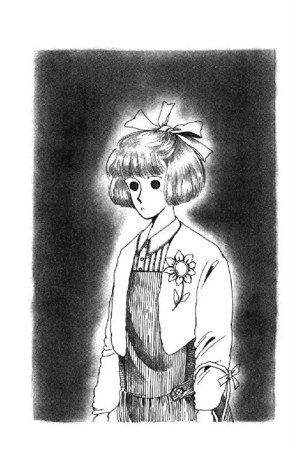
みんな顔を見合わせた。一番青ざめたのは、香織さまだった。
「ど......どうしましょう。わたくし、そんなこと気にしてなくて。伺ってみませんでしたわ」
「私は担当です」
アーミーおじさんがムッとした感じで言った。
「編集部を代表して来ています。当然、進行を見させていただきます」
「なるほど」
紫ガードマンさんは重々しくうなずき、大きな手に折れないかしらと心配になるような華奢なボールペンを握りこむと、手元にササッと何かメモをしてから、おもむろに黄色いバッジを差し出した。
「つけてください。お客さまには全員必ず、つけていただくことになってます」
「私、付人です!!」
小熊さんが急いで言った。
「ほら、先生の鞄だって持ってます」
紫ガードマンさんは、ヴー、とかなんとか唸るような声をだしてから、しかたなさそうにバッジを渡した。
「あたし、実の妹なんですけど」
うららまで言い出した。
「姉は虚弱体質でして、リハーサルなどが必要な場合にはスタントをやることになっているんですけど」
噓ばっかりぃ！
そんな、そんな、みんなひどいわ。あたしはいったいどうすればいいのよ？
「そちらは？」
もったいぶった様子でうららにバッジを渡しながら、ガードマンさんがあたしを見た！
わぁん！
「えっと、えっと」
「ぎゃ───っ!!」
突然、あたしの声をかきけす勢いで、うららが絶叫した。
思わずみんな、びっくりした顔でうららを見る。
「やだ......おねえさん！ あれよ、あの子よ！ また出たのよっ！」
うららったら、香織さまの胸元に飛びこんで、キョロキョロあたりを見回してみせている......？
「何が出たんですかッ？」
紫ガードマンさんが、腰の何かに手を伸ばした！
「だ、だ、だって、あなた今、そちらは、って、なんだかそのへん指さしたじゃないですか」
うらら口をあわあわさせながら（じょうずだ）一瞬サッとあたしのほうを指さしてあわてたみたいにひっこめた。
「は？」
「いったい、誰をさしてるんです？」
「だからほらそこの、頭にリボン結んだお嬢さん......」
「やっぱり！」
うららが香織さまを見つめた。香織さまが沈鬱なおももちでうなずいた。
「......あの子ね。わたくしを慕って何度も何度もお手紙くれたりしたのに、やっと逢えることになったサイン会の会場に向かう途中、交通事故で死んでしまったあの子。まだ成仏できないのかしら。ああ、そんなに心残りだったのね。なんてかわいそうな、かわいそうな、未来ちゃん！」
あのね......。
「ふざけるんじゃない！ あんなはっきりした幽霊がいるものか！」
ガードマンさんはテーブルを回ってきて、顔まで紫にして怒鳴ったんだけれど。
「先生、しっかりしてください。お気を確かに」
「だいじょうぶ、わたくしは平気よ。ああ、わたくしに何かしてあげることができたなら」
「なまんだぶ・なまんだぶ」
「おかしいなぁ。私も、けっこう霊感強いほうなんだが。そんな子、まったく見えませんね。おたく、ご先祖によっぽど徳の高いかたがいらしたんじゃないですか」
みんながあんまり真剣に言うからか、だんだん自信がなくなって来たらしい。
「ほ、ほんとに、いないんですか？ だって、足だってちゃんとあるじゃないですか」
おそるおそるこっちを見てる。
しかたないから、できるかぎり自然な微笑みを浮かべてみせたつもりなのに。大きな図体を縮こめるようにしてビクッ、となさる。
「お気の毒に」
うららは彼のすぐそばに立つと、なぐさめるように肩に手をかけた。
「普段はこんな朝っぱらから出てこないんですけどねぇ。よっぽど香織ちゃんが好きなんだ。スタジオに入りたいんでしょうねぇ。ごめんなさい、変なモン見せちゃって」
変なモンで悪かったわね。
彼は肩から下を硬直させたまま、首だけのっそりゆっくりうららに向けると、へにゃっ、って泣きそうな顔をした。
「ま、実害はないやつですから。元気出してください」
さ、行こ行こ、ってうららが合図すると、みんな神妙に『なんまいだ』とか言いながら、奥のロビーとかいうほうへ歩きだしちゃった。
どうしようか迷ったんだけど、岸田さん帰っちゃったし、こんなおっかなそうなひとのそばにひとり残るわけにもいかない。あたし、まだ茫然としているガードマンさんにきちんとお辞儀をして、ついて行った。
角を曲がって、玄関ホールが見えなくなるところで、うららったら、ひとりこっち向いて立ち止まってニヤニヤしてるのッ！
「あっ、あんたねぇ......」
大きくなりそうな声をあわててひそめて、
「何もひとをバケモノ扱いしなくたって......」
「ほら」
ぱっ、と目の前に何かが出て来た。
黄色いバッジ......？
「うらら......」
「へっへっへ。ちょろいもんよ！ なんだい、あいつ。威張っちゃってさ」
「でも、これ番号ついてるのよ」
「へ？」
「あのひと、番号ごとに誰に渡したか、いちいちチェックしていたのよ」
「えーーっ？ うそォ」
先を歩いてた香織さまたちが振り返るのと、誰かが無言でドコドコ走ってくるせっぱつまった気配がするのが同時だった。
うららとあたし、無言で走りだした。もちろん、香織さまたちのほうへ全力疾走。
重量感のある殺気が、どんどんどんどん迫ってきた。
「いやぁ、なかなかユニークなみなさんで」
地上三階、いくつかのスタジオの間にぽっかり開いた空間にテーブルがあった。取り寄せたコーヒーを配ってくださりながら、顔はお若く見えるのにゴマ塩頭の山崎ディレクター氏が、ニヤニヤ笑った。
「あの融通のきかない角浦くんをだますなんて大したもんだ。ＳＢＳの小錦って、かなりのコワモテなんですがね。この調子なら、本番も心配ありませんね」
おしとやかそうにはにかみつつ、うなずきかけた香織さまは、
「でも、出るの香織ちゃんだけだもんね。あたしら、何もできんわけだし」
うららの声に、しゅん、と肩を落とした。
「ともだちがもう少しあとから来る予定なんですけど、大丈夫でしょうか」
と、小熊さん。
「よく言っておきました。だいじょうぶです」
「では改めまして。十英社の本宮です」
アーミージャケットの担当さんが名刺を差し出した。
「あ、どうも、制作二部の山崎です」
ディレクター氏が、担当さんと香織さまに名刺を返す。
「わたくしは名刺を作っておりませんので」
と香織さま。
「お忙しい中をおそれいります。よろしくお願いします。ええと、では早速ですが、時間おしてますんで......こちらが台本です」
『みなとモーニング』
青いラシャ紙の表紙のけっこう凝った字体の下に、日付と時間。十時から五十五分の番組なんだ。でも、厚さ一センチくらいはありそう。しかもガリ版印刷っぽい。毎日いろんな番組があるだろうに、一時間につき一センチの台本作らなきゃならないんじゃ、ガリ切るひとも大変だろうな。とはいえ、中身は模造紙だし、ずいぶんと贅沢に余白たっぷりみたいだ。
「西先生の出番は、ここと、ここです。はじめの先生がたのコーナーが約八分。あとは最後のみんな揃って『サヨーナラ！』って手をふるところです。このＣＭタイムのところで、席についていただきますので」
「......はい......」
香織さまは、台本を凝視したまま虚ろにお答えになる。
「ウチの前田アナがいろいろうかがいますから、なるべく手短に答えてください。あまり深くお考えにならずに......ああ、でもですね、少しくらいなら黙ってらっしゃる時間があってかまいませんから」
ゴマ塩ディレクター氏は、不安そうに目をあげた香織さまを励ますように微笑んでみせた。
「ラジオとは違います。お美しい先生がたが映ってれば、少しばかりの沈黙にもそれなりの効果があるんです。むしろ最近は、素人が流暢にしゃべくりすぎますからね、あれは軽薄に見えます。ごく普通に、自然体でいてくださればいいのです」
「......はぁ......」
「うかがう内容は、ここにある通りではないかもしれませんが、まぁ、近いところです。どう答えるか、少し考えておいてくださると助かります」
「あのう」
香織さまは思い切ったように顔をあげ、今日は長く下ろしてらっしゃる髪を優雅に肩に揺すりあげた。
「ここには、アナウンサーのかたと久米かおりさんとわたくしのやり取りしか書いてないみたいなんですけれども。久米さんとわたくしと、あと、どなたがお出になるんですか？」
ディレクター氏が、あれっ、と担当氏を見た。担当氏は、飲みかけのコーヒー茶碗を慌てておろした。
「いや、それが......それが......」
必死に目配せを返す。ゴマ塩は、おいおいと唇を歪めたけど、即座にいい足した。
「実は結崎眉子先生を予定していたんですが」
「結崎さんは今ヨーロッパでしょう」
香織さまの目にだんだん力がこもってきた。
「そうなんですよ。それで飛龍千草先生に急遽お願いしようと」
「妊娠九カ月め。いえ、臨月かしら」
「サビーヌ星川先生は」
「某社の書き下ろしが三カ月遅れで、延々二十日間以上水も洩らさぬ自宅カンヅメ中だと、この前悲壮なハガキが来たわ」
「そして最後の頼みだった塚本レイプ先生が」
「またぞろギックリ腰で入院したそうね。さっき本宮さんから聞いたわ！」
香織さまはテーブルに手をついて立ち上がった。
「わたくし、帰らせていただきますッ!!」
「まぁまぁまぁ。さやかちゃ～ん、頼むからそうメクジラたてないで～」
担当さんがあわてて手をつかんだけれど、ふりほどかれた。
「冗談じゃないわ。こんな卑怯なやりかたには我慢できません！」
「いいですよ。でも、番宣には、先生のお名前がしっかり入ってますからね」
担当さんがいつの間にか死守してしまっていたバッグを取り戻そうとしていた香織さまが、え？ と顔をあげた。
ディレクターさんは、肘ついて頰を支えたまま、上目づかいに香織さまを見た。
「西さやかが見たいって、チャンネル回すひともあるはずですよ。わざわざそのために早起きしてくれてる子もあるんじゃないですか？ ビデオに撮っておいて地方のともだちに送ってあげよう、なんてことだって。それ全部、捨てちゃっていいんですか」
「でも！ それはそちらの......」
何か言おうとした小熊さんを、香織さまが目で制した。
「......八分間っておっしゃった？」
「そうです。たった八分です」
香織さまはディレクター氏のほうに、一歩踏み出した。
「やってくれますか」
頰杖を外しながら、ディレクター氏が笑った。
その顔を、香織さまいきなり平手でひっぱたいた！
「これが、八分間の代金です」
真っ赤な手形のついた頰をさすりながら、ディレクター氏があわててうなずいた。絶句してる担当氏の力の抜けた腕からサッとハンドバッグを奪うと、香織さまはパンプスのかかとを鳴らしながらきびきびとどこかに歩いてってしまった。
すぐに、ダッ、と小熊さんが追い掛ける。
「かっこつけすぎ」
うららが小さくつぶやいて、首を振ったけど。
西在家さんちのおねえさまらしい、って、あたしは思った。
スタジオはとてつもなく広くて、天井も普通の三倍も四倍もある感じ。そこを、後ろから見るとぺこぺこの衝立で仕切って三分の一くらいに狭くした中に、『みなとモーニング』のセットができている。ライトがいっぱいついていて、すごく明るい。
あたしとうららと担当さんが、頰っぺたの腫れをタオルで冷やしてるディレクターさんに連れられて入っていったのは、ちょうど『スタジオにお越しのお客さま』たちがぞろぞろと雛壇に座ろうとしている時だった。
「......なんか異様に胡散臭くない？」
うららがポケットに手をいれたまま、顎であたしの肩をつついた。
「なにが」
「あのひとたち。上の段みんなバーサマで、中の段がオバンで、下のほうにくるとだんだん若くなってサ。数の割合とか、やけにキッチリしてない？」
言われてみれば、確かに変だ。駅の雑踏のなにげなさと、どこかがひどく違ってる。
あ、そうか。ほとんど女のひとばっかりなんだ。そのわりに、お友達グループっぽいのが全然ない。あるよね、普通。お洋服のこのみとか顔つきの感じとか......ここからここまではいっしょ、みたいな空気が。それがないのよ。あまりにもみごとにバラバラすぎる。無個性的すぎる。
「平凡なひとしかいないわね」
「ねー。テレビ局来ちゃうってんで一世一代のキンキラキンに着飾っちゃった、みたいなのがひとりもいない。絶滅したのかな？」
「誰もキョロキョロしてないわ。みんな堂々としてる」
「きみたちにはいちいち驚かされるな」
ふと見ると、背中のほうにタオル片手のディレクター氏が立っていた。
「このひとたちは、プロだよ。ハガキで応募して来たわけじゃないから、スタジオもスターも今さらめずらしくないんだ」
「やっぱり」
「こういうのにも、プロさんがあるんですか!?」
「プロダクションがあってね。たいがいエキストラとこういうのと両方引き受けてるところなんだけど。中には相当のベテランさんがいるよ。一日二、三カ所回るひととか。手帳にびっしり、各局の公開番組の予定が書きこんであって、『三時から神南、七時までに六本木に入らなきゃならない』とか、そこらのタレントよりよっぽど忙しかったりして」
「なるほどねー」
うららは腕組みして唸った。
「どーも全員無難なオバサンに見えると思った。まーこれなら適当にトシ食ってるほうがいいわけだし、黙って座って拍手とかしてりゃいいんだもんな。そこらのスーパーでパートするよりは、おもしろいかも。歌手とか役者とかにもしょっちゅう逢えるわけだし」
「やるかい？」
「えーっ、あたしゃやですよー」
「だろうな」
ディレクター氏は皮肉っぽく笑った。
「何時間も拘束されて、時給も安い。その上プロダクションが半分くらいは上前はねてるはずだ。テレビに夢も持てなくなるしね」
「夢？」
今度はうららが嘲笑う番だった。
「だから見学者、なかなか認めないんですか」
急にパッと電気がついた。ただでさえ明るかったのに、真ん中のキャスターさんの席のあたりがピカピカに輝きだす。セットのほとんどが白いから、まぶしいったらないの。
「そうか。きみたちの世代は、はじめから夢なんか見ないか」
「見る子もいるかもしれないけど。さっきのあれ、見ちゃったらねぇ」
うららは、ぽけっとセットに見惚れている編集氏のほうにあごをしゃくってみせた。
「おたくらみんな計画の上でしょ。はじめから、姉と久米かおりを対決させるつもりだったんでしょう？」
え──っ！
「わかったか」
「あれでごまかされるバカいませんって。へたに誰かいれるより、そのほうが絶対おもしろいもん。おそらくあっちも承知の上だな。だから、事前に香織ちゃんと顔合わせて決定的な悶着起こさないように、どっかに隠れてるんでしょう。そのぐらい誰だってわかりま......」
......ひ、ひどい......！
「うららっ!!」
「あ。ここにひとり例外がいたんだった」
「あんたそんな、そんな吞気なこと言って、自分のおねえさんじゃないの！ だまされてるのわかってたんなら、なんでちゃんとしっかり」
「だぁってさぁ」
わぁあっ、と歓声が上がった。
見ると、セットの横をどっかで見たことある背の高い男のひとが通りかかっていて、例の雛壇のかたがたに気のない様子で手を振ってる。そう言えば、歓声もきっぱりわざとらしい。まるで『有名人』のかたが通ったら、キャアって言うもんだ、って決まってるような......あ、思い出した。あのひと、元プロ野球選手の観音崎さんだ。さっきの台本のホストのところに名前があがっていた。
なんだか、やだな。こういうの。
どっちもまるで、ずるずるダラダラ、しかたなくやってるみたいなんだもん。そんな中に、あのいっしょうけんめいな香織さまが放りこまれて、一番嫌いなひとと対決させられて、それで『おもしろくなるからいいんだ』なんて......。
「五分前でーす」
あれっ？
「本番ですか？」
「そう」
ディレクターさんが言った。
うわうわうわ！ なのに、どうしてみんな、そんなになんでもない顔しているの？
「あたしたち、ここにいていいんですか？」
「平気。小さな声でならしゃべってても大丈夫、あのマイクにはこっちの声までは入らないから」
「あ、いたよー」
「オーイ、来たぞぉ」
聞き慣れた声がしたと思ったら、本番目前だというのにあけっぱなしのドアから、森戸南のみんながざわざわはいって来た。先頭にいた香織さまが、小熊さんにバッグや上着を渡して、局のひとらしいトレーナーのひとに連れられてセットの向こうに行ってしまう。
ひとこと、ひとこと、『がんばって、負けないでください！』って言いたかったのにな。
「うわ、でか～～い!! へぇ、これがスタジオかぁ」
「きゃあ、ほんものの前田みどりさんだ♡ やーん、感激。あたしお天気おねえさんの頃からずっとあのひとのファンなのォ♡」
「あたしサイン帳持ってきちゃった」
「浜田賢い！」
「そこッ。静かにッ!!」
誰かに叱られちゃったけれど。
ああ、そうよね。そうよね。こういうのが、正しいテレビの見方だと思う！ だってほら、前田さんだって、ほんとのほんとに嬉しいって顔でお辞儀してくれて。あの無愛想な元野球選手さんまで、意識して急に照れたみたいにネクタイなんか直してるじゃないの！
雛壇組合のみなさんは、しらっと無視なさってたり、おバカにしたような顔でヒソヒソ隣と囁きあったりしてるけど......単なる観客、まるきりのミーハーだって『ほんもの』はやっぱり強い。なんたってどんなにお安くたって『シゴト』でお金もらってやってるひととは、パワーと情熱が違う。誰に頼まれたわけでもないのにやっちゃうって、なんてすごい、なんて頼もしいことなんだろう。
来てよかった。そうよ、なにより香織さまのために！
「三分前！」
「きゃー、きゃー、きゃー！」
「うわ、どうしよう、あたしあがっちゃった」
「バカ。関係ないじゃないよ。こんなとこまで映さないんだし」
「だってェ」
だいぶ小さな声になってるんだけど、カメラのひとや、あちこちに散らばったスタッフのひとたちまで、なんだかチラチラこっちを気にしてる。
「ね、みんなちょっと。静かにしようよ、恥ずかし......」
「......いや......いいよ」
ぽん、と肩に手を置かれた。山崎ディレクターだ。
「とってもいい。こんな新鮮な雰囲気は久し振りだ。ねぇ、きみたち、どんどん騒いでくれよ。特に、さやか先生が出てきたら遠慮なくキャーキャー言ってほしい」
何をまた目なんか輝かせて......。
「え──っ♡」
「いいんですかぁ？」
「いい。じゃんじゃんやってくれ。搔き回せ。なんなら乱入したって構わない。俺は止めん」
んなムチャクチャな！
「うわー、テレビに出れるのぉ？」
「しまった。ビテオ、セットしてくるんだった」
「だめだめ」
うららが手を振って、早口でディレクターさんに囁いた。
「やめたほうがいいですよ。言われてやったんじゃ、うまくいきっこない。こいつらプロじゃないんだから。カメラ回ったらたちまちカチコチになってブリッ子しますって」
ディレクター氏はあんぐり口をあけて、それから閉じて、ゴクンと唾を飲みこんだ。
「うららくん......だっけ？」
「は」
「ほしい。きみがほしい！」
「おっとっと」
うららはあたしにしがみついて、冗談っぽく紛らわそうとしたんだけど。
「うちの番組に出演しないか？ いや、まだキャスターは無理だな。突撃レポーターみたいなのがいい。その判断力、バランス感覚、とっさのしゃべり、ルックス、全部いい。冷静でひとを食ってるが、若さなのかなぁ？ わざとらしさがないからかな。なぜかイヤミにならない。不思議な魅力がある」
「勘弁してくださいよ」
うららはチャッ、と手をふってあっちを向きかけたんだけど、肩ごしにふりかえって付け加えた。
「あたしゃまだ就職したくない。だいたいアガリ性でしてね。親もすっごく厳しい。そういうことしたら勘当されますからね」
噓ばっかり。
「親御さんなんか俺が説得してみせる。週に一度！ 月イチ！ いや、とりあえず試しに一本だけでも」
「三、四年先なら、ありがたくお受けしちゃうかもしれませんけど」
「今いくつ？」
「五月で十六」
「モモエ（註９）はその頃すでにスターだったんだぞ!!」
「関係ない」
とうとうディレクター氏が黙ったとたん。
「ちょっとちょっと、聞こえたわよー！」
奥山さんたち、割って入った。
「チャンスじゃないのよ。なんで断るの？」
「もったいない......あたしだったら、すぐやっちゃうのにィ」
「おじさん、あたしは？ あたしじゃダメ？ ひとりとは言わない、こっからここまでまとめて、どお？」
「いや、それはちょっと」
「うららもいいけど、この子のおにいさんはもっと絶世のハンサムですよォ。今がお買い時」
そ、そんな、やめてよっ！ 朱海さん、テレビに出したりしないで。この前の時だって大変だったんだから。
「言いたいこと言ってんなぁ」
すったもんだ揉まれて、しのごの逃げてるディレクターさんを横目で見てニヤニヤしていたうららが、あたしに気付いた。
「どしたのよ」
「ん。なんでもない」
「ならいいけど......」
いぶかしがるうららの腕に腕をからめたとたん、
「十五秒前です！」
声がかかった。
腕、黙って貸してくれるね。賢さ、やさしさ、元気良さ。うららはなんでも持っている。だから、ひとが惜しがる『テレビへの出演』なんてことも、あっさり蹴っちゃえるんだわ。
もったいない。
でも、こんなことにガツガツ飛びついたら、がっかりだったかも。そんなの、うらららしくないもの。あのけなげな杉丸じゃないけど、うららが遠くなったら、どんどん立派になってっちゃったら、きっと寂しいと思う。
あら。そう言えば、杉丸、来なかったみたいだな。せっせと英語の予習してるのかしら。
「ご、よん、さん」
杉丸は偉い。
腕を離しても、うららは何にも言わなかった。
「に、いち......！」
スタジオのあちこちの大きなモニターに、『みなとモーニング』の文字が躍った。
前田アナと元野球選手さんの軽いおしゃべりがあって、最初に『今朝のみなと』コーナーのビデオが回った。横須賀の戦艦三笠のそばから猿島への渡し船の話題。へぇー、あれって東京湾にただひとつ残された自然の島だったのか。知らなかった。
意外に思ったのは、アナウンサーのひとがずいぶんボソボソとしゃべること。広いから、あたしのいるところにはそうしか聞こえないのかもしれないけれど、家でテレビをつけている時の騒がしさがまるでない。
こんなに大勢いるのに、みんなみごとなまでに気配を殺しちゃってるんだよね。
あたしたちの前には、重たそうなカメラが何台もあって、隙間を埋めるようにマイクつきのヘッドフォンをしたひともたくさん散らばっている。おかげであっち側が見にくくてしようがなくて、うららなんかサッサと脇を縫って前に出てっちゃったわ。ほんとに度胸がいいったら。
カメラのひとはだいたいこの道何十年！ って感じのするおじさまたちで、あたりのひとはそれよりはだいぶ若い。どういうお仕事してるのかよくわかんないひとばっかり。カメラさんが動く時に、たくさんひきずっているコードを手繰り寄せて邪魔にならないようにどける係専門みたいなひともいたりして、なんともお気の毒になる。テレビ局にお勤め、なんて言えばカッコよく聞こえるけど、実際はコード整理の係かもしれなかったりするのね。
映される側は、いくつかのパートが半円状に並んでるの。
真ん中がアナウンサーさんたちの席。その左には、今週のプレゼントかなんかだと思う。ピクニック・バッグが飾ってあるコーナー。右にはキラキラ揺れるモビールみたいな壁を背にして、白いテーブルと椅子が三つ並べてあって、ここがたぶん香織さまたちのお席になるんだろう。そのさらに右が例の雛壇、そことあたしたちの間のペコペコの壁には、鎌倉まつりの流鏑馬の写真のポスターが貼ってある。裏から見ると、ただの衝立みたいだけど、これもきっと映すんだわ。うっかり後ろから押したりしないように気をつけなきゃ。
よく言われる話だけど、テレビって、ほんとのことを映すわけじゃないんだ、ってほんとみたい。色も違うし、距離感や大きさもなんだか全然違う。前田アナはいやにピンクっぽい派手なお化粧をしているのにモニターだと素顔みたいだし、こんなに広い空間が、まるでぎゅっと潰されたみたいに見える感じ。カメラのファインダーなんて──おじさんがちょっと横を向いた時に見えたんだけど──青みがかった白黒よ。よく混乱しないなぁ。
突然、わさわさっ、とみんなが動いた。ピンクの頰っぺたの前田アナが、大急ぎって感じで白テーブルのほうに移動する。振り返ってみると、モニターが音のない（だから何のだかまるで思い出せない）ＣＭを流している。あ、あの黒いワンピースは香織さまだ。もうひとり、黄色いアロハシャツの女のひとも出てくる。あれが久米かおりさんかしら。
うわっ、いよいよみたい！
こうしてはいられないわ、あたしも前のほうに行っちゃおう。
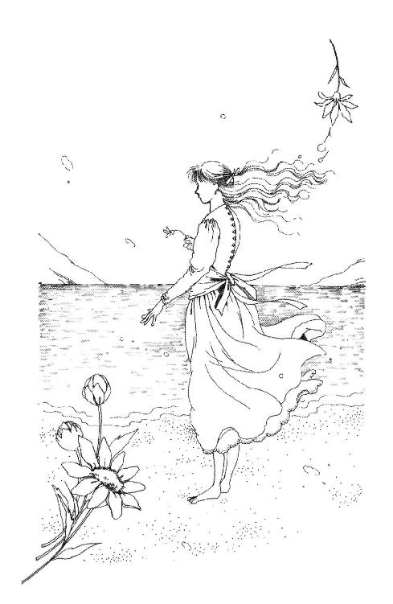
高い空、青い海。ぼんやり渚を歩く女の子の白いドレスが光ににじむ。
「愛──それはいつの時代にも、少女の心をつかんではなさない」
深刻っぽいナレーション。
鎌倉のほうらしい閑静な住宅地の人気のない道路を、真っ赤なスポーツ・カーが走り抜ける。
手にしたマーガレットの花びらを、一枚一枚、千切っては風に散らす女の子。頰に光る涙。不意に女の子が振り向くと、防波堤の上、キッ、と停まる車。花を捨てて駆け出す女の子の細い足首、なんと素足よ。
クスクス笑う雛壇組合。
車のドアをあけて立ち上がる男のひと。走る女の子のスローモーション。水に落ちたマーガレット、波のきらめき。そのままカメラが上を向くと、抱きあうカップルのシルエット。高まる音楽......。
「バカにしてる！」
小熊さんが低く呻いた。いつの間にか、みんなこっちに来てる。カメラさんや、あのコード係の方々の間に積み重なった顔が見えた。
突然、場面はザワザワした街角になる。制服の女の子たちが行き交い、どこかの学校の門らしいのが映る。ピースする制服。
「ハマジョかな」
「だな。中学のほうだ」
ハマジョ......横浜女子学園短大付属中学か。
なるほど、と思ってると、ひとりの女の子がアップになって、わざとっぽく目を見開いた。
「『ギャルズ・ノヴェラ』？ ええ、読んだことあります」
「何冊ぐらい？」
「十冊くらいかな？ 友達から借りて。けっこう好きです」
違う子たち。
「なんたって久米かおり！ もう最高！ ねーっ」
「うん。すごく読みやすい。マンガよりヒマつぶれるし」
「んで、いろいろためになる」
「どんなこと？」
「えーっ、だからほらァ、エッチとか、男のだましかたとかァ」
「顔出るのォ？ まずいよ、それ（クスクス）」
雛壇の真ん中へん、主婦のかたがたの苦笑い。
別の少女。
「兄も時々読んでるんですよね。あたしの、引っ張り出して」
また別の少女。
「マンガだとぉ、あんまり買ってもらえないんだけどぉ。文庫だと、もっと読みなさいって。おかあさんが」
たくさんの本を抱えて、きゃあきゃあ恥ずかしがる一群。どれどれ見せて、って感じで頭をくっつけあって読む子たち。自分の鞄の中から、手作りっぽい布カバーかけた文庫を取り出して見せる子。アップになったら、ああ、良かった！ 西さやか、って書いてある。『夕暮時はプリンセス第四巻』ですって！
とたんに、香織さまがアップになった。
ご自分を見てびっくりしたみたいに目をそらす。画面は、ニヤッと笑ってるアロハのひとに変わって、それから真正面の前田アナになる。
「今日はスタジオに、最近たいへん人気の少女ロマンの先生がたおふたりにおいでいただいております。西さやかさんと（香織さまアップ、テロップ出る。麗しい微笑）久米かおりさんです（画面切り替わり同様にテロップ。カメラを見据えたまま、十二度ばかり首を下ろす）。ご覧のように、おふたかたともとてもお若い、まるで作品から抜け出してこられたような女性です（画面ひいて三人の全身が見える）。楽しいお話をうかがわせてください」
「よろしくおねがいします」
「どーも」
「こちらが先生がたの新刊なんですけれども......」
「しまった！」
隣のひと山の中ほどで、奥山さんが、チッチッ、と舌を鳴らしてるのが見えた。
「ね、ね、まずいよォ。声かけるの忘れちゃったじゃん」
「ほんとだ」
「今からでも遅くないよっ。やろ、やろ」
「やるか？ なんて？」
みんなが、こっちにいる小熊さんを見る。
「オーソドックスなのは『さやかさまー』ですね」
「よし、せーの」
え、うそ、ほんとに？
「さやかさまー!!」
「さまー」（誰か出遅れたなっ......）
突然の大声に、新刊の説明をしかかってらした久米さんがムッとした顔を歪めた。
こ、怖い！
楚々とした香織さまとは対照的に、スペインかどこかの血がまじってるようなエキゾチックなお顔立ち。思いきり太い眉の下の瞳を上下真っ黒に隈取っているもんだから、なんだかギロキロ目ばっかり目立つのよ。
「まぁ。ほんとうに、大変な人気でいらっしゃいますねぇ」
すかさずフォローする前田さんに、香織さまははにかんだお顔でチョコン、と首をかしげられた。
「ブリ」
と、にべもないうらら。
「この人気の秘密はなんでしょう？」
「さぁ......」
香織さまが優雅に目を伏せていると。
「狙いが正確だってことですよ」
画面の外から、久米さんが言った。カメラがパッと切り替わる。
「子供たちの程度......というか、ニーズにうまく合わせてるからでしょう。さっきのビデオでも、わかりやすいって声があがってましたね。結局、あれなんです。少女マンガが流行ったのだって、高校生ぐらいで活躍してる作家が多くて、自分たちの世界、同世代の考えかたを代弁してくれたってことが大きいんじゃないですか。それが、活字分野にもようやく始まったってことね」
フラダンス人形が散らばった柄のアロハ、がっしり腕を組んだ姿勢。後頭部から突き出したポニー・テールは馬の尻尾並みにご立派で。つっぱなしたような言い方も、なんだかやけに威圧的だ。
「としますと......戦略的にそうなさっていると？」
「もちろん。プロですからね。読者のことを第一に考えますよ。ひとことで言えば、かっこいい男の子、かわいい女の子、ちょっとドキドキするような事件、ハッピーエンド。流行もちゃんと取り入れて、全体を明るくギャグっぽくしておけば、まず間違いはない」
「西先生は？」
前田アナが思わず視線を振ると、
「わたくしは......」
微笑みの端をひきつらせながら、香織さまが言った。
「そんな風に型に嵌めて考えたことはありませんわ。筋とか登場人物の性格というのは、ほとんど、書きながら自然に『わかってくる』もので......」
「そりゃもちろん」
またインターセプトする！
「いい小説のキャラは勝手に動くものだわ。でも、無意識のうちに押さえてるポイントってあるでしょ？ それがなきゃ読めないし、生まれつきそれがわかってなきゃ作家じゃないよ」
「なるほど。あの......」
「キャラを生かすには、へたに凝った筋は邪魔なのよね」
何か言いかけた前田さんがあわてて黙ると、久米かおりはどっかりテーブルに乗り出して、すごい勢いでしゃべりだした。
「これ、テレビの影響かもしれないな。ほら、長寿番組ってたいがい一話完結じゃない？ おまけに主人公が集団で、どのタレントのファンも満足できるように、毎回毎回必ず全キャラに見せ場があるんですよね。マンガもそう。連載が終わっても、ヒーローはキャラクター・グッズとかでいつまでもそばにいてくれる。映画だって、人気あるとすぐにパート２パート３作るし、引退したはずの歌手もどんどんカムバックしてくるし。今の子って、生まれた時からずっとそういう雰囲気に囲まれて育ってるから、何かが決定的に『終わる』ってことが許せないんじゃないかな。よく来ましたよ、こっちがもう忘れてる小説の『続きはいつ書くんですか』って質問が。完結してるつもりの短編にもね。なまじ余韻ある終わりかたなんかすると、途中だって思っちゃうみたい。それに気づいてから、わたし、腹くくったんです。シリーズものを書こう、毎回ちょっとしたエピソードがあって、いついつまでも続けられるような小説を書こう、って。小説職人に徹することにしたんです」
「謙遜してらっしゃるのかしら？」
前田さん、やっとの思いで口を挟んだ。
「とんでもない！ 通俗は偉大ですよ。鋭い嗅覚と、みつけたものを即美味しく加工するテクニックがなきゃできない。多くのひとにわかってもらえなきゃ困るし、大文学みたいに何年も何年もかけて書くわけにはいかないんですからね。おまけに書いたものが書店に並ぶまでには、最低二カ月のタイムラグがあるんですよ。今おもしろいって言われてるもの取り上げても、まるでダサい。自分が世間とズレたり馴れ合ったりしないように、いつだって勉強して前進してなきゃいけない。だから、やり甲斐があるわけですよ。ああ、でも、西さんのようなやり方もありますよね。わたしみたいなお尻の軽いのと違って、これと決めた線をけっしてお崩しにならないタイプだから。しっかりと固定層をつかんでらっしゃって、羨ましいわ」
「なるほど」
前田さんはホッとしたように視線を振ったんだけど。
香織さまは、中空にさまよう目をなさったまま、きちんと揃えてななめに流した脚まで全身ぴくりとも動かない。
「怒ってる怒ってる」
うららがニヤニヤ笑った。
「どして？」
「『これと決めた線をけっしてお崩しにならない』ってのはワンパターンってことだし、『固定層をつかんでらっしゃる』ってのは、結局はマイナー受けだって皮肉でしょうが。香織ちゃんそのへん一番気にしてるから」
「なるほど」
作家さん同士の皮肉っていうのは、ややこしいのね。
「おまけにあのひと、この前『純文学』に短編送って呆気なくボツ食らってんだよね。どうもそれ、知ってて言ってるみたいだな」
............。
その間に、前田さんは、
「西先生。どうですか、久米先生はたいへん理論的なかたのようですが」
なんとか香織さまの視線をとらえることに成功していた。
「先生は、ファンのかたやご自分の作風を、どうご覧になってらっしゃいます？」
香織さまは目をぱちぱちさせて、それから、意を決したようにキッと微笑んだ。
「書く時のわたくしは、神がかりのようなもので......わたくしの意志や計算で物語の行方を決めたこと、一度もないんです。だから、今の時代に合ってるかどうか、多くのかたに受けいれられるかどうかなんて考えるゆとりは、全くありません。でも、だから、どんなに世の中が変わっても変わらない何かが書けるかもしれないと思うんです。そしてそういうものを好きだと言ってくれるひとも、今は多くはないのかもしれませんけれども......けっしていなくなってしまうことはないと信じたいんです」
「います、私がここにいます......！」
涙ぐんだような声でつぶやく小熊さんを、まわりのみんながぎゅっ、と支えた。
ぐすっ。素敵だぁ。嬉しいわ。さすがもと華雅御前、やっぱり香織さまは、敬虔にして潔癖なる華雅エンヌ魂を持ってらっしゃるのだわ！
「そうよ。人間の努力なんて、天のおとうさまのおめぐみの前では塵に等しいものなのよっ。なんだかんだ偉そうな理屈こねたってムダなのよっ！」
「あのね、ミッキー」
うららがポリポリ頭を搔いた。
「言うほど立派ならいーけどさ。あれで香織ちゃん、増刷がどーした、初版部数がどーしたって、しょっちゅうガタガタわめいてんのよ」
「............」
「さきほどのビデオの取材で横浜女子学園短大の付属中学にうかがった時に」
前田さんが、元気よく話を変えた。
「西先生にファンレターのお返事をいただいたというひとがあったんですよ。ちょっとお借りして来たんですけど......これがそうです」
「まぁ」
淡いピンクの封筒がアップになる。
香織さまの顔色も、ようやく明るくなって来たみたい。
「びっくりしました。このひとも──高田佳子さんとおっしゃるかたですが、ほんとうに嬉しかったって。大切そうに、毎日持って歩いてるそうですよ」
「偉いわねー」
久米さんがすかさず口を挟んだ。
「私とうとう全面的に印刷ハガキにしちゃった。裏切った、付け上がってる、って評判悪いんだけど。結局溜めこんでシゴトみたいになっちゃうでしょう。その分の時間、小説に心血を注ぎこむほうが正しいと思ったからなんで。ゴメンナサイしちゃった」
「わたくしもなかなか時間取れなくて困ってはいるんですけど......」
「以前はちゃんと封筒でコピー入れて、端にちょっと走り書きとかしてたんですよね。その前は、まあデビュー直後であんまり人気のないウチだったから、全部自分で書いてもみたんだけど。ね、西さん、疑われたことない？ ほんとに自筆か、誰かが先生のふりして書いてるんじゃないかって。頭に来ちゃってさ。でもなんか、ウワサなんだけど、ほんとにそれやってるヒトあるんだって。手紙全部最初からバイトさんにまかせちゃって、すごく嬉しいヤツだけ取り分けておいてもらって、後から読むんだって」
「そんな......！」
カメラは忙しくふたりの作家さんを切り替えた。
ひとりは嬉々としてしゃべりまくり、ひとりは蒼白になって唇を嚙んでいる。
「そんな虚しいことするくらいなら、きっぱり『私は忙しいからこれでせいいっぱい』って顔したほうがよっぽど誠意あると思わない？」
「わっ、わたくしはそんなことしてないわ！」
「あらやだ。西さんだなんて言ってないじゃないよ。でもさ、困ったことに、証明ってできないじゃない？ 偽者が書いてたってわかんないようなもの、いっしょうけんめいやるよりも、もっと他にやらなきゃならないことがあると思ったんですよね、わたしは」
「証明？」
香織さまのこめかみがピクピク動いた。
「なんなら筆跡鑑定してもらったってかまわないわ！ そうだわ、わたし、今度の本のあとがき、手書きのまま印刷してもらうわ!!」
「それも代筆じゃないって、どうやったらわかるの？」
「............！」
「無駄よ。そんなつまんないこと真剣になって弁解して何になるの？ ヒマねー。いいじゃないの、どうだって。言っちゃなんだけどね、そういう風に読者と癒着するひとがいるから、わたしなんかがやたら冷淡に見えるのよ。いい迷惑よ。返事ってそんなに必要？ 言いたいことは、ちゃんと作品で言えばいいじゃない？」
こっちこっち、こっちに頂戴、とカメラさんに手をふる前田さんが、一瞬映ってしまった。
「あ......どうもなかなか、大変なお仕事のようですね」
にっこり。さすがプロ、いささかも動じずに、笑顔を見せた。
「それでは、最後に両先生に、今後の抱負をうかがわせていただきたいのですが......」
「やめますッ!!」
香織さまが叫んだ。
「わたくし、もう書きません！」
「返事を？」
と、からかうような久米さん。
「小説よっ。こんなひとと同列で仕事したくありません!!」
「え────っ!!」
「またか～～」
と、担当さんがしゃがみこんだ。
「言った」
うららがつぶやいた。
「ウチじゃーしょっちゅう言ってるけどねー。ここでわめいちまったのは、ちーとヤバいわなぁ」
そんな、へらへら笑ってる場合じゃないでしょうに！
「何言ってんのよッ！」
久米かおりがドスのきいた声で怒鳴った。
「ちょっと西さん。あんたさっき、何て言ったのよ？ 未来永劫残るような名作を書くんじゃなかったの!?」
「家で書くわ」
香織さまは肩を大きく上下させた。
「これこそっていうのが出来たら、わたくしの死後に発表してもらいます」
「ふざけんじゃないわよ。生活賭けないでチマチマ書こうだなんて、甘ったれよっ!!」
「あ、甘ったれですって？」
「そーよ。あんたは結局、お嬢さまなのよ。本気で、自分のこと、パトロンに囲ってもらってルンルン仕事させてもらうほど価値のある芸術家だとでも思ってんの？ ふん。あんたはただ、負けるのがわかってる闘いから逃げ出したくなっただけよ。それだけあんたは、売れかたや評判や人気を気にして、がんじがらめになってんのよ。あんた、あたしなんかよりよっぽどテクニックに走ってるはずよ。ウチの読者をバカにして、このへんでなきゃ読めないだろうってあたりで楽なシゴトしてるじゃない。そのくせほんとのあんたが出せないのは、読者の程度が低いからだって不満ばっか持ってるでしょ。だから、文学に劣等感なんか持つのよ。なにが『夕暮時はプリンセス』よ。なにが『きまぐれロコモーション』よ」
「『おませに』」
「似たようなもんよっ。あんなふ～ちゃか内容のないラブ・コメが、あんたの神さまのおめぐみだとでも言うつもり？ 書きたいものしか書かないっていうんなら、あの、最初のころ書いてた迫力の変態小説はどうしたのよ？ なんで書かないのよ。あれをちゃんとウケるように、ドーンと売れるように書いてこそ、あんた、ホンモノになれるんじゃないの。それ、やんないでひとの顔色ばっかりうかがってる。挑戦もしないで諦めてる。そんなんじゃ、あんた、自分のふりして代筆してる、ニセモノじゃないよーっ!!」
長く尾をひく叫びを最後に、ようやく、久米さんが黙った。はぁはぁ息ついてる。
香織さまの目の中で、たくさんのライトがきらきら揺れた。見れば、モニターはいつの間にかＣＭに切り替わってる。
「手抜きなんかしてないわ。諦めてもいないわ！」
香織さま、気付かずにしゃべりだした。
「だけど迷ってるのよ。あんたみたいに器用に割り切れないのよ。それを、どうして、わざとみたいに言うのよ？ どうしてそうひねくれた見方ばっかり」
「先生、先生、もう終わってますので......」
前田さんが、いそいそ香織さまをひっぱった。
「ここはじき本番に入りますので、続きは、どうかあちらで」
「じゃあね！」
立ち上がって頭を振ると、久米さん、茫然としてる香織さまを置いて、大股にひっこんでしまった。
担当さんが走っていく。香織さまの袖をつかんで、何か言ってる。雛壇席のかたがたも、さすがに息を吞んじゃってる。
「こりゃ最後のみんなでニコニコはムリだな......」
知らないスタッフのかたが走って行きしなつぶやくのが聞こえた。
香織さまが、追いすがる担当さんの腕を振りほどきながらツカツカ歩いてくる。ひ～ん、あのお優しい美貌が、修羅の顔になっちゃってるよぉ。
「小熊っ！」
「はいっ!!」
「行くわよっ!!」
「ちょっとちょっと香織ちゃん！」
あわててうららが駆け寄った。
「岸田さん、まだ当分来ないよ」
「待ってられないわ。一刻も早く帰って、すぐ仕事よっ!!」
「蔵？」
ぶん、と頭を振ると、香織さまはさっさと（本番中でも結局開いたままだった）出口のほうに歩いてっちゃった。
「はぁ～～」
「すごかったねー」
森戸南応援団が、ため息を洩らした。
「あれ、喧嘩だよね？ なんか、やたら難しくってよくわかんなかったけど」
「あたし小説家になるの、考えちった」
「えー、奥山、そんなつもりしてたのー!?」
「蔵じゃない......か」
うららは肩をすくめて、ゆっくり振り返った。迷彩バンダナを外して額の汗を拭ってる担当さんを見ると、冷たく目を細めた。
「これも、計画のうち？ 天敵も使いようとか」
「え？ んな、まさか！」
「わかったもんじゃない」
言い終わらないうちに、うららは駆け出した。爪先だけで音を立てない。豹みたい。見ると、セットの陰から黄色いアロハのひとが出てきたじゃないの！
うわ、まずい。暴力なんかふるわないでしょうね？
靴脱いで、あわてて追い掛けると、ちょうど久米かおりがうららに気づいて立ち止まるところだった。
「さやかは？」
ポニーテールを結わえた太いゴムを外しながら、久米かおりは短く尋ねた。
「仕事場に直行した」
と、うらら。
「そう。あんた妹？ よく似てるね」
「顔だけはね」
久米かおりは、外したばかりの輪になった黒いゴムを前歯の間で嚙みながら、ギョロ目を眇めてうららを見た。
「......それで？」
「用件はもう言った」
「............」
「姉がやる気になったかどうか、聞きたかったんでしょ？ ......わっ！」
うららは返事も聞かずにさっさと回れ右をして、あたしにぶつかってびっくりした。
「なんだよミッキー！」
「ご、ごめん」
久米かおりの大きな口がニッ、と横にひっぱられるのが見えた。次の瞬間、指鉄砲で飛んできた黒いゴムに、うららはイテッと後頭部を押さえた。
バイ、と手を振って、スタジオの暗い隅のほうに消える久米かおりを、あたしたちはまるで抱きあったままの格好で見送ってしまった。
大ファンであるトコのために、サインのひとつもいただいておくべきだったかな、と気がついたのは、ずいぶん後になってからだった。
４ 新しいクラス
ひさしぶりの早起きにかけておいた目覚まし、鳴る前に止めた。
まだ少し眠たいけれど、枕さんとお布団さんに、そろそろ別れを告げなければ。
今日は入学式。
今日からもう、ほんとにほんとに高校生なんだわ。わぁい、もう中学生じゃないんだ!!
新学期、新学年、新しいクラス。いったいどんなクラスになるだろう。高等部には外からまたいろんな人が来るだろうし、三年Ｃ組で親しくなったひとの何人か──例えば、杉丸や八木沢さんや中山さん──は、もういなくなっちゃってるはずだから......。
「あ─────っ!!」
自分の叫び声に、思わずすっかり目がさめちゃった。
忘れてた。あたしが、あたしが森戸に残ること......華雅学園高校には受かったけど蹴とばしちゃったっていうこと、説明するの忘れてた！
ううう。しようがないよね。壮行会の日はチャンスをうかがっているうちにほとんどのみんながぐでんぐでんになっちゃうし、テレビの時だって出演者のみなさんのサインもらうんだって大騒ぎになっちゃって、うららとあたしはさっさと先に帰っちゃったし。
......あちゃー。困ったな。きっと何で何でって聞かれるなぁ......ひょっとして落ちたって思われちゃったらどうしよう？
............。
ま、いいか。
なるようになれ、よ。
思い切ってお布団をはねのけて、両腕伸ばして。
「ファイト！」
「おはよ......うわぁ！」
キッチンに下りていくと、テーブルの上がキラキラに輝いていた。真ん中には、アマリリスとポピーのフラワー・ケーキ、淡いピンクのランチョンマットにお客さまの時しか使わない真っ白いお皿とフォークやナイフ、お花の形にしたナプキンまで並んでいて、まるで正式なディナーみたい。
「すごーい」
「新しい一年のはじまりの日ですものね」
オーブンからシュウシュウいってるパンを取り出しながら、ママがにっこり振り返った。
「ただし、メニューはいつも通りのママ流スクランブルド・エッグよ」
「おめでとう」
新聞をたたみながら、パパが立ち上がった。
「うちのお姫さまも、とうとう高校生になっちまったんだな。で、これはパパからのプレゼントだ」
「きゃっ♡」
何かしら？ 真っ赤なツヤツヤの包み紙。
「開けてみるわ！」
わーっ、腕時計（註10）だ！ 文字盤の回りもベルトのとこもみんな柔らかい金色。十二時のところに小さなダイヤモンドみたいなのが嵌まってるだけで、あとの数字は省かれちゃってる。全体が小ぶりで、華奢で、すごくシック。おとなっぽーい。
お誕生日に買ってもらったピンクハウスのツーピースにすごく似合いそう。
「パパ、ありがと！ さっそく、今日してくわ！」
「裏も見なさい」
ちゃんと名前が彫ってある！ MIKU.A。
きっと、きっと、ずっと前から考えて用意していてくれたんだ。言いたがりのパパが、今日のこの朝まで我慢しておいてくれたんだってこと考えたら、胸がじーんと熱くなった。
「ほんとに、ありがとう」
「うむうむ」
パチンと留めてみると、ちょっと緩めでぴったりだった。手首の内側にするか外側にするかちょっと迷って、クラシックに内側にしてみた。できたわ、って見せると、ずっと見守ってくれながら照れくさそうにお髭をひねっていたパパが、急に、にやっ、と笑って、あたしの手の隣にサッ、と左腕を差し出した。ワイシャツの袖口のところにキラッと光ったのは......。
「お揃いなのぉ？」
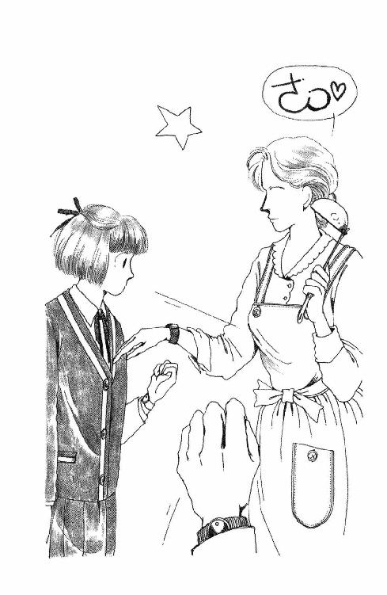
「さっ！」
掛け声をかけながら、ママまでお玉を持ったままの右手を差し出した。
「ママもぉ!?」
「そりゃそうだ。パパとおまえだけじゃ、ママが妬くじゃないか」
「よく見て、ママとパパのは文字盤が黒でしょ。未来のは白よ」
「ほんとだ」
「厳密に言えば、ママたちがお揃いで未来は色違いよ。そのへんはママこだわっちゃったの。ねーあなた♡」
「うんうん」
そんなこといいけど。
それにしても......親子でっていうか、一家でお揃いの時計してる子っていうのも、あんまりいないような気がする......結局新しい時計買うダシにされちゃったような気も......。
「さ、座って座って！ あ、お紅茶もういいわ。未来ちゃん入れてくれる？」
「はぁい」
ニワトリの形のティー・コージーをはずして、カッカと熱くなってるポットを持ち上げようとした時。
「キュ──ン」
コリコリコリ。
お勝手口のくもりガラスのところに、擦ってる前足の梅の花みたいな模様がぼんやり見えた。
「にぎやかだったから」
「羅士丸、妬いてるんだわ」
みんなプーッと吹き出した。
ドアを開けてやると（註11）、羅士丸ったらサーッと横を向き、いじけたみたいにゴロンと横になって、チラッと横目でこっちを見た。
「クフウ───......」
哀れっぽい声出しちゃって......もう。
「わかったわかった。ちょっと待って」
包み紙にかかっていたリボン背中に隠して戻ると、羅士丸は現金にもパッとおきあがって、お勝手口に半分鼻をつっこんできちんとお座りをした。首輪の上からリボン結んでやる。ちょっと短すぎてきれいな蝶々にならなかった。
おすまししていた羅士丸先生、ポカンとして、あわてて自分の顎の下覗きこもうとして、背中見ようとしてもちろんできなくて、途方にくれたような顔であたしを見たんだけど。
「だーめ。いくらなんでも、あんたまでお揃いの時計させるわけいかないんだからね。それで我慢しなさい。さ、ハウス！ ハウスよ」
きっぱり言ってやると、不満そうに首をひねりながら、のろのろ出て行った。
「あ。ごめん」
結局、紅茶を入れてくれてたママが、いいえ、と目を伏せてから、
「入学式は十時からよね」
と聞いた。
「そうなの。朝からご父兄の席は用意してあるとは思うけど」
「未来、先に行ってくれる？ パパにいってらっしゃいしなきゃならないし、ママ着物着るから。ぎりぎりでもいいでしょう？」
「あたしはかまわないわ。それなら、自転車で行く」
「さ、食べよう食べよう」
「いただきまーす」
乗って来た自転車、うっかり３Ｃの置き場に入れそうになって、少し悩んだ。でも、今日ぐらいは叱られることもないはずよね。
軽すぎて拍子抜けするような鞄を荷台から外し、バック・ミラーで頭のてっぺんのリボン、もう一度きりっとまっすぐになってるかどうか確認してから校庭にまわると、あちこちにご父兄らしい姿が見えた。昇降口のあたりにも、ひとだかりがしてる。きっと、あれが、クラス分けの貼り紙だわ。
誰か知った子、いるかな？ ぐるっと見回してみたら。あ。沢辺さんがいる。おかあさまかな、紺色のスーツのひとに襟元なんか直されて、いつになく神妙な顔してたりして。うふ。
「おはよう！」
「あ、おはよ、ミッキー......えっ？」
あげた手が、空中でぱた、と止まった。
「あれ？」
「そうなの。あたし、いるの」
おかあさまにお辞儀してから、あたしは鼻のあたりを指さしてニッと笑ってみせた。
「先、いくね」
あんぐり口開けたままの沢辺さんとおかあさまを残してひとだかりのほうに向かう時、ついスキップなんかしてしまった。ひとをびっくりさせるのって、結構おもしろいみたい。
浅葉は『あ』だから初めのほうにあるに違いない。ざわざわ動いてなかなか退いてくれない背中こしに、ぴょんぴょん背伸びしながら、どうにか見た。
１Ａは違うみたいだな。Ｂはよく見えるけど......Ｃは......。
「きゃっ!?」
「見えるか？」
急に足の下が頼りなくなっちゃったと思ったら、あたし、あたりのみなさんより頭ひとつ高く浮かんでたの。両脇の下をがっしり抱えあげてくれてたのは、この低い男のひとっぽい声からすると......
「こ、小西さん？」
「おたくはＥ組。またいっしょだよ」
見えた。やっぱり一番だ。か・さ・た・な......戸越、中村、根本......うららはいないか。ザンネン。
「どうもありがとう」
下ろしてもらうと、制服のスカートがふわん、と広がった。
「よろしく」
「ああ」
......あれ？
何も聞かないの？
ぺったんこの鞄肩に担いでサッサと玄関に入っていく小西さんの骨格逞しい背中を、あたしはあわてて追いかけたんだけど、脱いだ靴どこに入れたらいいかわかんなくてマゴマゴしているうちに、履き替えずにズンズン入ってっちゃった小西さんを見失っちゃった。
１Ｅの下駄箱のほとんどには、どうみても三月に置いてったままみたいな上履きが並んでいたのよね。擦り切れたりカカトが潰れたり雑巾色になっちゃったりしてて、おまけに、ナースシューズあり、スニーカーあり、カンフーシューズみたいなのまであるわ。
ああ。森戸だなぁ。
そう言えば、終業式とか卒業式の日、先生がたも『上履き持ってかえりなさいね』とも『次の生徒のために自分の下駄箱をよく掃除しておきなさい』ともおっしゃらなかった。
華雅では今頃、それぞれが名誉をかけて新品以上に美しく研きたてた下駄箱に、全員同じピッカピカの上履きが並ぶはずだわ。学年ごとに上履きの爪先のゴムの色が決まっているから、どんなに丁寧に履いてしょっちゅうきれいに洗っていても、一年にいっぺんは一斉に新しくすることになるのよね。ちょっと古くなるたび、学期の変わりめごととかにもすぐ新調してしまうひともいて、『一足を大切に使いましょう』『必要以上の買いかえは贅沢です』なんて注意書きが回ったりもするというのに......。
どっちもどっちねー。
それにしても。女の子なんだから、もう少しきれいに使ってくれてもいいと思うんだけど。ザラザラ砂の溜まった棚の奥から、いつからあったのかわからないティッシュ等の塊を引っ張りだして、どうにか履き替えた。
１のＥは二階の奥、理科実験室の隣だった。
「おはよう」
開いたままの扉入っていくと、もう二、三カ所で固まってるひとたちがいる。小西さん、いないな。早くもどっか行っちゃったのかしら。
とりあえず、窓側の一番前をめざして歩いていくと。
「浅葉未来さんでしょ？」
教卓のまわりに集まってたひとたちの中の肩までの髪を両耳の下で結わえた女の子が、にこにこ声かけてくれた。目が大きくて、口元がきゅっとしていて、どこか子鹿みたいな雰囲気のひとだ。
「私、村上美樹。子供のころのあだな、ミッキーだったの。だから、あなたがみんなに呼ばれてるの聞いて、よく『あれっ？』って振り返ったわ」
「まぁ、そうなの」
「よろしく」
「こちらこそ！」
「東一枝よ」
大人っぽい整った顔立ちの背の高いひとが、握手の手を出してくれた。もうひとりは、おっとり日本的でお雛さまに似てる。
「私、富田亮子。このへん、みんな元３のＡなの」
声も静かで歌うようなしゃべりかただわ。
うわぁ、良かった。こんなに早く、おしゃべりできる相手みつけちゃった。
「ねーねー、大変ね」
元ミッキーの村上さんが声を潜めた。
「３のＣからの子って、少ないし。なんかヤバいのが多くない？」
「ヤバい？」
ウキウキッ、としてきた気分にたちまち薄く影がさしたのよ。
「あたし、名簿あんまりよく見てこなかったんだけど。誰がいたの？」
「植田美土里、小西真佐子、加田いつ子」
村上さんは美味しいものを味わうような口振りでそう言った。
「橋本悦子に佐野いずみ。まるでワザと集めたみたいだと思わない？ そしたら案の定、担任ワッペーじゃない。ここってひょっとしたら姥捨て山なんじゃないかって、今暗くなってたとこなのよ」
東さんと富田さんも、秘密っぽくうなずくのよ。
なんか......なんか気分悪いな。
そりゃ、植田さんとか、小西さんたちのグループは、ちょっと目立ってて、先生がたに目の敵みたいにされてたり、お勉強以外のことに熱心だったり、マジメにやってる子たちのことおバカにしてるように見えないこともなかったりするけれど、けっしてイヤなひとたちじゃないわ。一年近く同じクラスにいるあいだには、ずいぶんいろんなところを見た。なにげなく親切だったり、意外に純情なところがポロッと出ちゃったりするひとたちばかりで、私、けっこう好きだったのよ。
でも。このひとたちだって、きっと悪気があって言ってるんじゃないわね。私だって、よく知らなかったら、あのひとたちは単なる不良だって毛嫌いしてたかもしれないもの。
「そんなに悪いひとたちじゃないと思うけど」
そっと言うと、元３Ａ三人組は、エッていうように顔を引きつらせた。
「そおおー？」
なんか、あたしまで、変な子って目で見られ始めちゃったような気がして、あたしはあわてて付け足した。
「それより、ワッペーって？」
「知らないのー？ 岩田和平、でっぷりした眼鏡のオッサン。見たことない？」
ああ。わかった。森戸南ではめずらしく、毎日キチンとネクタイ換えてらっしゃる先生がいらしたわね。
「真面目そうな先生ね」
「冗談じゃないわよ。あれが見掛けによらず変人中の変人なのよ。超能力だの宇宙人だのに凝っててさ、新しいクラスの担任になると、まず全員にスプーン配って曲げられるかどうかテストしてみるとか、これまでに円盤を見掛けたことがあるかどうかアンケートとるとか」
「......うそ......」
「ほんとお」
村上さんはもったいぶった感じで首を振った。
「家にはすごく立派な神棚があって、毎朝長々とお灯明あげてから来るんだって。んで、お祈り中に霊感に打たれてトリップしちゃうことがあって、そうすると当然遅刻じゃない？ 校長にさんざん文句言われたら、そんなら学校に神棚作らせてくれって、大真面目で言ったんだって。もう生ける伝説男よ。もともと女子高に就職した理由だって、処女のオーラを浴び続けていればどんどん念力が強くなるからだ、とか」
ぞぞっ。
「なんか......不気味ね」
「そーよ。思い切り不気味よ。気をつけなさい、とにかくあいつ処女が好きなんだから。へたに好かれると、聖母マリアさまにされちゃうわよ！」
思わずうなずいちゃったけど、考えてみるとそれってずいぶんと不遜な話だと思うわ。マリアさまがそうそう簡単に出現なさるわけもない。あたしたちが簡単になれるものでもないと思うんだけれども。
「村上さん、いろんなこと知ってるのね」
「去年卒業した姉がいるから」
「おねえさんもワッペーには付きまとわれたのよね」
東さんが付け足した。
「そうそう。で、ワッペーの奥さんっていうのも凄いらしいわよ。完全に神がかっちゃってるんだって。その奥さんがウチの姉貴に見込みがあるとかなんとか言い出しちゃって、そしてその奥さんのお父さんっていうひとがまた」
「作り話はいい加減になさい」
びしっとした声に、みんな振り返った。
紅をさしたような唇の美少女が、冷たい目を光らせて立っていた。
「おねえさんのほうが、岩田先生や奥さまに近づいたんじゃないの。ティー・スプーン一本まんぞくに捩れないくせに」
言い訳を聞く気もないわ、って感じで、フンと横を向くと、美少女さんは教室の真ん中へんに立って、何か空中にあるはずのものを見るような視線をさまよわせた。
「あれね。わたしの席は」
放り投げた鞄は、すっ、と音もなくひとつの机に着地した。気のせいかもしれないけど、その机の上に来たとたん、まるで糸にでも引かれるようにきっぱりと降りたような気もした。
知らないうちに、背中が寒くなってた。
「......な、なんなの、あのひと？」
「も、毛利さんよ」
村上さんは急にそわそわしたように、口数が少なくなった。
「どっちか忘れちゃったけど」
「どっちか？」
その意味はすぐにわかったわ。
「しずか」
開いたままのドアから誰かが声をかけて、毛利さんって言われたひとが、ああ、って立ち上がった。う、うそ。呼んだひとと、呼ばれたひとと、全く同じ顔してる！ 顔だけじゃない、手足の細長い体型も、額を出して後頭部で留めておいて腰まで垂らしたヘア・スタイルも、全部同じなのよ。いったん並んじゃったら、もう、どっちがどっちだったかさっぱりわからない。わからないふたりは、こちらを見てニッとかすかに笑ってから、連れ立って廊下に消えてしまった。
ホッ、と空気が濃くなる感じがした。
「てことは」
村上さんが鳥肌のたった腕をこすりながら、小さくつぶやいた。
「ウチの組に来たほうがしずかで、もうひとりがみづきだわ」
「あのひとたち、双子なのね？ でも」
中等部で見掛けた覚えないんだけど......あんなきれいなひとだったら、ひとめ見たら絶対に覚えてると思うんだけどな。
「あんなひとたち、いた？」
「ダブってるの。ほんとは二年なはずなんだけど、めったに学校来ないから」
「落第？」
「そう。わかるでしょ。ワッペーの奥さんとこに入り浸ってたからさ」
なるほど。
あれだけ凄味のある美しさで、しかも双子なんて神秘的な生まれかたしちゃったら、超能力のひとつやふたつあっても不思議はないかもしれないなぁ。
はぁ。あたしなんか、どうせ、どこをどうひっくり返しても、何の神秘も出てきそうにないけど。
新しいクラスのメンバーがだんだん揃ってきて、あっちこっちの『キャーまたいっしょね』『あ、ども、はじめまして』『うっそー、ミッキーなんでこんなとこにいるのよぉ』などなど。みんなの声がざわざわ教室中を満たした頃。ベルが鳴ると同時に入ってらした岩田先生を見たとたん、教室の空気が一変した。
みんな、知ってるんだ。森戸南女学館の先生がたの中で、現れるだけでみんなを完全にシーンとさせることができる先生っていうのは、けっして多くはないはずよ。
「席につきなさい。とりあえず、どこでもいい」
片手に持った出席簿で、教室の右から左まで薙ぎ倒すようにすると、みんなどんなに話の途中であろうとも、おし黙ったまま実に素直に着席した。
「私が担任の岩田だ。これから一年間、きみたち一年Ｅ組四十八名（註12）といっしょにやっていくことになる」
教室のあちこちから、声にならない呻きが漏れた。
「ただし高等部は中学とは多少違う。きみたちは自分の選択に従ってあちこちの教室を移動することになるし、担任などといっても、まぁただの連絡係だ。私は個人の生活に介入するのはあまり好きじゃない。よっぽどよんどころない場合以外は、なるべくあれこれ口を挟まないつもりだから、自主的に自分を管理してほしい」
なーんだ。
ごく普通の先生じゃないの。いったいいつ、スプーンをお配りになるのかしら。今日はさすがに、持ってらっしゃらないみたいだけど......案外、あの背広の内側にずらずらっと並べてあったりして......。
「では、出席を取る。浅葉未来」
うっ。
「はい！」
ジロ、と先生と目が合った。『きみは素質がなさそうだな』とかなんとか、言われるかと思ったのに。
「荒木友美」
「はーい」
「五十嵐真紀子」
「あい」
あっけなくどんどん先に行ってしまう。
こうなると、五十音の最初は虚しいんだよね。いつ呼ばれるか緊張していなくてもいいのに、ぼーっとなすすべもなく座ってなきゃならないわけで、すっかり放りだされた気分になってしまう。でもまぁ今日のところは、どんなひとがいるのか、見ておこう。
村上さんに言われたことは、とりあえず本当だった。三年Ｃ組からきたひとでここにいるひとたちがよくないひとたちだという意見には賛成できないけれど、そう思われていてもおかしくないひとが多い、ということ。ほんとに親しかったひとはそんなに多くない。杉丸のパーティやテレビ局見学でいっしょだったのは、奥山さんぐらいだ。
やっぱり『あいうえお』では早目の奥山さんは教室の向こう側にいて、呼ばれた時ちょっと手を振ってみせても、気がつかなかったみたい。ふう。彼女、クールだからな。悪いひとじゃないんだけど、一番の仲良しになれるかどうかっていうと、ちょっと考えちゃう。
どの子と仲良くなれるかな。村上さんたちも悪いひとじゃないとは思うけど、すでに三人しっかり結束しすぎていて、あの雰囲気にどっぷり浸かるんでないとほんとの意味では仲間に入れてもらえない感じしちゃうからなぁ。
かといって、誰とも親しくならないでいるなんてできないわよ。トイレはともかく、お弁当の時間とか、教室移動の時とか、なにかとひとりぼっちになってしまうなんてヤだもの！
誰かよさそうな子いないかなぁ。
「小川順子」
「はい」
「金森ひとみ」
「はいー」
「桐村奈由里」
ふっ。
唐突にリズムが崩れた。
「桐村」
岩田先生は顔をあげたまま、もう一度呼んだ。みんなあたりを見回したけど、誰も答えない。不意に大勢の視線が、真ん中あたりにひとつポツンと空いている席に集まった。
「遅刻か」
先生が肩をすくめるようにして、エンマ帳に何か書きこもうとした時。
「来ないと思います」
きりっとした声があがった。
「知ってるのか？ ......なんだ毛利か」
なんだと言われても毛利さんは眉ひとつ動かさずに、まっすぐ先生を見たまま続けたのよ。
「桐村さんは松林学園からの編入で、これが四度めの高校一年です。過去三年間の出席率は平均にして二割以下、昨年度も入学式にも現れなかったと聞いております。遅刻するくらいならば、もう来ないものと見受けられますが」
「よんどめ」
「じゃあ......ひぇぇぇ十八かよぉ」
「なんなのー。んならサッサとやめればいーのにー」
ようやくいつものように（？）教室内がざわついたけど。
「なるほど。じゃあ、続ける。栗田裕美子」
「......は、はい！」
「小西真佐子」
「は」
なにげなく出席が続いてしまい、ざわつきも尻すぼみになった。でも、もう抵抗力がついたのか、ヒソヒソ声が完全には消えないのよ。
「なにもーん」
「毛利しずか？ あれよ、例のオカルト・ツイン」
「なんであんなに詳しいわけ」
「だからサ、華蓮院龍蘭のご神託・別名情報網は」
「けれんいんりゅうらん？」
「岩田のかあちゃん」
「ぉおを！」
すがめた目をいくつも背中に受けてること、気づいているはずなのに。毛利さんは両手を腿に乗せたままスッと背を伸ばして、知らん顔をしている。透き通るように白い頰、乱れひとつなく梳かされた長い髪。まるで祭儀のために斎戒沐浴覚悟を決めて俎上に上がった生贅の巫女、または、作戦のために女装した年端も行かぬ少年剣士のよう。思えばさっきのご発言だって、ひとによれば俗っぽい噂話になりがちの話題ながら、あんなにもきっぱりと持ち出されこのひとの口の端を経たことで、何か厳粛で重大な秘密のような雰囲気になってしまったわ。
稲子さまでさえ、このひとよりは隙があるような気がする。このひとは、あまりにも静かすぎる。この世のものごとなど塵に等しいと心得ているような風情があって......ああ、でもあたし、こういう『凜冽』なかたって嫌いじゃないのよね。だいたい凄いほど美しいとか、一芸に秀でているとか、俗世を省みない佳人とかいうのにひどく弱いわけで......。
しまった。ドキドキしてきちゃった。
お友達になりた～い......とか......思ってもいいのかなぁ？ こういうひとに対して。だって同じクラスなのに年上のひとだったりもするし......どういう風に口きけばいいのかしら。へたすると、興味本位で近づいたおバカだと思われそうだし。
このひとといい、『四年め』のひとといい、謎な先生といい、やっぱり、やっぱり、このクラスってば何か波瀾含みな匂いがするわ......。
さしもの雰囲気も講堂になだれこんで全校あげての入学式となると、あっさり薄れてしまった。感動というのにはほど遠いけど、定石のあたりまえの普通の『式次第』の凡庸なムードって、いいものなのね。安心できるもの。長々と続くご挨拶、決まりきった校歌斉唱、後ろからご覧になってらっしゃるはずのご父兄に恥ずかしいほどの明るい退屈さのうちに、変な気分がしたことさえ、まるきりの気のせいだったような気にもなってしまったわ。
これはひとつ、勇気を出してあの毛利さんになにげなく話しかけてみたほうがいいかもしれない。あんまり意識しすぎるとぎくしゃくしちゃうし、なんて考えながら、ざわざわと廊下を戻る波にゆられていると。
「へい！」
ポン！ と肩を叩かれた。
「あ、うららー!!」
や～ん、や～ん！
なんだかすごく久しぶりな気がしちゃうよ。でも、でも、良かった。そうよね。たとえクラスは違っても、とりあえずうららだってこの学校にいるんだもの。何も不安になんかなることはないのだわ。
「何組になったの何組になったのー」
「Ｂよ。あんたＥ組だって？」
「そうなの」
「いーわねー」
へっ？
「あそこ一番おもしろそうじゃない。行きたかった」
そーかー。そーなのかー。
「じゃ、遊びに来てよ。ちょっと遠いかもしれないけど」
そうよ。うららが遊びに来てくれるんだったら、あたし何も他に『とりあえず』のお友達探すような情けない努力しなくたっていいわ。うららがいてくれれば、寂しくないわ！
「うん、行く行く。あ、いけね。それよりさ。おたくのママ、あんたのこと探してたよ」
「えっ。どこで？」
「みつけたら中央階段の一階に行くよう言うって言っといた」
「ありがと！ じゃ、またあとで」
「おお」
やだ。どうしたのかしら？ まさか、まさかまた何かパパにでも変なことが起こったとか......ねー。まさかよね。また転校とか言われたら、あたし泣く！
ぞろぞろ繫がる人込みを苦労してさかのぼって、どうにか階段に辿りつくと、一挙に空いてしまった。新しいズックの底をキュイキュイ言わせながら駆け下りる。一階に近づいてくると、落ち着かなげにあっちこっち見回している、淡クリーム色の着物と黒い羽織が見えた。
「ママ！」
「あ、未来」
「どうしたの」
「それがねぇ」
困ってはいるけど、それほど大したことではないみたい。ママの顔色を見て、あたしはちょっぴりホッとした。
「長野のひいおばあちゃんが亡くなったの」
「あららー」
ホッとしたりしちゃ、いけなかったかしら。
「ゆうべ容体がおかしくなって、もう今朝には、なんだって。あなたが出掛けたすぐ後に電話が入ってね。急な話だけど......九十二でしょう。大往生よ。長く寝ついたりなさらないで、こう言っちゃなんだけれど最後までありがたいおばあちゃんだった、って、おかあさま泣き笑いしてらした」
「うん」
長野のおひいおばあちゃんっていうのは、パパのおかあさんのおかあさんで、実はあたしはあんまり得意じゃない。あたしが赤ちゃんの頃から、生きている人間というより置き物のような方で、話しかけても答えが返ってきそうになかった。ウチとのおつきあいもほとんどなかったわ。三、四年前の冬に遊びに行った時も、あたしがいろいろしゃべっても、にこにこうなずいてくださるばっかりで、わかってるのかいないのかまるでハッキリしなくて、張り合いがなくて困ってしまったものよ。そんなんじゃつい、話し掛ける気がしなくなっちゃうじゃない。それでも、別段怒るわけでもなく、おこたの角のちっとも暖かくないんじゃないかってところにちょこなんとお座りになって、もっと真ん中に入ってくださいって言っても、ウンウン言いながら頑固に動かなくて、みんなの話を聞くともなく聞かないともなくしてらっしゃるのが、こよなく幸せそうだった。
昔の女のひとはみんなそうだったのかもしれないけれども、ただ静かにそこにいて目立たず騒がず、意見さえもないようにしていることが正しいのだと信じてらっしゃるようなひとだった。そのひとからあたしの中に同じ血が渡されて来たのだと頭ではわかっても、あまりに遠くて、感謝とか共感とかはわいてこない。こうしてとうとうほんとうにいなくなっちゃったんだって言われても、なんだかあんまり悲しくなれない。はじめから、あんまり『いらっしゃる』って意識、なかったんだもの。
ましてそのかすかな血のつながりさえないママが、大したことじゃないような顔しているのも無理ないな、と思った。
「パパは悲しいのかな」
言ってみると、
「そうね」
ママが笑った。ちっとも『悲しくない』浅葉譲吉一家女人群の不徳を、はにかんでいるような笑顔だった。
「パパは小さい頃ずっとおばあちゃまといっしょだったわけだから。やっぱり無念みたいね。目真っ赤にしてらした。そのくらいなら、生きてらっしゃるうちにもう少し、お手紙書くとか電話するとかなんとかすればいいだろうに。男のひとのやりかたっていうのは、女とは少し違うものなのかしらね。......だから、ママたち、ちょっと長野行って来るわ」
......え？ ......
「長野に？ ママも？」
「そりゃそうよ。生前さっぱりご無沙汰してしまったから......こんな時ばかり行くのは恥ずかしいようだけど、行かなければもっと恥ずかしいわ。パパが行くんだから、やっぱりママも行ってきちんとお別れしてくる。あちらでパパのお世話しなきゃ」
うん......パパはひとりじゃ、朝どのシャツ着るかも決められないようなところあるから。ママがいないと困るだろうけど......。
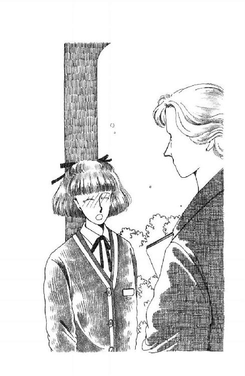
「あたしは？」
あたしだって困る！
「未来はいいわ。学校始まったばかりなんだし、おかあさまは、パパも忙しかったら来なくていいっておっしゃるぐらいだから、大勢で押し掛けてもねぇ」
い、いいわって言われても......ってことは......。
「な、何日くらいいないの？」
「まぁ、未来ったら。いやだ。なにべそかいてるのよ」
「だって」
グスン。甘え声だしそうになったのに、ママは知らん顔で言い足した。
「パパはいない間のお仕事の手配をしに銀行に行ってるんだけど、お昼には戻ってらっしゃるはずなの。それから急いで行けばお通夜に間に合うわ。本葬は明日になるか明後日になるか、まだわからないんだけれど、そこまではお付き合いして来る。ほんの三日ばかりよ。ひとりで、大丈夫ねっ？」
「............」
ねっ、のままのまっすぐな目で、ママはあたしをにらんでいた。
みっか......ひとりで......家に......。
そんなの初めてよ。そりゃ、そりゃ、十五にもなっておかあさんがいないと何にもできないなんて情けないこと言いたくないけど......御飯のしたくとか、朝起きるのとかは別にいいけど、ひ、ひとり？ あの家に？ 夜中もずっとたったひとりぼっちっていうのは......なんだか、なんだか......。
ふぇぇぇん！ 自信ないよ！
「あ......あたしも行こうかな、ははは」
「この新学期早々お休みして？」
わぁん？ にらまないでよ。
「ね、未来。こう言っちゃなんだけれども、あちらだってお部屋そうそういくつも余っているわけではないのよ。こんな急な話だし、ほかのひ孫さんたちもみんな来ないと思うの。もちろん、長野の近くのひとは別だけれど。そんなにお別れがいいたいんだったら、夏休みにでもうかがえばいいわ。そうだ、あなたのお小遣いからお香典もらっておくから、安心して」
「............」
とても声に出して言えることじゃないけれど、おばあちゃんのこと考えて言ってるわけじゃないんだよね、あたし。そのくらいママだってわかってそうなものなのに......お香典まで取りあげようだなんて......うっうっ。
ああ、おばあちゃま恨むわ！ なんでこんな時にお亡くなりになったりするのよ。あと二、三日早かったら、あたしまだ春休みだったのにぃ！
......うっ、いけない。冥土に旅立たれたかたに文句言ったりして、万一化けて、化けて出られたりしたら......あわわわわわわ。やだよ、やだってば、そういうの！
「ねぇ、未来、考えてみて。これは案外とあなたにとってもいい機会なんじゃあない？」
「いい機会......？？」
「そうよ。あなただって、もうそろそろおとなにならなくちゃ。家の中のことちゃんとひとりでできるようになっておいてくれないと、ママ安心できないわ」
「............」
「わかってくれる？ あのね......あのね、いいわ、正直に言うわ」
ママは両手を頰にあてて、くすくす嬉しそうに囁いた。
「ママね、未来がひとりで大丈夫なくらい大きくなったら、パパとふたりで旅行したいなーってそう思ってたの。なのにあのひとったら、未来のことばっかりなんですもの。たまには新婚気分に戻って、ママだけ大事ぃにしてくれたっていいじゃない？ なのに未来おいてくなんてチャンスなかなかないんだもの。だからママ、ほんとおばあちゃまには悪いけれども、とっさにやったね！ って思っちゃったくらいよ。うふふふ、こんなことでもなきゃ、たとえお葬式のためでも、長野までの電車でもね、パパとふたりだけの旅なんてできないなぁって、きゃ、恥ずかしいわ♡」
さすがに不謹慎はわかってるらしくて、笑っちゃう顔を押さえるようにしている指の下、手首のところに、お着物には今ひとつ似合わないあの時計が、チラッと覗いた。
......ああ。これじゃ、無理だわ。
かわいそうなママ。そんなこと思ってたなんて、ちっとも知らなかった。
そうよ。パパあたしのことかまってくれすぎるのよ。愛して、奥さんにしたのはママなはずなのに。
「......わかったわ......」
「ごめんねぇ、未来ちゃん」
顔が笑ってるってば。
「なんとかする。でも、もしかしたら、うららに泊まりに来てもらってもいい？」
「いーわよ、いーわよ。そうね！ うららちゃんが来てくれてたらママも安心だわ!! ふたりならお夕飯、てんやもの取ってもいいしね」
そんなに心配してるようにも見えなかったけどね。
「もう行くわ」
「じゃあ、これ、鍵」
ウッ。そ、そうか。ママがいない家に帰るのには、鍵がいるんだ......！
え？ じゃ、なに？
「ちょ、ちょっと待ってよ。ママたちこのまま行っちゃうの？ あたしが学校から帰るのも待たないで？」
「だって、急いでるんですもの」
ママは晴々とした顔で肩をすくめた。
「あなたが早くてパパが遅ければ別だけど、まあこっちのほうが早いんじゃないかしら？ じゃ、火のもとには気をつけてちょうだいよ。信じてますからね」
ママぁ......うわぁん！
あっさり手を振ってパタパタ歩いてくママの羽織の背中のウキウキに、あたし、思わず涙がにじんで来た。
幼稚園の頃みたい。あたし、よく恐怖のどん底に突き落とされたものだわ。叱られた後、ママがお買物とかに行く時......そのまま二度と帰ってきてくれないような気がして......あたしのおバカに呆れて出てっちゃって、もう二度と戻ってはきてくれないような気がして、三番町のマンションのベランダにしがみついて、ママーママーって絶叫したものだった......涙もよだれも鼻水も全開にして号泣したものだった。
あれは、それほど遠いできごとじゃあないのかもしれない。
わんわん大声で泣けない程度の理性はあるのに、気分はきっぱり、捨てられた子のそれだった。あたしはよろよろ頼りない足で、なんとか階段をのぼりはじめた。
５ ロンリー・ナイト
「ただいま」
小さくつぶやいてみたけれど、もちろん、返事はなかった。
もちろんよ。今、あたしが鍵開けて入ったんだもの。ママがいる時、ウチには鍵なんてかかってるはずがない。
でもどんなに『もちろん』だって、やっぱりガッカリしちゃうってことだってあるじゃない。今出した声の余韻もたちまちおし潰すように広がっていく、この沈黙。やっぱり、ほんとうにほんとうに出掛けてしまったんだ、ってトドメを刺されたような感じ。
ふう。重たい......でも、あんまり考えるのよそう。とにかく、こんなとこでひっかかっていたんじゃ三日なんてもちやしないわ。元気、元気！
でもさぁ。なんだか。あはは。変なんだよね。まるで、知らない家みたいなのよ。何ひとつ変わってないに決まってるのに、この違和感。ひとがいない家って、なんでこんなに不気味なんだろうか。自分の家だっていうのに。
ああ、ママって太陽なんだわ。ママのオーラってきっと黄金色なのだわ。それが満ち満ちていないから、なにもかも色あせて見えるのだわ。
あん、もう！ おバカッ！ 考えないって決めたじゃないっ！ 悪いクセよ、自分でどんどんどんどん暗いほうへ悪いほうへ考えちゃって、だからどんどん余計に暗く悪くなっちゃうっていう、不愉快の加速度。
靴を脱ぐのももどかしく框に上がって、やけに冷たい廊下を二、三歩歩きだしたら、何かチヤリン、と落ちた。鍵だ。ハッとしてドアを振り返る。そうだ。鍵かけておかなきゃ。忘れて眠っちゃったりしたら大変だし、第一、そうよ。どうせ、今日はもう誰も帰って来ないんだもの。
誰も......（どんより）。
だから、強くならなきゃ。ほんとにほんとに気をつけなきゃいけないのよ。ついウッカリなんてことがないように、ママたちが帰ってくるまではあたしがこの家を守るのよっ！
か・ちゃっ。
「........................」
わ～ん、わ～ん、わ～～ん！
やだ。やだ、この緊張。なんとかして。
そうだ。そうだ、窓とかもしっかり戸締まりしておこう。もしも、もしも、もしかして、ママが一カ所でも鍵かけ忘れたまま行っちゃってたりしたら、怖い。
鞄なんか放りだしちゃって、ドタドタ家中走りまわって窓の施錠を確認してたら。
「きゃ──っ、きゃ───っ、きゃ────っ!!」
居間から庭に出る掃き出し窓の向こうから、黒いものが凄い勢いで走って来る！ あたしは庭に背を向けて必死で逃げようとしたんだけど、腰が抜けちゃってて、あわあわ絨毯に膝を擦ってしまうばかり。わぁん。なんでこんな、なんでこんな日の高いうちから。そ、そ、そんな黒い影なんてものが出たりするのよっ、しかもこんなタイミングよく、今日に限って!?
動転の中にも疑問が湧き起こって、つい怖いもの見たさで目を開けると。
あら。
ドッとがっくり来てしまったわ。そうよ。そうに決まってるじゃない。羅士丸よ。
「なによ。おどかさないでよ」
せっかく閉めたばかりの窓を開けると、羅士丸は、今朝のリボンをつけたままの顔を、なんとも奇妙な感激でいっぱいにして、まるで子犬に戻ったみたいにあたしの手にハァハァ鼻づらすりよせて甘えるのよ。なんだかおかしい。
「......そうか......！」
おまえ、見たのね。ママとパパが旅行のしたくして、あわてて出ていくところ。それで、昨日まで毎日のように家にいたあたしまで見えなかったわけだから。おいてけぼりにされたんだと思って。マサカと思いつつ、ひょっとしたら、捨てられたんじゃないかと思って、心細くなって......。
うわぁん！ じゃあ、あたしと同じじゃないのよ！
「キュ───ン」
じっと見ると、真っ黒でキラキラの羅士丸の瞳が、こころなしか潤んでいるんだもの。
「わぁん、ごめんね、ごめんね、よしよしよしよしよしよしよし!!」
悪かった。あまりのショックで忘れてたけど、あたしまで行ってしまっていたら、おまえ、ほんとにほんとにかわいそうだったんだわ。ああ。あたしたち、ひとりぼっちじゃない。ちゃんと、ふたりぼっちよ！
ひしっと抱き締めると、羅士丸の犬臭い息が温かかった。
まったく......うららったら冷たいんだもん。なんだったのよって聞くから、これこれこういうわけだって言ったら、『んまー、じゃあ、それはぜひあんたひとりでがんばるべきよ』だなんて......グスッ......こっちが泊まりにきてよねっと言うより早く......。そんなこと言われちゃったら、もうとても言い出せないじゃないのよッ！
「アォ───ウゥゥゥ」
あたしの気分がわかったのか、羅士丸もいっしょに泣き出した。
ヨシヨシ。泣かないで。泣かないで。とりあえず良かったじゃない、お互いに。
あ。そうだ！
「そうだわ。洗ったげるから、おまえ、家の中で寝なさい。でも、今回だけ特別よ。ちゃんとおとなしくするのよっ」
「アウ？」
緊張が解けて、幸せそうにだらだらよだれを流してた羅士丸は、怪訝そうに首を傾けた。あたしがお風呂場からバケツに残り湯を汲んでお雑巾を入れて持って来たのを見ると、たちまちサッとさめて背中を向こうとした。
「お手！」
んな後ろからいやそうに出すことないでしょ。きれいにしてあげようってだけなんだからね、この恩知らず。
「はい、この手は中について。もう一本」
「グプー」
四本とも拭って居間の中に押しあげても、羅士丸は硬直してる。家の中に入るとひどくぶたれること、よくわかってるんだわ。だから、窓をしめて鍵かける間も、押さえておく必要はなかった。
「今日はいいの。でも、まずお風呂に直行よ」
首輪をつかんで廊下に引きずりだすと、羅士丸の足取りはますます重くなった。木の床にツメがあたるゴリゴリいう音がしたけど、この際かまっちゃいられないわ。お風呂場の前に来た時には、ほとんど梃でも動かないって感じだったけど。
「はいって」
きっちり指さして命令すると、首と尻尾をうなだれたまま、ツルツル滑るタイルの洗い場に入りこんで、ぶるぶるっと震えてみせた。あたしは黙って、お風呂場の引き戸を閉めた。
羅士丸にとってもひどく受難の日だったのだと思う。でも、これで最後よ。
脱水機にかけた毛布みたいな匂いになった体を居間の隅にバスタオル三枚重ねて座らせると、羅士丸は心底脱力したようにぺたんとへばった。こっちだって疲れたわ。お風呂場まで掃除しなきゃならなくなっちゃったし。
まぁいいや。今日はシャワーにしよう。その時、ついでにお掃除しちゃえばいいわ。
「そのまま動かないでね。絨毯濡らしたら怒るわよ」
あたしは放り出しておいた鞄を拾い、二階で着替えた。羅士丸の横のテーブルで予習をすることにしよう。教科書持って、ノートと鉛筆を揃え、ついでにお台所によってクッキーの缶を選びながら、思わずため息をついてしまった。
自分の部屋じゃないところで勉強するなんて、たぶん小学生以来だ。ひょっとするとあたしって、ひとりでいるととめどもなくだらしなくなる性格なんじゃないかしら。
ふと、見ると、冷蔵庫のドアに、メモが貼ってあった。
『ママです。いってきます。
ハンバーグや、スパゲティのトマトソースが冷凍庫に入ってます。御飯の残りも少しはあるから、急ぐ時は電子レンジでチンしてください。野菜かごのアボカドとパパイヤは朝御飯の時にでも食べてね。もしもお金がいる時は、ママのライティングデスクの平らなひきだしの中に入ってます。夜、電話してみます。それじゃ、がんばって♡』
じわん、と涙がにじんだわ。
メモがあって嬉しいって気持ちと、ああほんとにひとりでいろいろやらなきゃいけないんだ、って気持ちと両方で。
あたしお金のことなんて考えてなかったけど、もしかして集金のひととか来ちゃったりしたら、払わなきゃいけないんだもんな。ああ。もしも、もしもよ。押し売りさんとかセールスマンさんとか、わけのわかんない宗教の勧誘のひととか来たらどうしよう？ そうだ。とにかく、何があっても絶対にドアを開けなければいいのよっ！
断然決意して居間にもどると、羅士丸はさっきの姿勢のままで目だけこっちにギロッと動かして恨めしそうな顔してみせた。
「ごめんね。もう少し乾いたら、動いてもいいからね」
クッキーの缶あけて、一、二個食べさせようとしたとたん。
ふっ、と羅士丸の顔つきが変わったと思ったら。
ピンポーン！
「きゃっ」
思わず抱きついたら、腕が湿ってしまったわ。
だ、誰か来た！ 誰か来たんだわ。あたしが決心するやいなや。
ピンポーン！
また鳴ってる。思わず羅士丸と顔を見合わせてしまったけれど、さすがに羅士丸は知恵は貸してくれない。
ピンポーン！
「浅葉さーん！」
女のひとの声だ。いいわ。とにかく、誰が何の用なのか聞いてみよう。
「はい！」
返事しながら玄関に向かうと。
「良かった。いらしたのね。回覧板ですよー」
か、回覧板......ほんとかしら？？
とっさに疑ってしまった。
だって何と言ったって、回覧板っていうのが一番『ありそうな』噓じゃない？ 回覧板じゃ、いりませんって言うわけにはいかないし、受け取るためにドア開けなきゃいけないし......ああ、どうしよう？ そうだ。こんな時のために、覗き窓があるんじゃない！
「もしもしー、浅葉さーん!? どうしたんですかー」
「はい、すみません、ちょっと待ってください」
あわててママのサンダルひっかけて下りて、あたしはドアの真ん中の小さなレンズに目をくっつけた。こんなの覗こうと思ったの、はじめてだわ。ぎゅわっ、と変になった視界の中に、イライラしたように首を振ってる眼鏡で断髪のお隣のおばさんらしいひとが見えた。
なーんだ。ほんとだったんだ。
「今開けます......どうもすみません」
鍵を外してドアを開けると、山田さんのおばさんは、どうしたのよ？ って好奇心まるだしの顔で回覧板を差し出した。
「はい、これ」
『強力ゴキブリ駆除薬地域一括予約申しこみ書』
「あー......あのう、うちはいらないと思います」
押し売り撃退！ の心境だったから、つい、反射的に言ってしまった。だって、ゴキブリさんなんて出たの見たことないもの。
「でもねぇ」
おばさんはムッとした。
「そういうわけにいかないのよ。みんなで一斉にしないとね、こういうのは。だからとにかく、おかあさんに見せて頂戴」
「はぁ......」
おばさんが、あたしの肩ごしに家の中にササッと眼光を飛ばしたような気がした。
「おかあさま、おでかけなの？」
なっ、なんでわかったの!?
一瞬、主婦の勘の鋭さにギクッとしてしまったけれども、思えばあたしがこんな夕方から鍵かけてひとりでお留守番しているらしいってことだけで、充分わかるわよね。
「はぁちょっと......田舎で法事がありまして。しばらく。ですから、これ、急ぐんでしたら、よそを先に回していただけないでしょうか」
「いつお帰りになるの？」
返そうとした回覧板になおざりに手を伸ばしながら、おばさんはもう一度軽く背伸びするようにして、廊下を隔てて開けっぱなしにしておいた居間を覗きこんだ。さっきより、大胆だった。
これには少しばかり、失礼じゃないかって気がしたわ。
「ちょっとまだわからないです」
何もかも正直に言ったりするの、嫌だったんだもの。
でも、この言い方は、主婦生活十数年のベテランさんの前ではあまりに修行の足りないことだったらしい。
「あらそう。大変ね。じゃあ、火のもとなんかによく気をつけてちょうだいね」
それまではグズグズ受け取らなかった回覧板をあたしの手からひったくるようにして取ると、おばさんは、足で押さえていたドアを一回放し、それからまた、ガンとほとんど蹴ったような音をたてて押さえた。
「変なひとが来たら、大声出すのよ。すーぐ飛んできますからね」
「どうも」
この勢いで足を放されても、バン！ と閉まらないように、と思わずノブに手を伸ばしたのに。
「ちょっと待って。ねぇ。あなた......みきちゃんだったかしら」
「みくですが」
な、なんなの？
「みくちゃん。あなた、どのくらいの声出せる？ ちょっと一回練習しておいたほうがいいわね。さっ、やってみましょう」
......う......うそっ!!
あんぐり口をあけたのに、どうも冗談じゃなかったらしい。おばさんは、ああもう、と顔をしかめた。
「いい？ なんかあったら悲鳴あげようと思っていたってね、人間、そうそう大声出せるもんじゃないの。でも、いっぺんでもちゃんとした声を出してみたことがあれば、出せます。声が出せるってわかってれば、あなただって落ち着けるでしょ。さっ、練習するのよ。いい、まずこう息を整えて......」
思い出した......お、思い出した！
このおばさんってば、葉山少年少女合唱団の団長さんをなさってらっしゃるかたなんだ。
時々、お休みの日なんかいい天気で窓を開けてみると、ピアノの音と『アアアアア』の声がどこからともなく聞こえてきたりすることがあった。けっしてお下手じゃないんだけれど、なにしろ音階をたどって何度も何度も上がったり下がったりする。もう終わるか、もうおしまいかと思っていると、突然『ラララ』にかわってみたり、短調に変わってみたりして、ほとんど発狂しそうなほど長いこと続くのよ。いっそ、多少お下手でもちゃんとした曲、普通のメロディを歌っていただけたほうが耳に優しいと思う。パパなんか怒り狂って、ある日『こうなったらカラオケ・セットを買って来て対抗してやる！』って怒鳴ったりなさって、ママにあわててとめられたりしてたなぁ。
その後、幼稚園や小学校低学年の子供たちを集めてお歌のお教室を開いてらっしゃるかたであるってことがわかった。市民ホールとか横浜のデパートの屋上とか氷川丸の前とかいろんなところで合唱をご披露なさって、以前にはオーストリアだかどこだかに海外遠征までなさって新聞にも出た有名人。ほとんど名誉町民のようなかたとなってるぐらいで、どうも、あの声を止めさせるのは無理らしい。子供たちを集めるのがお家じゃなかっただけでも運が良かったと思わなきゃ、って話になったんだけど......このおばさんだったのか！ どうりで、やけにパキパキした命令っぽい口をきくひとなのも、まったく無理ないのだった。
団長さんはたちまち、顎をひいて背筋を伸ばして、両足をがっしりと構えた。
「この姿勢で......お腹の底から、頭のてっぺんに響かせるように......はい、どうぞ」
えーっ！
「こ......こうですか」
「もうちょっとしっかり立って。そうそう、そんな感じだけど......はっ！」
「ぁぐっ!!」
「ほら、ダメダメッ。腹筋に全然力がこもってないっ」
だからって......だからっていきなりお腹殴るなんて......ひど......痛たたた......。
「こう立ったら。はい。ちょっと声、出してごらんなさい」
ごらんなさいって言われたって......こんなお腹殴られたばっかで......。
「出してっ!!」
わぁん！
「あ──......」
「ダメダメダメダメダメッ!!」
おばさんは即座に両手をびしっ、と振った。
「あなたそれで本気なの？ もういっぺん」
「あぁあ～～あ～～～」
うわぁん。チラチラ見ると、おばさんすっかり本気になっちゃって、鬼コーチの目になっちゃってにらんでるんだものぉ！
「迷いがあるわね」
そりゃそうだって。
「あなた合唱したことないの？ 学校で、少しくらいは歌ったんでしょう？ ああ、でもわかってる。学校の音楽の時間なんてないほうがマシよ。教師どもは、全然創造性がないし。子供の個性と才能をひとりひとり摑むだけの時間も頭もないし。所詮、一般の学科と同列に並べて評価しようとするほうがおかしい」
......華雅の合唱はけっこう有名だったりするんだけどな......。
「だからこそ、私は提唱しているのですよ。すべての子供は歌うべきだと」
演説が始まっちゃったよ。
「子供の頃、まだ声も考えかたも素直なうちに、ほんとうにその子にあった歌を歌わせることが、どんなにその後の人生に役立つか。きちんと声を出しきれいに歌う訓練をすることは、心肺機能の向上、姿勢の矯正、協同作業に対する責任感をも養ってくれる。みんなと力を合わせてなにごとかをなし遂げた時の素晴らしい達成感。それぞれが必要な楽章で必要なパートを歌い、人間の喉という自然の作りたもうた楽器が美しい和声を生み交響曲を完成させる時、私達は感動せずにいられるかしら!? ねっ!? ねっ!?」
「......はぁ」
このおしゃべりしててもビンビン響く声には、あっけにとられずにいられないわ。それを、肯定と受け取ったのか、おばさん、にこにこと幸福そうに顔を輝かせた。
「だから、歌いなさい。あなたの青春を、その若さを高らかに歌いなさい。何をためらうことがあるの？ いい、見てなさい。肺の空気を、全部声にするのよ。こんな感じに......」
すうっと息を吸って、両腕をオペラ歌手のように構え、両胸をハトのように広げると、おばさんは太いアルトで歌った。
「 ドミソミド、ア──────────────────～～～～～～～～～!!!!!!」
ドミソミド、ア──────────────────～～～～～～～～～!!!!!!」
止める間なんてなかった。
どぴゅーん！ と、風を切る気配が見えたような気がした時、無言のまま全力で走って来た羅士丸が何かにぶつかるビシャッって重たい音がして、冷たい飛沫が飛び散った。思わずしゃがんで身構えていたあたしは目を覆ってしまっていた。だから、べしょっと濡れた羅士丸の図体の下で、すっぽ抜けた下駄の跡が残ってタビックス（註13）みたいになった分厚い靴下の足がバタバタしているのが見えたのは、一瞬遅れてからだった。
「ひ────っ!!」
声はそのさらに後から聞こえた。
「なんなのっ、なんっ、冷たいっ、これ、ひ───っ！ ごほごほごほごほ......」
「羅士丸！ ラッシー、こらっ、離れなさい！ お座り！ お座りッッ!!」
羅士丸は離れた。しゃがんでるあたしの横にサッと来て、低く唸りながらも一応きちんと座ってみせた。合唱おばさんはバッタリ仰向けになったまま立ち上がって来なかった。だからあたし、あわてて助けおこしに行ったのよ。
「すみません......ほんとうに、ごめんなさい。お怪我は？」
「......あ？ ......」
おばさんの朦朧とした目があたしを見て、へらっ、と笑った。唇が真紫になってあわあわ震えてらっしゃる。でも、実際のところ、お怪我はしてらっしゃらないみたい。『アー』の途中で逃げようとなさって半分ドアの陰になっていたから、あのもの凄い音の衝撃をそのまま受け止められたわけではないようだ。ただ、グレイのブラウスの前がじっとり湿って、レースっぽい下着のラインが透けて見えてしまっているから、じろじろ見られなかった。
良かった。おバカだおバカだと思っていたけど、羅士丸感心にもこのとっさの興奮状態に、嚙みついたりはしなかったんだ。
「今の......何......？」
と、おばさんが言った。
「犬です。うちのダルメシアンが。すみません、ちょうどからだ洗ってやったすぐ後だったので濡れてたんです。よく叱っておきますから」
でも羅士丸じゃなくたって、びっくりするわよ！ あの声。衝撃で、玄関に掛かったドガの踊り子さん風の絵のガラスまで、ビリビリ割れそうだったもの。羅士丸はてっきり、あたしが何かとんでもない目にあってるのだと誤解して──誤解でもないとさえ言えるかもしれないけれど──助けに来てくれたんだ。
叱ったりするもんですか。後で美味しいゴハン食べさせてあげようっと！
「犬」
おばさんはまだ放心したみたいな顔で、ぺったり座りこんでる。すっ飛んだ下駄片方は、なんと下駄箱のま上にこっち向きに置いたようにみごとに着地していて、まるで、明日は晴れ、とってもいい天気ですよ！ って言ってるみたいだった。あたしは唇をキュッと嚙んでうつむいて、笑うのを堪えた。
「......どうぞ」
「犬」
肩を貸して下駄をお履かせ申し上げても、おばさんはまだぼんやりつぶやいていた。そおっとあっち向きにさせると、首をひねりながらも、歩こうとしてくれるみたいだったから、良かったけど。
「あ、お忘れです」
回覧板。こっちは、どういうはずみか外に飛んで植え込みの金雀枝の途中にひっかかっていたのを取って、しっかり握らせる。
「犬......ね、じゃあつまり......」
しまった。へたに正気づかれてなんだかんだ文句言われちゃうと困るわ。
「そうなんです。犬もいますから。たぶん、あたしの貧弱な声でも大丈夫だと思います。どうぞご安心くださいませ。ほんとに、ごめんなさい。どうもすみませんでした。さようなら」
何か言いかけたおばさんをパッと放して、サッとドアをしめた。
......ふう。
背中ドアにつけたまま、ずるずる滑り落ちそうになるあたしを、きっちりお座りしたままの羅士丸が『ちょっとまずかったかなぁ？』ってご機嫌伺い顔で見上げていた。
くすくす。いいの。いいのよ。たすかった。
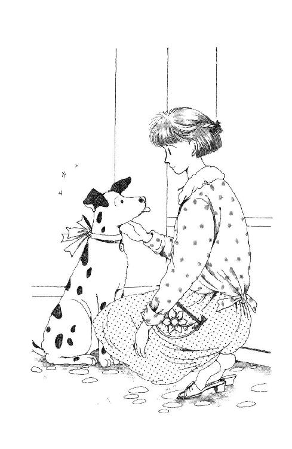
まだいると大変だから、口のかたちだけで言って、あたしは羅士丸に擦り寄って撫でてやった。半分寝てる耳をもちあげて、囁く。
「あんたは怪我しなかった？」
「キュ───ン」
「良かった。サンキュ。あんたはほんとに、たよりになるわ」
「ククククルルル」
得意と甘えが混じった声で鼻を鳴らした羅士丸だけど。
「......でもあんた、そのままじゃ上に上がれないわね」
濡れてるまま、ドアに激突したからか、毛並みのところどころがザリザリ砂っぽくなってる。こんなとこにお座りさせちゃったあたしも悪いけど、足の裏なんかきっぱりダメね。
「気の毒だけど。もう一回、シャワーね」
羅士丸にことばが使えたら、きっとあれこれ愚痴をこぼしただろう。あたしを助けようとしただけなのに、またまた大っ嫌いなシャンプーを擦りつけられて、タオルの上にじっとしてなきゃならない時間が増えてしまったんだから。
だから、ハンバーグふたつ温めて（註14）、ひとつはまるごとあげちゃった。へたに味を覚えさせちゃうとマズイから、ごはんの上に乗せて野菜とかも乗せてお味噌汁かけて出したんだけど、それでもやっぱり物凄く美味しかったみたい。普段の十倍くらいの早さで食べ終わっちゃって、あたしはひとり、自分の残りをぼそぼそ食べなきゃならなかった。明日はもう少し粗食させよう。
ひとりでごはん食べるって、とっても変だ。落ち着かない。目も手もただ食べてるだけじゃヒマすぎるみたいで、思わずお箸を使う速度がどんどん速くなる。当然、ゆっくり嚙んで味わってられないでしょ？ お肉もごはんも大きい塊を搔きこんで、お茶で流しこむようにして、丸飲みするように平らげちゃう。だからちっとも美味しくないのよ。お味噌汁とかはあたしの味つけがいい加減だったってこともあるかもしれないけど、ハンバーグはママが作っておいてくれたのをそのままレンジで温めただけなんだから、作りたての時とは違うといっても、そんなに不味いはずがないのに。
これで羅士丸までいなかったら、どうなってたんだろう。テレビつけるか、新聞でも読みながら、ついでみたいに食べるしかないんじゃないかしら。
時計を見ると、もうすぐ七時だ。ごはんのしたくに、思いのほか手間どっちゃったらしい。居間から見えるお庭もすっかり暗くなっていて、レースのカーテンの上にもう一枚厚いほうもしなきゃいけないな。
......そう。あたし、やっぱり寂しくて、お皿もお茶碗もお盆にのせて居間まで持って来て、こっちで食べちゃったりしてたんだ。
ヨイショ、ってつい言っちゃう気分で立ち上がってそばを通ると、空のボウルを抱き締めるようにしてぼうっと陶酔してた羅士丸が、ふっ、と顔をあげた。ようやく乾いたらしく、シャンプーの香りがする。
「それ、持ってきてくれる？」
満足した羅士丸はさっきの恨みも忘れてくれたらしい。すぐにボウルをくわえて、台所までちょこちょこついて来てくれた。溜めとくとイヤになっちゃうだろうから、早いとこ洗っちゃおう。この子がお皿もふいてくれればいいんだけど......無理か。
なんだか何もする気になれない。早く寝ちゃって、勉強は朝明るくなってからにしよう、なんて自分に言い訳をしたんだけど。さすがに眠くもない。だから、あたしはテレビを見た。
いつも見ようと思わない時間だから、あんまり好きなのもやってなかった。下品でワザとらしい笑い声が響くような番組ばかりでなんだかいっそう気が滅入る感じがしたけど、ついついぼうっと見てしまった。ソファに陣取って、羅士丸の頭を膝に乗せてからかいながら何時間も過ごしたような気がしたけど、すっかり疲れてやっぱり消そうって立ち上がった時にも、まだあんまり時間がたってなかった。
こち、こち、こち、こち。
飾り棚の上の時計、普段はなんとも思っていないのに、テレビを消してみるとなんだかやけに気になる。すごく音が大きい。
敏感になった耳に、あたりの木々を揺らす風の音も、ひぃひぃ何かの悲鳴みたいに聞こえてくる。耳をすませたくないのに、いっぺん気になったら、もう離れていかない。
やだな。やだな。ただの風だけど。なんでもない、ただの風だけど......全く何の音もしなかったらそれもきっとやだとは思うけど......でも......。
ゴオオオオオ!!
「きゃあっ!!」
不意に大きな風が吹いて、あたしはハシッと羅士丸にしがみついてしまった。羅士丸は一瞬ビクッとして、すぐに、なんでもないじゃないですか、って言うみたいな顔をあたしの鼻のあたりにこすりつけながら、けんめいに尻尾ふってみせてくれたんだけど。
タン・タン・タン・タン・タン。どこか遠くで、何か打ちつけるような音がする。ブロォォォォ、車が通る。さわさわさわさわさわ、あれはまた風？
絨毯に羅士丸を抱き伏せたまま、あたしは息を殺してあたりをうかがってしまう。こち、こち、こち、こち。時計。ザザザザザ、ひゅう、風。タン・タン・タン・タン......。
あのさ。
こういう時、絶対思い出しちゃいけないって思うこと、すごーくはっきり思い出してしまったりしない？ 私、思い出しちゃったのよね。
今日って、ひとが、死んだ日、なんだ、よ、ね......。
あははははははは、あははは。でもさー、そんなこと言ったって。ねぇ。毎日日本中でどなたかはお亡くなりになってらっしゃるわけで。その分またたくさんのかたもお生まれになってるわけで。そんなこと言ってたら毎日が命日だしぃ、毎日誕生日だもんねぇ。
......でも......。
昼間さ、あたしさ、なんか、とぉってもいけない子だったよね。不謹慎だったよね。ひいおばあちゃんだって死にたくて死んじゃったわけじゃないのに、なんでこんな時にって、まるで『迷惑だ』みたいに思っちゃったりしたし。ママも不謹慎だったよね。こんな悲しい日に、パパとふたりでお出掛けだ、わぁいとかってことなんか言っちゃったりなんかして......ば......化けて出ないよね？ そんなことしないよね、おばあちゃん......!?
ひょおおおおおお。
ううう。鳥肌立っちゃった。腰が動かない。
ら、羅士丸、羅士丸、あんたがんばってよ。お犬さまお猫さまは人間よりはずっと霊感が効くっていうじゃない、あんた、何かその、その......お化けさま、の、類のかたがおいでになったら、ちゃんと、ちゃんと追い払ってね？
羅士丸の背中はシャンプーの匂いがして、トクントクン脈打っている。黙って目を閉じて、なるべく耳に入ってくるもののこと考えないようにしていたら、少しは落ち着いてきた。
おばあちゃん、ごめんなさい。追い払って、なんて言って。あたしは悪い子です。でも、おばあちゃんのこと、嫌いだったわけじゃないんです。ただ、どんなふうに振る舞ったらいいのかわからなくて、だから、つい無視しちゃってたんです。わかってくれますよね。こんなちっちゃなことで、恨まないですよね？ だからおばあちゃんもあたしのこと無視してくれれば、ちょうどアイコじゃないかな？ たとえお化けさまになっちゃったとしたって、こんな臆病な親戚の子のところまで、ご挨拶に来てくださらなくて結構ですから、どうか、どうか、どうかそのまま、安らかに眠ってください......。
知らないうちに手を組んでる。
ああ。いっつも、いっっっっつも、こういう時になってやっと思い出すんだけど、あたしほんとに不信心だ。ずっとミサにも告解にも行ってないって......よくないわよねー。でも、おばあちゃんクリスチャンじゃないと思うし、となれば教会関係の不備をここで反省してもあんまり関係ないかな。やはり日本古来の仏さまのほうがおばあちゃん向きよね。
ええい、とにかく祈っちゃおう。イエスさま、マリアさま、仏さまに、あたしの守護天使ミカエルさま。天におわします気高きお歴々のみなみなさまがた、どうか、どうか、おばあちゃんをお守りください、そして、そして、このあたしのことも、ほんと厚かましくて申し訳ないんですけれども今日のところはどうかひとつよろしく、ぜひともしっかり守ってやってくださいませぇぇ。
............。
ふと見ると、目の前の羅士丸は、気持ちよさそうに目蓋なんか閉じちゃって、どうもウトウトしてるみたい。
いいわね。悩みがなくて。ったく能天気な犬っ！ ......でも。ってことは。あ、そうか！ 霊感強い犬が平気ってことは、大丈夫ってことよ！ うん、そうよっ！
いやっほーい、あたしもお気楽になろう！ そ、そうだわ、こ、こうしてひとりであーだこーだ考えててもどうせしようがないんだわ。もう祈ったんだし、ここはなんとか建設的な方向に持っていこう。
何かしよう。そうよ、気を紛らわせてたほうがいい。
「ほ、ほ、本でも読もうか」
無理やりにっこり立ち上がってみると、羅士丸にワニみたいにぱっかり口をあけてあくびをされてしまった。ひどいわ。でも、この子はいつもは、あたりが暗くなるとすぐ寝ちゃうのかもしれないもんな。
ふわぁぁ。眠くないって思ったばかりなのに、あくび伝染っちゃったよ。
お部屋に上がろうかな。そうだな。いつもなら、あたし自分の部屋にいる時間だ。そのほうが落ち着くかもしれない。
「おいで」
耳の後ろを搔いてやって、せきたてたとたん。
電話が鳴った。
一瞬飛び上がっちゃったけど、浮かんだ瞬間に気づいたの。
「......マ、ママだ！」
良かったあ！ やっとかけてきてくれたんだ。
思わずダッと全力で走ると、羅士丸もたちまち飛び上がってついてきた。
「もしもしぃっ！」
「ああ。元気そうだね。良かった」
......ちぇーっ。なんだぁ。
しゅん、と膝が折れてしまった。朱海さんかぁ。
あれっ。
「朱海さん？ どうして朱海さんが？」
「うららが今ごろ教えてくれたもんだから」
受話器（註15）を手でかこったような声ね。ああ、そうか。もしかすると、うららに聞いて早速かけてくださるのが照れ臭かったりなさるのかもしれない。
ちょっぴりおかしかった。
「どうしてるかと思って。だいじょうぶ？」
「ええ、だい......ゴホッ、ゴホッ」
じょうぶ。言おうとしたのに。声が喉で詰まってしまったの。
正直言ってあんまり大丈夫じゃない。でも、大丈夫って言わなきゃならない。だから、すぐ、大丈夫って言ってしまおうとする自分のけなげさ偉さに、瞬間まるで酔ったみたいに悲しくなってしまって、そのまま続けると変な声になってしまいそうで。
「..................」
朱海さんも黙った。だめだ。あの鋭い朱海さんに、このままじゃ、ひどく心配かけることになっちゃう！
あたしは息を吸って、両足をさっき合唱おばさんに教わったように軽く開いて、胸を膨らませるようにしてみた。たっぷり吸った分と酸素といっしょに、元気がわいてきた。これなら言えるかもしれない。
「すみません。ちょっとむせました。大丈夫です、ご心配なくっ」
ほら、言えた！
「羅士丸もいるし、もうすぐ寝ちゃいますから。せっかくのひとりきりだから、もう勝手放題やって遊んじゃってるんです。居間でごはんだって食べちゃったし、パパがいたら眉とんがらせそうなテレビも見ちゃったし、明日からはもう学校から帰ってきたらすぐパジャマでゴロゴロしちゃおうかなー、なんて結構楽しみだったりして」
「そうか」
あ、良かった。信じてくれた。
「うらやましいな。ウチなんか大勢だから、誰もいなくなることなんて、まずないからな」
「でしょう、ふっふっふ。いいですよー、ひとりって。あれこれしなさいって言われることもないし。気楽で。もう最高。すっかり伸び伸びしちゃって、きゃほきゃほ言っちゃったりして。ほんとは羅士丸、家にあげちゃいけないんですけど、ふたりしてもうパーティやってるみたいなものですし」
「......らしくん、あげちゃったの？」
あっ。まずかったかな。
「そうなんです。ほんとはいけないんだけど。ほら、ボディガードにね。たまにはいいかなーと思って。けっこう頼りになるってわかったし」
「頼りにって......何かあったの？」
うっ、しまった、しゃべればしゃべるほどボロが出ちゃう！
でもなんか、止められないの。黙ると話が終わっちゃう。またあの時計と風と外の音の中に放りだされちゃう......なんて深く考えていたわけじゃないんだけど。ただ、もう、なんか、ひととおしゃべりできるってことが嬉しくてしようがなくて、ついつい、いらんことまで言ってしまうの。
「いえそんな。何にもありませんよ。あははははは、やだな。ただちょっと、回覧板が来た時にね、羅士丸がちょっと勘違いして相手のかたを威嚇しちゃったりしたんですけど、ちょうどあたし、あんまり嬉しくなくて、わりと早く帰ってほしいなーって思ってるかただったりしたからちょうど良かったんですよね。いやー、けっこうおかしい活劇だったんですよぉ。話しましょうか？」
「......未来ちゃん」
静かに言われて、受話器握ってる手に、いつの間にか汗かいてることに気がついた。
「なんだか変だな」
「えっ、そ、そうですかぁ？？」
「思いすごしならいいんだけど。なんだかやけに早口だし」
そ、そうかしらん？
「未来ちゃん、言いたくないこと隠す時ほど雄弁になるからな。......顔見たいな」
えっ。
心臓がひとつ打った。
朱海さんが来て、くれる......の......？
「でもまずいかな。もう夜だし......誰もいない時行ったりするの、なんだか変だね。あ、もちろんぼくには他意はないよ。まったく他意はないけど、ほら、なんだかそういうのって、親のいない隙を狙ったみたいだから」
今度は朱海さんが早口になったね。
「そうだ。未来ちゃんが来ないか？ 明日の用意してさ、ウチならみんないるから、そんな変な誤解は受けないと思うし」
そんな。そうはいかないわ。
「無理です。だって、あの、長野から電話かかってくるはずだし。お葬式の日程とか......うららからどこまでお聞きおよびかわかりませんけども、そういうのまだ決まってなかったんですね、母たちが出掛ける時に。だもんで」
「そうか。......困ったな」
困ることない。朱海さんが困ることないけど。
困ってくれるひとがいるって嬉しい。心配してくれるの嬉しい。
でも、やっぱり、だから、心配かけちゃいけないんだ。だから、あたしは、ひとりでも大丈夫だって、ちゃんとひとりで証明しなきゃいけないんだ。そう思うと、しゅんと寂しかったけど、うん、がんばろうって気分もむくむくわいてくる感じがした。
「ありがとう......でも、大丈夫です。ほんとに。どうか、ご心配なく」
今度はほんとうに自信を持って、きっぱり言えたと思ったのに。
「ね、うららを連れてけば、いいんじゃない？」
朱海さんのほうも、きっぱり、決心しちゃったみたいな声を出すんだよね。
「それで、すぐ玄関口で失礼するから。そうだ、何か面白そうなビデオを持って行くよ。ひとりでお留守番って、今日だけじゃないんでしょ？ だから、いっぱいヒマ潰しがあったほうがいいじゃない。ね？」
おせっかい。心配しい。
でも、口が笑っちゃう。なんだか涙にじんできちゃう。
「だから、もしもうパジャマ着てたら、上になんかひっかけて待ってて。三十分以内に行く。いいね？」
「......はい」
はい。はい。
結局あたしは嬉しくて、受話器を握りしめて、何度もうなずいてしまっていた。足下でぐるぐる心配そうに回っていた羅士丸に、あご突き出したウンザリしたような顔でじーっと見られて、やっと気がついたんだけど。
「泣いたぁ？」
あたしの顔を見るなり、うららが言った。
いきなりなのよ。
「なっ、バカなっ......!!」
「泣いてたんでしょー、へっへっへ。昼間『ママもいないの』って言った時からミッキー、もうきっぱりメソメソしてたもんなぁ」
「うらら」
朱海さんがにらんだ。
「それなのに、ずっと知らん顔してたのか？」
「知らん顔ぉ？ だぁってさぁ。ガキじゃあるまいし、かあちゃんがいないったらバンザーイって言ったっていい年頃じゃん？」
「あのな、未来ちゃんは」
「言わせてもらうけどね。へたにかばいだてしてたら、この子一生こうだってば。かあちゃんといっしょじゃなきゃ、嫁にもいかんベッドにも入らんっつーんじゃ、朱海くんだって困るでしょうが？ それを、この兄思いの妹ちゃんを、そうやって、責めるわけぇ？」
「......ォ・ォホン！」
「あの、立ち話もなんですから。ちょっと上がってください」
そうなの。ドア開けるなり『泣いたぁ？』だったから、まだみんな玄関に立ったまんまだったの。ドアだって、開けっぱなしよ。
「お茶ぐらい、入れます」
「いや、すぐ帰るから」
朱海さんはドアを放さない。
「また兄貴は」
「はい、これビデオ。いいのほとんどレーザーディスク（註16）で買っちゃってるから、とりあえずだけど。明日またダビングして来るから」
うっ、けっこう重い。こんなにたくさん見てたら朝になっちゃうよ！
「どうもすみません......でも、ほんとに。ちょっとだけでも。どうぞ」
「いや、帰るよ」
「なに遠慮してんのよ、あがろあがろ!!」
うららがサッサと靴脱いで上がって来て、あたしに渡されたビデオの入った紙袋もひょいと受け取ってくれた。ずっとあたしの横で黙って尻尾振ってた羅士丸は、うららの過激な撫で方でヨシヨシヨシって愛撫されると、たちまちヒンヒン鼻声になっちゃって、こい！ って居間に駆け出したうららにすかさずついていってしまった。
パタン、と音がしたなと思ったら、朱海さんがとうとう、ずっと押さえていたドアを閉めてくださったところだった。そこでとっさに鍵をかけないのは、礼儀としてなのか、それとも、朱海さんも鍵のことなんて考えたことないひとなのかな。考えて、あたしはちょっぴり笑っちやった。
「かえって迷惑だったみたいだね」
「いいえ、そんなことないです！ ほんといって、ちょっぴり怖かったし」
「でしょう」
朱海さんはまだタタキのところで、あたしは框の上で、いつもと目の高さが少し違った。しばらく黙ってあたしの顔を見てらした朱海さんは、フッ、と笑った。
「この間は、ごめん」
......あ......。
そんなことも、あったんだ。あたしは思わず右手を押さえた。あの時のひっかき傷が、細い細いカサブタになっていたの、もう全部取れちゃっただろうか。
「あの時はあやまらないって言ったけど、やっぱり、悪かったよ。なんだか、あんな前科の後で、こんな夜に......敷居高くってさ」
「そんな。もう、いいです」
「うん」
それでも朱海さん、上がってこないんだ。
だから、あたし、言ったの。
「もう気にしないでください。あたし、朱海さんが本気であんな暴力ふるうひとじゃないことくらい、ちゃんとわかってますよ。だいたい、あれは全部あたしのおバカな発言のせいなんだし、転ぶ刹那だってちゃんと頭ぶつけないようにかばってくださったでしょう？ そう、あんなの暴力のうちに入りませんよ！」
「......暴力......」
朱海さんの目が半分になった。
「は？」
「には違いないかもしれないが......いやまさかそういう風に受け取られるとは......だからもうあそこはひとつ思い切って......いやいやまさかまさかまさかっっ!!」
？？？
朱海さんはブツブツ言ってたかと思ったらいきなり水をかけられたあとの羅士丸みたいにぶるぶるっと震えて、二秒くらいグッと目を閉じた。でも、パッと開けた時には、もういつもの朗らかな笑顔に変わっていた。
「じゃ、ちょっとだけ。おじゃまします」
「はい！ どうぞどうぞ」
ようやく居間までご案内できたというのに。
「......うらら......」
朱海さんは、またもや居間の入り口で立ち止まってしまったんだ。その目は、さっそくにビデオを仕掛けて羅士丸と並んで画面を調節しているうららに向いていた。なんだかキャアキャア楽しそうなキャンプの場面が映ってる画面にも、向いていた。
「な～にぃ？」
うららが振り向くと、おんなじ姿勢の鏡対称のかっこうで羅士丸も振り返った。うららもぐうぜん、白地に黒のホルスタイン模様のトレーナーかなにか着ていたから、まるで兄弟のようにそっくりなの。あたしは思わず吹き出したんだけど。
「それは、まさか......もしかすると」
朱海さんはニコリともしなかった。
「うん『十三日の金曜日』だよ!!」
元気よくうららが返事した。
......え？ 十三日の......？
「あとね『スキャナーズ』もあるし、『ゾンビ』でしょ、『ナイト・オブ・ザ・リビング・デッド』にぃ『エルム街の悪夢』にぃ、これが『ヒッチャー』こっちが『ザ・フォッグ』。『悪魔のはらわた』に『バタリアン』に『遊星からの物体Ｘ』......」
「やめ、やめ、やめぃ！」
な、なんだかよくわからなかったけど、ぼうっと聞いてるうちに朱海さんの顔が真っ白になってしまったのよ。
う......す、すごい。近くにあったテープ、いくつか手に取って見たんだけど、几帳面にも映画のチラシみたいなのが張ってあるのよ。なんか、ドロドロ不気味に溶けた顔だの、目玉に注射針が刺さりそうなとこだの、べっとり血に濡れたオノだのばかりで......こ、怖そう！
「なんだってそんな悪趣味なもんばっかり持ってきたんだよ！」
朱海さんが駆け寄って、うららの手からビデオ・テープひったくると、がさがさ袋に戻し始めた。
「だってぇ。なんたってひとりで夜中に見る映画はこーゆーのに限るじゃん」
『けっしてひとりでは見ないでください』
その時あたしが手に取ってたのに、ちょうどそう書いてあったんだけど。タイトル読む前に、朱海さんがアッという間に奪って行っちゃった。
「もう少しマシなのはないのか、マシなのは？ 笑えるのとか」
「『十三日』笑えないー？ あ、あったあった、ほら『大アマゾンの半魚人』」
「おまえに任せたのが間違いだった」
ずっしり重くなった袋を下げて、朱海さんはぶるぶる震えた。
「持って帰るぞ！」
「えーっ？ せっかく集めてきたのにぃ」
うららはブーッと膨れたけど、ビデオのリモコン朱海さんに奪われてしまった。映像がパチンと止まる。ふりかえった朱海さんの顔は、きっぱり血の気がひいていた。
「未来ちゃん、ごめん。明日までに、ちゃんとおもしろくて元気が出るの見繕ってダビングして来るから、今日のところは許して」
「はぁ」
「ねーねーあにきー、ちょっと毛色が違うのもちゃんとあるよ。よく見てよ」
「なんだ。あったのか」
「うん。『愛のコリーダ』とか『エマニエル夫人』『桃尻娘 ラブアタック』......」
「帰る」
朱海さんはくるっと背を向けると、すたすた玄関に向かってしまった。
「あの、お茶は」
「帰る」
うららは羅士丸を抱っこしたまま、ふたりの間でマゴマゴしてるあたしを見上げて、下唇を突き出した。
「ねー、ちょっと待ちなよ、朱海くんっ！」
「なんだよっ」
「悪かった。でも、ちょっとふざけただけじゃんかー」
「言い訳なんか聞きたくない。行かないんなら、俺ひとりで帰るぞ。歩いてくるんだな」
「あーにきー」
うららはのそのそ四つん這いのまま、玄関が見えるとこまで出てきた。羅士丸も同じかっこ同じ速さでくっついて来る。
「そうカリカリしなさんなって。あたしが悪いんだから、あたしが帰る。帰って、兄貴好みのまっとうなの見つけてまた戻って来るからさ、ちょっとこの子の相手しててよ」
スニーカーも履いちゃって、ドアも開けちゃって、もうすぐにも出ていこうとしていた朱海さんが、ゆっくりと振り返った。
「だめだ」
「なんで～～」
「こんな夜遅くに、未来ちゃんひとりいる家に俺がいるわけにいかない」
朱海さん『俺』の時の冷たくておっかない顔になっちゃってる。このお顔を見ちゃうと、あたしなんかもう、何も言えなくなっちゃうっていうのに。
「なんで～～？ バッカじゃない～？」
さすが妹、うららいささかも動じずにどっかりあぐらをかいた。そばで羅士丸が、あわててぺたんとお座りをした。まるで、ガキ大将の真似っこする小さな子みたい。
「何が悪いの。ミッキーおっかながってるってことがわかってんのに、ほったらかしてひとりっきりにしとくほうがよっぽど悪いじゃないの」
......ってこの子に言えた義理なんだか。
「意識しすぎだって。何も気にすることないでしょうが。やましいことしなきゃいいでしょうが。だいたい、誰が責めるっつーの。ここんちのおじさんもおばさんも、朱海くんのことよく知ってるんだよ。ミッキーがひとりでかわいそうだから、ちょっとの間いっしょに留守番してあげるんでしょ。感謝こそすれ、なんで責めるっつーの」
「アォ、アォ、アォーン!!」
羅士丸までいっしょになって吠えた。
「だいたい、ほんのちょっとだってば。すぐ帰ってくるってば」
朱海さんは黙ってうららを見て、羅士丸を見て、それから、あたしを見た。
あたし、急いで言った。
「あの。あたし、もう大丈夫です。どうか、けんかしないでください」
ふうっ、と朱海さんは息を吐いた。
「何を持ってくるつもりだ」
「えっとー、だからスピルバーグかなんか」
「ビデオになってない」
「ンじゃテレビから録画したヤツでさ、そういうノリの。ちゃんと探してくるよ」
うららが立ち上がると、羅士丸も得意そうに頭をもたげたままついてきた。でも、うららがひょいっ、と軽く玄関の自分の靴の上に下り立った時には、つられて片足宙に伸ばしたところでハッとしたように動作を止めた。頭の中をシャンプーの泡が通っていったのに違いない。
「バイクの鍵貸して」
「ああ。......おい待てっ！ おまえまだ免許」
「だ～じょぶだ～じょぶ」
うららは朱海さんの肩をポンポン叩いた。
「んーな重いもん歩いて持ってくのやだって。こんな時間パトカーいないよ。朱海くん、あんま苦労性だとハゲるよぉ」
ぼうっとしてる朱海さんのシャツの胸ポケットから、鍵を取ると、うららは、ほんじゃ、とあたしと羅士丸に投げキッスをして、出て行った。すぐに、バルンバルン、エンジンかける音が轟いた。
「うらら、乗れるんですかー？」
「ああ......ウチの山で練習したからね。まともな道走る分には心配ないが」
バイクが急発進して遠ざかる音がしたとたん、朱海さんは、ドサッと框に座りこんだ。
「なんかあいつに、いいように乗せられたような気がするな」
たちまち羅士丸は現金にもすうっとさめた顔になって、とっととどこかに行ってしまう。うららのことは好きでも、朱海さんのことは、あんまり良く思ってないのよね。
「そんなとこ座ってないで、あがってください」
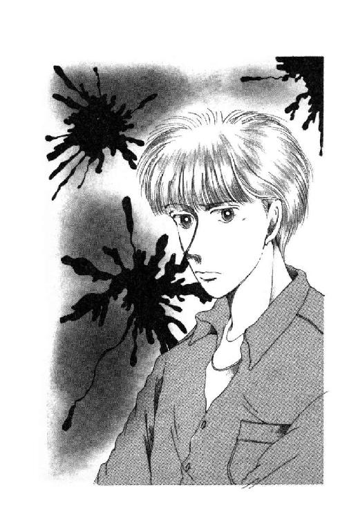
「んー」
しばらく躊躇してから、朱海さんは靴を脱いだ。
「嫌いなんだ、ああいうの」
紅茶のカップ置きながら、朱海さんは肩を落とした。
「なんです？」
「スプラッタ映画。名作って言われてるの二、三本見たことあるけど、気分悪くなっちゃってさ。ヒチコックやなんかのスリラーはけっこう好きなんだけど。それでもあんまり血が飛んだりするのダメなんだよね。......あいつなんであんなもん好きなんだろ？」
「うららですからねぇ」
「あれが笑えるって神経、信じられない。かわいーとまで言うんだぜ。いっしょけんめい特撮してるひとたちを想像すると感動できるじゃないか、とかさ。ったく、あんなに持ってるなんて知らなかった。どうりで、生テープ買って来るからってしょっちゅうオヤジから小遣いせびりとってたはずだ。レンタル屋から借りて来て、すかさずダビングしておいたんだな......まさか」
ゾゾッ、と武者震いをする朱海さん。
「未来ちゃん、好きじゃないよね？ ああいうの」
「だめだめだめだめ、だめです、絶対。見たこともないけど、見なくてもわかります。痛いのと気持ち悪いのと、まるでだめなんです。小さい時、時代劇のテレビで自害なさるかたうっかり見ちゃって、一晩中自分のベッドに刃物が転がってないかどうか必死で捜索した覚えあるくらいで」
「......そりゃまた繊細な」
「いくつかな、四、五歳かな？ そんなものがあるわけないってことも、一応わかってる年頃だったんですけど。あの怖さはもう理屈じゃないですね」
「良かったー」
にっこり笑った朱海さんの頰に、ようやく血の気が戻ってきたみたい。
「毬もキャーキャー言いながらうららの背中にへばりついて見ちゃうしさ、香織ねえさんも『気分転換にはなるわ』って感じなんだよね。もしかするとああいうモンには女のひとのほうが強いのかと思ってた」
「ひとによるんじゃないでしょうか」
西在家さんちの女性を見て一般女性の類推をするのは間違ってるわよ。
「だって......変な話だけど。女のひとのほうが我慢強いっていうでしょう。その......毎月痛いわけだし......」
朱海さん、真っ赤になりながらモゴモゴ言った。
「子供生まれる時も、もし男だったら痛さのあまり死んじまうほどだとか。それ、みんな、おめでたいことだって言ってがんばっちゃうわけじゃない。強いよねぇ。気味悪いモンだってさ、昔の家だとネズミとかムシとかヘビとかいろいろ出たんじゃないかと思う。それ、退治しなきゃならなかったの、女のひとだったでしょう。男は偉そうに威張ってて、家のことは助けてやらないもんだ、って決めてるようなところあったと思うし」
ネ○ミとかヘ○とか、聞きたくない単語が耳の中を通りすぎていったけど。
「そ......そんなに痛いんですか？」
「へ？」
「赤ちゃん生まれる時って......そんなに、死んじゃうほど大変なんですか？」
朱海さんはソファに腰掛けていて、あたしはお茶を出した時のまんま絨毯の上にぺったり座りこんでいた。ウチのソファやらテーブルやらは低いからそんなに高さの差があったわけじゃないんだけど、きっぱり斜めに視線が出会った。
「......い、いや、そんなよく知ってるわけじゃない。ただ、そういう話を聞いたことがあるってだけで」
「やだな......痛いの......」
あたしよっぽど深刻な顔していたらしい。朱海さんは必死で言った。
「だ、大丈夫だよ。今はほら、たいがい病院で産むんだし、どうしてもって場合は麻酔とかもあるだろうし、もちろんひとそれぞれいろいろだろうけど」
「......やだな......」
麻酔ってことは、麻酔かけるために注射するんだよね。あたし、あの入院騒ぎでずいぶん慣れたけども、でもやっぱり注射嫌いだ。自分のからだに針がささるって思っただけで、貧血起こしそうになっちゃう。チクッとした瞬間に、ぶわっと吐き気がして来る。そうだ、吐き気っていえば、赤ちゃんできるとツワリってものだってあるんだよね。なんでも冗談じゃないほど気持ち悪いらしいじゃない？ あたし生理だって大っ嫌いよ。肩凝るし、腰重くなるし、頭痛くなるし、寒気するし、お腹こわすし、食欲なくなるし......そのめんどくさい最中に、ちゃんと下着汚さないようにとか、お風呂もシャワーだけにするとか、いろいろ気をつかわなくちゃならないんだよね。アレをお取り替えするタイミングっていうのもさ、普段ならまだいいよ。いいけど、運動会とか、お芝居見にいくとか、長いこと電車乗る時とか、なかなかお手洗い方面に近づくチャンスがない時にはすごく真剣に計画して実行しなきゃならないんだよね。うっかり持ってくの忘れたまま外出時間が長くなっちゃった時とかって、ほんとパニックだよね。まぁほんの一週間くらいのことだし、ひどいのは最初の二、三日だけだから我慢しようって思ってたけど......ひょっとすると、あんなのが、もっともっと長いこと続いたりするわけ？
ああ......目の前が真っ暗になって来た。
「み......未来ちゃん？」
「不公平だ！」
あたしは叫んだ。
「なんで女の子だけ、なんで女の子だけ、こんな苦労しなきゃならないんだ！ ずるい！ 悔しい!!」
「うんうん。ほんとうにその通りだ。でもそうやって女のひとたちががんばってくれなきゃ誰も生まれて来ることができないわけで」
「なんでもっと進化しないんでしょう？ 生理なんて年がら年じゅう来てくれなくたっていいじゃないですか。子供ほしいなって思った時だけ、じゃ準備、ってスイッチ入るようになってたっていいじゃないですか。なのに、ああ、そうだ。神仏関係ってとんでもないこと言いません？ 生理中の女は不浄だから境内入っちゃいけない、バチ当たるとかって。誰が好き好んで辛い思いしてるんだ。そこを押してワザワザ参詣しに行った人間に入るなって言うなんて、ずいぶんお高く留まってるじゃないですか。そんなの神様って言えます？ そー、すぐ不浄とか言うんですよね、男のひとは。いいですよね、自分は一生不浄になんかならないんだから。このハンディ。例えば試験とかの時でも、男のひとは絶対生理の時にぶつかっちゃう心配なんてないわけでしょ？ この学歴社会、中間テスト期末テスト実力テスト模擬試験、山のようにあるでしょ、そのうちの何度かはどうしたってぶつかっちゃっているんですよね、こっちは。入試に当たっちゃうことだってあるかもしれないんだ。なのに生理って恥ずかしいことだ、そうだってわかっちゃいけないことだみたいな文化的背景があるから、こっちは必死で隠してがんばるしかないんですよ。そういうこと、ただの一度も心配しなくていい人生がどんなにすごい恩恵か、男のひとたち、わかってるんですか？ わかってたら、絶対あれを不浄だなんて発想が出てくるわけはない。心ならずも不浄になってしまう悲しさ悔しさになんかまるで気がついてない。そうやって、女を無視して、お気楽に戦争とか政治とか芸術とかやって、それで『歴史を動かした』とか言うんですよね、男女平等とか言って、男の勝手な論理とか能率とか体制とかに合わせられない女は『やっぱりダメ』って言うんですよねぇっ!!」
さすがに息が切れて黙ったら、あんぐり口を開けてる朱海さんが目に入った。
......う......なんかあたし......なんかあたし、とんでもなくはしたないことを口にしてしまったんじゃないかしら？ 生理生理って連呼してしまったりとか......きゃっ、恥ずかしい！
あわてて自分の紅茶ひと口飲んだら、朱海さんも目をパチパチさせてカップに手を伸ばし、ほ、とため息をついた。
「......なんか、自分が男であることがすごーく申し訳なくなってきた」
「あっ、そんな。すみません。でも、これはつまり一般論で、なにも朱海さんを責めたわけでは」
「うん......それはわかってる。女のひとが偉いってことも、なるべくちゃんとわかりたいと思っている」
そっと、音もしないようにカップを置いた朱海さんは、テーブルに手を乗せてちょっぴりだけあたしのほうに屈みこんだ。
「だから、好きになるんじゃないかな。異性を」
「......？」
「大切なひとの痛みは、自分のより痛いでしょう。苦しんでいる本人と、それを見ても代わってあげることができないほうと、どっちが辛いかな」
「......うっ」
そうか......そういうことも、確かにある。
「進化、って未来ちゃんは言ったね。人間は脳がでかくてちゃんとできあがるのにうんと時間がかかるから、他の動物よりも異常に長いことおかあさんのお腹の中にいなきゃいけないし、生まれた時にもあまりにも未完成だよね。これ、どっちが原因でどれが結果なのか、言えないんじゃないかな。本能だけで生きていくことができるなら、いろいろ考える必要はない。いろいろ考えるようになったから、脳が何年もかけないと一人前にならないようなへんな生物になっちゃう。でも、だから、脳が発達したから、大変なお産の最中を見守らなきゃ、生まれた赤ちゃんと疲れたおかあさんを大事に守ってあげなきゃならないんだって自覚と決意が生まれて、家庭ができて、結婚ができて......愛もできたのかもしれないと思わない？」
「......はぁぁ」
「それにしてもやっぱり女のひとは大変だ。このややこしい制度を、いちいち自分の華奢なからだで受け止めなきゃならないんだからね。それに比べれば愛情なんてものは所詮幻想かもしれないし......おっと......ずいぶんアカデミックな話になっちゃったな」
なんか力抜けちゃった。
そんなとこまで考えてなかった。ただあたしは、自分が痛かったり苦しかったりするのがヤだっただけなんだ。
どんな顔していいのかわからないながら見上げると、朱海さんはいとも優しく微笑んでる。黙って、あたしを見つめて、あたしが何か言うのを待ってくれているように。
急に、カッと頰が熱くなった。
あたしは朱海さんが好きで、朱海さんはあたしのこと考えてくれてるわ。いつか、あたしたちもその──自覚とか決意とか進化の結果だか原因だかに直面しなきゃならなくなるんだろうか。うううん、もしかすると、すでにこの『好きだ』って気持ちが、もうそうなんだろうか。とすると、あたしがギャアギャア非理性的にわめきちらしたことっていうのは、下手すると『あたしは生理嫌いだし女って損だと思うし、だから赤ちゃんなんて産むの怖いからヤダ!!』って宣言してしまったようなことになりはしない？ でもって朱海さんの今のおことばは、『そんなこと言わないで、ぼくを信じなさい』って弁明という......あわわわ！
突然、突然、家中の沈黙がどっしり肩にかかってきた。
さっきあんなに気になった時計も風の音も、今はもうなんだかやけに優しく静かにこの場面を包んでくれているように聞こえる。朱海さんと、あたし。ふたりだけ。今、ここは、ふたりの世界──って、直視すると真っ赤になっちゃうような単語が頭に浮かんでしまって、あたしはくらくらした。
もし、朱海さんがずっとあたしのこと好きでいてくれたら......あたしのほうはまず間違いなくこの立派で美しくて優しいかたを嫌いになることなんてないと断言できると思うんだけれども、あたしたち、けっ......こん......するのかしら？ とすると、毎日こんな風に、他に誰もいない部屋で見つめあって、あたしはお紅茶をいれて、ぐちゃぐちゃつまらないおしゃべりをして、朱海さんは時にはあんぐり口を開けながらも黙って聞いてくれて、それから、ちょっとうなずいて『それはね』って、ご自分の考えを述べてくださったりするわけで......。
い、いいかも......えへへへ。
やだ、ドキドキしてきちゃった。だって、だって、それって、素敵だわ。なんかあたし、なんかあたし、こうしててとってもとっても落ち着くもの。ひとりでいると、あんなに怖かった部屋が、今朱海さんの色に染まってる。パパやママといる時と、まるで違う部屋みたい。そんなの初めてだ。お誕生日の不毛なデートが信じられない......うっ。
そうか。パパたちいないからだ！ こうしてることパパたち知らなくて、だから後からなんて言われるかしらとか心配しなくていいからだ！
なんてこと。あたしったら、あたしったら、親に隠れてるほうが幸せな気分になれるなんて。ああ、なんて不良になってしまったの!?
「......おもしろいなぁ」
突然、朱海さんがクスクス笑った。
「は？」
「いや、ほんと。未来ちゃんかわいい。黙って見てるところころ表情変わるんだもん。ほんとに飽きない......って言っちゃうのは失礼かな」
「い、いいですけどぉ」
「うらら、遅いね」
フッ、と朱海さんが立ち上がった。思わずバッと手をついて避けるような動作をしてしまったけれど、朱海さんは気がつかなかったのか、少なくとも気がつかなかったふりをして、庭への窓のカーテンのそばに行った。ちょっとめくって、外を見てる。
「この家のこんな風景、見たことなかったな。......あ。満月だ」
そ、そんなこと言わないで。あっあっ、いけない、振り向かないでったら！
「ほら、見て。きれいだよ」
わ～ん！
あたし、せいいっぱい首を振った。一瞬、ふたりして月明かりの窓辺に並んで立っているところなんて想像してしまって、もう心臓がすぐそこまで上がってきちゃってる。
不良だ、不良だ。こんな感じって良いわ、なんて思ってしまうなんて！ うらら早く帰って来てくれないかしら？ あたし、こんな雰囲気にいつまでも浸ってると、すっかりのぼせてしまいそうよ～～。
「どうしたの？ あ、そうか。満月と言えば狼男、とか」
ひ～～ん！ 笑ったな。ホラーは嫌いだって言ってたじゃないかー!!
「未来ちゃん」
わぁわぁ、こっちに来るんじゃない～!!
「怖がることないのに」
怖い。充分怖い。なんだかよくわかんないけど、今ここで朱海さんのそばに行っちゃうと、きっぱり不良になりそうな気がする。とんでもないことが起こりそうな気がする。
そうだ！ そうよ、あたし、一瞬『いいかなー』と思ったりしちゃったけど。結婚したら、子供産まなきゃならないのよ。や、や、やだ。あたしまだ死にたくない。
「い、痛いのやだ」
思わずつぶやくと、朱海さんの耳がなぜかサッと真っ赤になった。
「あのね」
「やだ、怖い」
「......あのね、未来ちゃん何か勘違いしてない？ ぼくは何もそんなことを......いやつまり、少しは......だけど......何もすぐにそこまで考えては」
そこまで......？
あっ。やだ、なんで泣けちゃいそうになるの？
朱海さん、何もそこまで考えてないんだ。何もあたしのこと、お嫁さんにしてくれたいわけじゃないの？ ......うっ......そりゃ、そりゃあたし痛いのやだし、まだ法定年齢に達してもいないわけだから、すぐって言われたって困るけど。気持ちの上でくらいは、思っててくれたっていいじゃないのっ！
ああ。この危ういけど素敵な感じ、朱海さんは『何もそこまで』考えてないんだ。ひどい！
「来ないで!!」
「......ちょっと待って、どうも誤解の匂いが」
「誤解はそっちよっ！ 朱海さんのバカ！ 不良!! 帰って！ 帰ってったらっ!!」
「いてっ」
思わずあたし、そばに落ちてたビデオのリモコン投げてしまった。投げたらなんだかスッとしたから、ついでに、クッションと新聞紙とお盆と紅茶の缶も投げてしまった。これでもそれなりに、あまり危ないものは避けたつもりだったのよ。
「ぅ──────ワン!!」
どこからともなく羅士丸が走ってきて、朱海さんの周りで牙剝き出してぴょんぴょん跳ねた。それであたし、ようやくハッとしたの。
「羅士丸！ お座り！」
「うわっ、こりゃ本気だ」
「ご、ごめんなさい！ お座り、お座りったらっ!!」
せいいっぱい大きな声で言ったつもりなのに、すっかり興奮してる羅士丸はなかなか言うことを聞かない。あわてて駆け寄って、朱海さんと羅士丸の間に立ちはだかってみせると、ようやくハッとしたように飛び退いたけど、数歩向こうでいつでもこっちに飛び掛かれるかっこうしたまま、まだグルグル唸ってる。
「ハウス!!」
まっすぐ目を見て怒鳴ると、ようやくフッと攻撃態勢を解いた。そして、朱海さんのことを何度も何度も振り返りながら出て行った。
「......ふう」
あたしの後ろで、朱海さんが肩を落とした。
「びっくりした」
「ごめんなさい......ほんとに」
「うううん」
そっと首を振ると、朱海さんは腕を伸ばした。あたしの腰にさわらないくらい大きく、丸くつないだ。それで、あんまり近くに立っていたことに気がついた。朱海さんの鼻が、おでこにぶつかりそう。
「未来ちゃん」
緩い輪がほんの少し縮まって、あたしの背を押した。ドキドキして、耳が聞こえなくなった。そばで見ると、まつげが長い。きれいな瞳。きれいな唇。
「きみを傷つけたりしない。約束する」
遠くからそんなことばが届いたような気がしたけど、あたしはただ朱海さんの顔に見惚れてて、その意味なんて考えてなかった。ただなんだかわからないけど目の縁が熱くなってきて、近すぎる顔あんまりじっと見てられなくて、思わず目を閉じてしまいそうになって......。
「浅葉さーんっっっ!!」
もの凄い声がして、ドドドッと誰かが走りこんで来た。即刻くるっとあたしをかばうように前に立ってくれた朱海さんの肩ごしに、居間の入り口が見えた。そこには、フライパン片手に構えてハァハァ荒い息をついている合唱おばさんと、おばさんのガウンの裾に嚙みついてずるずる引きずられている羅士丸がいたのだった。
６ 年上の同級生
「で、なんだっていうわけ？ そのおばんは」
食卓のいつもママが座る席に朝の光を背負ったうららがいるっていうのも、なかなかめずらしい光景だ。
そんなことを思いながら口の中のものを飲み込み、一口紅茶を啜って、あたしは答えた。
「最初は、バイクの音らしいわ」
「バイク？」
「うん。合唱団の団長さんやってらっしゃるくらいだから、とにかく耳ざといひとでね。最初にあんたたちが来てくれた時から、なんだこの音は、って窓から覗いてたんだって。そのおばさんの家っていうのは、向かいのあのぺたっとした感じのおうちらしいから、うちの玄関はよく見えるわけで」
「のぞいてたぁ？」
うららは首から上をガックリ前に突き出した。
「ひでぇ。何の権利があってよ？」
「だから悪気じゃないのよ。......と思いたいんだけど......つまり、親がいない夜に暴走族の集会場になってるんだったら大変だとお思いになったとかで」
「阿呆かいな。たったふたりで何が暴走族だ。やだね～～オバンのおせっかいは」
椅子の背を反らして手を振るうらら。しばらくじっと見ちゃったけど、てんで吞気な顔しているから、あたしは黙ってせっせと食べた。
せっせと食べてないと、『あんたが悪いのよ！』ってわめきだしちゃいそうで。
慎重にしてご近所への気配りを忘れない朱海さんの運転はともかく。昨夜のうららの発進のしかたは、暴走族って呼ばれてもしかたのないようなものだった。少なくとも、もうそろそろ安らかにお休みなさろうとしてらしたかたの何人かは、あれで起きちゃったかもしれないし。だいたい、その後だって......すぐ戻るって言ったクセに！
「え？ うらら？ 部屋みたいよ、ちょっと待ってね」
電話に出てくださった西在家さんちのおかあさまは、うららがまた出かけるなんて思ってらつしゃらないようで。
「......ね、それより未来ちゃん。うちのドラ（というのが朱海さんのことだってわかったのはしばらく経ってからだけど）おじゃましてるんですって？ いいの？ 邪魔だったら早く追い返してくれていいのよ。......いえ、もちろんおばさんはちっともかまわないんだけれど、そちらのおかあさまがご心配なさるんじゃ......」
って......小声でおっしゃるし......。
なんでおばさまが知ってるのよ!? そりゃ、そりゃ、言っちゃダメとは言わないけど、うららのことだからどんな風に言ったのか恐ろしいじゃないの。もしも、あたしがひとりで寂しいからって、わがままにも朱海さんをお呼びつけしてしまったみたいに思われちゃったらどうしてくれるの？ でもって、おばさまもしかすると『おかあさまに内証じゃないの？』ってそっとたしなめてくださったりしたってことかもしれないじゃないの！
なのにこの子ったら......吞気にも自分のお部屋でマンガ読んでたとか！
テープになってるのには適当なのがなかったから、最近買って来たなかで朱海さんが一番お気に召していらっしゃる『ペイルライダー』とかいう映画をレーザーディスクからダビングしていたんだ、それには二時間近くかかるからヒマ潰しをしてたんだって、ちゃんと理屈は通るけどね。それならそうだって、電話してくれたっていいじゃない。こっちはうらら遅いね、遅いね、って待ってたんだから。二時間もかかるってわかってたら、それなりに対処のしかたもあったのに！ ......もしかするとわざと黙ってたんじゃないかって疑ってしまうわ。
ふう。トーストが喉につかえる。
朝ごはんは自分で作った。と言っても、トマト切ってレタス洗って、チーズとジャムとひっぱりだしただけ。
半分ずつにしたパパイヤを平らげちゃったうららの傍らに、かわいいギンガムチェックの包みがある。おばさまが作ってくださったあたしの分のお弁当。学校で渡してくれてもいいのをわざわざ届けに来てくれたのには、ひとりでごはん食べるのって寂しいよね、って洞察すらもあったのかもしれないけれども。
そのぐらい考えてくれるうららなはずだから。やっぱり、昨夜のことには隠された意図を感じてしまうわ、あたし。
「それにしたってさ。そのオバン、なんだって家の中まで侵入して来てたわけ？」
「うん、だから......おばさんの言ったことをまとめてみようか」
「うんうん」
暴走族のひとりは凄まじい音を立てていなくなったけど、まだひとり残っているはずだとすぐにわかった。これは謎だった。ひょっとすると『ご両親のいない心配な家』が発見されてしまってかっこうの遊び場だと思われ、もっと大勢の暴走族を集めに行ったのかもしれない。止めるなら今がチャンスだ。ご両親が留守であることを知っているのは自分だけかもしれないし、昼間『何かあったら助けに来る』と約束したのだから、私には責任がある。
「責任ね」
へぇへぇ、とうららは耳の後ろを搔いた。
おばさんは決心し、パジャマの上からガウンをひっかけ、万一の場合に備えてフライパンを携帯し、そっと道路を渡り、うちの玄関の前までいらっしゃった。ドアに耳をくっつけてみても悲鳴や乱闘の気配はしなかったけれども、すでにあの頼りない娘さんが抵抗できないような状態にされているのかもしれない、と心配で心配でたまらなかった。チャイムを鳴らそうかとも思ったが、へたにショックを与えて賊が捨てばちな行動に出ると大変だから、一応、ノブを回してみた。
「えーっ、どうしてそこでノブ回しちゃうわけ？」
「知らないわよ、だってそう言ったんだもん」
そしたら、なんと！ 不用心にも鍵がかかっていなかったので、すこ～しだけ開けて様子を見た。案の定、玄関に昼間は見なかった男ものの運動靴が脱いであるのがわかった。居間で話し声がしていた。なにやら言い争っている気配もする。ここまで来たからには、あなたの無事を確認しなければ、私も夢見が悪い。勇気を出してそっと玄関に滑りこもうとした時、あのバカ犬が物も言わずに走って来て、いきなり食いついたのだ!!
「......羅士丸偉い。マヌケなように見えてても、さすが忠犬」
「あたしもそう思う」
「何が怖いって、んなケツに犬ぶらさげてる状態でそういう言い訳がスラスラ出てくるっつーのはさ、そのオバン自分で自分のやってること、ほんとにそうだって思い込んでるってことよね。たんなる好奇心ののぞきババァなくせにさぁ」
「うーん」
「ヤバかったねー。らしくんがいなかったら、あんたらどういう状態でそのオバンに『確認』されてたかわかったもんじゃないもんな」
「......なにそれっ!?」
「だってさぁ」
うららはニヤニヤ笑いながら壁の時計に目をとめて、オッ、と言った。
「行こ行こ、もう出ないと遅刻だべさ」
ゆうべ風が強かったと思ったら、今日は霧雨だ。このくらいならレインコート着て自転車で行っちゃってもいいんだけど、うららも朝から長い距離を歩いて来てくれたんだし、久しぶりでバスに乗った。
「しかし、ヤバイんでないー？」
ひとの肌で温まった湿り気の匂いがするバスの中、てすりに並んでぶらさがりながら、うららは小さく言った。
「何が」
「そーゆーオバンに見られちゃったっつーのはさ。おまけにガウンの上からとはいえ、嚙みつかれたわけでしょ。そーゆーオバンって、ほら、簡単に逆恨みしそーじゃん？ あんた、ご近所でウワサになる前に、どういうことだったのか、せめておとっつぁんおっかさんには言い訳しといたほうがいいかもねー」
ズ────ン。
重たい肩をバスの振動がゆさゆさどやしつけた。
......知らないわっ！ もう、パパもママも何よっ。かわいい娘がひとり、はじめてひとりっきりで夜過ごさなきゃならないって時に。おっかない思いして、へんなオバサンにギャアギャアわめかれて、どうしたらいいものか茫然としてたっていうのに。約束してくれた電話一本、かけて来てくれないしっ！ あたしのことなんて心配してくれてないんだ。他人の朱海さんのほうが、ずっとずーっと優しいわ！
あんまりみじめで腹が立ったから、風の音をおっかながるゆとりもなくなっちゃって、眠れて良かったけど。あけがたに小さい子供の頃にしょっちゅう見た、デパートの夢、また見ちゃって。冷や汗びっしょりで起きたんだからね、あたしは。
デパートであたしは『ここで待ってなさいね』って言われて、待ってるんだ。変な顔のマネキンさんたちがいっぱいいて、不気味に笑ってて、とっても怖いけど、おとなしく待ってるんだ。あんまり怖くなってべそかきそうになるんだけど、我慢して黙って立ってると、そばをパパとママが通るんだ。なのに、『おや、この人形はうちの未来に似てるね』『ほんとうね、でもうちのかわいい未来ちゃんは今日はよいこでお留守番しているものね』って......あっち行っちゃうんだぁ!! そんで、そんで、駆け寄ってパパママあたしよ！ って言おうと思うのに、もう、口も手も足も動かなくて、あっ、あたしはお人形になってしまったんだ、ってわかる。家に帰れば『ほんとの』未来がいるから、パパもママもあたしがいなくなっちゃったことに気がつかなくて、もう一生、ここでずっとお人形やって立ってなきゃならないんだ......って、わかってしまう......。
夢にしてはやけによくできた話だから、もともとは少女マンガかなんかで似たような話を読んで、すっかり自分のことだと思い込んじゃったのかもしれない。でも、これは怖い。あんまり怖かったから、小学生の頃──すでにもうその夢を何度も見て筋もディテールも全部くわしく説明できたりもしたので──夜中に起きてパパたちのとこ行って泣きながら『こんなこと絶対しないでね』って訴えた覚えもあるわ。あの頃の『一生』っていうのは、今考えるよりももっと長くて、だから『一生このまま』っていうのは、もっともっとどす黒くおっかないものだった。もちろん、パパもママも『何言ってるの、そんなことあるわけないでしょ』って言ってくれたけど、あたしは、今もってしっかり疑っているのかしら。
あの頃のように手もなく泣き出してしまうほどのショックはもうないけれども、考えてみればこの夢は象徴的だ。『永遠』とか『真実』とか『アイデンティティ』とか、子供の頃はわかってなかった要素も、今は見えてしまう。合唱おばさんがウワサなんてばらまいたら『ほんとじゃないあたし』が出現してしまうかもしれないんだから、一種、予感とすら言えるかもしれないわ。あの、からだが動かない感じ。何度経験しても苦しいものよ。あれが、現実に『手も足も出せない』状態って意味だとしたら......。
ぶるぶるぶるっ！
「ねぇねぇ。そー暗くなることないって」
「あ......あ、うん」
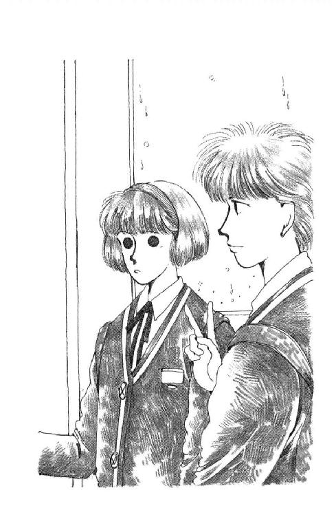
うららが声かけてくれなかったら、あたしそのままやな予感の中にどっぷり浸かりこんでしまっていたかもしれないわ。
「何言われたってあんた、あっちは不法侵入でプライバシーの侵害なんだからね。要はあんた自身が、絶対やましいとこなんかないって態度を貫けるかどうかよ」
「うん......」
でもパパがなぁ......。あのひとは理屈じゃないからなぁ......。
込んだバスの息で曇った窓のところどころ、ひとが手で擦った丸い跡から雨の街が見える。しっとり濡れたみどりと、カルピス色の空。
ゆうべ朱海さんとふたりだけでいた時の、あの静かな気持ちがもう遠いね。やっと、たとえふたりだけでいても、あんな安らかな時間を過ごすこともできるのだと知ったばかりなのに......もうどこかに行ってしまうの？ また、朱海さんのことを考えるたびに、辛くなるの？ パパや、パパを意識するあたし自身が、だめ、だめ、だめって顔を出しちゃうの？
『やましさ』ってうららは言ったね。やましいことなんて何もないはずなのに、どうしてこんな気持ちになってしまうんだろう。
道に落ちた雨は、ひとに踏まれて、泥となって、自分自身に流されていく。はじめから海に落ちれば、そのまま静かに安らげるのに。
パパじゃない。あのおばさんでもない。あたしが説得しなきゃいけないのは、あたし自身だ。
教室についたのは、いつもよりだいぶ遅い時間だった。けっこう大勢のひとたちが、もう来てる。
「おはよう！」
なるべく元気に声をかけたら、廊下側で固まってたひとたちの何人かがビクッとしたように振り向いた。それで、ヒソヒソ話をしてたことがわかってしまった。よく見ると、ヒソヒソ話のひとたちの目がチラチラ向かっているひとがいる。
見たことないひとなのが、一目でわかった。だって、昨日は、こんな真っ茶色な髪のひとはいなかった。はじめは後ろ向いてるのかと思ったけど、肩とかの感じからそれじゃオカルトだって気がついた。前髪も後ろ側もみんな同じくらいの長さがあって、しかもうつむくようにしているから、そう見えるんだ。
......じゃあ、このひとが十八歳というあの......。
自分の席まで歩いていく時にチラッと見ると、そのひと──確か桐村さんって言ったな──は一番窓際の真ん中へんの席に座って、ずっと黙って外を見てるらしい。ヒソヒソの内容の予想がついた。桐村さんはいなかったから、一番後ろの廊下側の席ってことに昨日決まっちゃってた。ここの席の誰かが困ってしまったのに違いない。
でも、ヒソヒソはよくない。いくら年上のひとだからって、これからずっと同級生やっていくんだもん、言いたいことは言わなきゃ。なんで言わないんだろ。
西在家さんちのおばさんが作ってくれたお弁当には高さがあって、机の中に入らなかった。布袋に入れたまま横に下げると、でっぱっちゃって歩くひとの迷惑になりそうだったけど、しかたない。でっぱらせておいてみても、やっぱりヒソヒソは続いていて、桐村さんは桐村さんで知らん顔してるまんまだ。
......えーい、誰もやらないなら、あたしやるもん！
あたしは窓際に歩いていった。背中に視線を感じたような気もしたけど、少なくとも、あたしがさっき『おはよーっ』って入ってきたばっかりなのは、この桐村さんも気づいてるかもしれない。言うからには、迷ったあげくじゃなくて、ごく自然に無邪気にっていうのが一番よい、と思った。
「あの、おはよう」
そういう声を出したつもりだったけど。
茶色い髪のベールはぴくりともしなかった。そばで見ると、なんだかずいぶん傷んだような髪だった。......そうか。長期欠席の原因は、病気かもしれないわね。お気の毒に。
「桐村さんでしょう？ はじめまして、あたし浅葉といいます」
茶色い髪がゆっくり動いた。顔を隠すように垂らした髪の間から、大きくて鋭い一重の目が片方だけ見えた。そのあまりの無表情に、ドキンとしたけど、あたしはせいいっぱい笑顔を作った。
「突然だけど。この席別のひとのなのよ。昨日、お休みだったでしょう？ だから、桐村さんの席はあっちってことになっちゃってて......」
いきなりバタン、と机を傾けるようにして、そのひとは立ち上がった。そしてもうあたしを見もしないで歩きだした。その肩は、どうしたって怒ってるみたいだった。
「ま、待って！ ごめんなさい、でも、この席がどうしてもいいなら、ここのひとと話をしてみたほうがいいんじゃ......」
桐村さんは止まらなかった。シーンとしちゃった教室を切り裂くように横切ると、そのまま廊下に消えてしまった。
何秒か遅れて、誰かがサッと廊下をのぞいて、あ～あ、と言った。
「いないよ」
「えーっ」
「あ～あ。浅葉さん、あんたが悪いのよ」
うっ。
「いきなりあんなこと言うから。あのひと、傷ついたわよ」
そう言ったのは村上さん。ヒソヒソ話の真ん中にいたのも、やっぱり村上さんだったみたい。あたしだんだんこのひとのこと、嫌いになってきたような気がするけど。
でも......うわー、うわー、うわー！ ほんとに、あたし、あのひとを追い出しちゃったの？ どうしよう？ そんな、そんなつもりなかったのにぃ！
茫然としながらも目に入ったの。桐村さんが座ってた席、鞄ひとつない。あわてて逆さになってのぞいて見たけど、机の中にも何ひとつ入ってなかった。
......あれ？ ......教科書とか、まだ買ってないのかな？
「おせっかいねー。落合さんだって、いいって言ってんのにねー」
「これでまた、あのひと来なくなっちゃったら、浅葉さんのせいだからね」
「............」
とりあえず、黙って自分の席に戻ろうとしたら。
「あんたら」
ドスの効いた声が飛んだ。
「何寝とぼけたこと言ってんだか。んなとこで、コソコソ集まってるほうが、よっぽどあのねーさんの神経にさわってたぜ」
加田さんだ。からだはちっちゃいんだけど、だまってにらんでるだけですごく怖い。机の上になんて立て膝ついちゃって、こういう目付きなんてして、こんなことばつかいなんかしちゃうから不良だって言われちゃうのに......。
でも、かばってくれたんだ。あたしのこと。
うっ......感激。
「あ......あら。あたしたち別にコソコソなんてしてないわよ」
村上さんは子鹿の目をクリクリさせて笑ったけど、どこかひきつってる。
「けっ」
加田さんは目をギラっとさせてだめ押しのひとことを言うと、パッと机から下りて、まだ途中でウロウロしてたあたしの肩を抱いた。
「気にすんなよ」
「うん。大丈夫。ありがと」
「探してくる」
「え？」
「桐村さん」
『さん』......？
その違和感が何なのか、すぐにはわからなかったんだけど。加田さんが出ていっちゃって、自分の席に座った頃に、あっ、と気がついた。
加田さんたちはひとに『さん』なんてつけない。あんなにやさしく、自然に『さん』って言ったりしないのに。
それでも十八歳のかたともなると、思わず敬語が出ちゃうのかな？
「おはよう」
また一種独特の凜とした声が聞こえたかと思ったら、例の美しい毛利さんが現れた。後光がさしてるように見えたような気がして、いくらなんでもマンガじゃあるまいしって目をパチパチさせてみたら、後ろにいらしたのは岩田先生だった。両手に何か、銀色のものを抱えてらっしゃったんだ。教卓に置かれてようやく全貌が見えた。それは、銀色のボールを何個も横に並べて紐でぶらさげてあって、ちょうどブランコみたいに揺れるように作ってあるものらしかった。
「おはよう、諸君」
と、先生は言った。
「これは私が発明した念力開発訓練装置だ。これからどうやって使うかを見せる」
........................。
誰も何も言わずに、ぞろぞろと席についた。まだ、始業のベルの前だというのに。
先生は、装置の両端、ブランコでいえば左右の支柱にあたるところにそれぞれの手を軽く置いて、しっかりと目を閉じると、なにやらむにゃむにゃ呪文めいたものをつぶやきだした。傍らには毛利さんが、そっと控えて立っている。みんなのほうを向いて、誰か邪魔をしようものなら覚えてらっしゃい、って顔をしてるけど。
邪魔するひとなんているわけがない。教室に入ってくるひとたちが、ドアのところでびっくりしてあわてて席につく音以外、物音らしい物音もしないわよ。
突然。
「......ををっ......」
「えーっ、噓ぉぉ!!」
ボールが動きだした。それも、七つほとんどくっつくようにしてあるのに、真ん中の一個だけが、最初微かに、次第に大きく大きく揺れるんだ!!
......な、なんで？ なんでそんなことができるわけ？
ふうっと息をついて先生が手を放すと、ボールの勢いが次第次第に弱まっていった。先生のお顔は真っ赤で、ポケットからハンカチだして額をぬぐってらっしゃるところを見ると、汗もかいたみたいだった。
ひととおり拭き終わると、先生はニコッと無邪気に微笑まれた。
「それでは、出席を取る」
そこで、実に鋭いタイミングで始業ベルまで鳴ってしまうのだった。
頭がクラクラしてたけど、一時間めは理科実験室だったから動かなきゃならない。腰を上げてみると、ほんの隣でも、この謎の教室を離れられるのにホッとしてしまったりもした。
「ねー、なんなのあれぇ、やだよぉぉ」
「絶対なんか仕掛けがあんのよ!! でなきゃ、サッサと持って帰ったりしないわよ。『開発装置』なんだったら、あたしたちに使わせてくれたっていいはずじゃない」
「頼んでみようか」
「やめてよ～不気味だから～」
「そう？ おもしろいじゃない......あっ」
みんな本人がいなくなっちゃうと安心してザワザワうわさしたけど、毛利さんがスッスッとした足取りで追い越していくと、ピタッと黙った。
困ったな。どこ座ろう。
新学期はいちいちこれだからめんどくさいわ。すでにグループになってしまってるひとたちはサッサとくっついて教卓から遠い席取っちゃうし。入り口付近でぼんやりしてると。
「帰っちまったらしい。でも、気にすんなよ」
突然声がした。見ると、加田さんが手を振りながら通っていくところだった。
ふう。
気にするなって言われてもねぇ......。
「ミッキー、ミッキー」
なんだか妙に懐かしい名前で呼んでくれたのは、奥山さんだった。自分の隣の席に手招きしてくれてる。良かった、あそこにまぜてもらっちゃおう。
理科の矢崎先生も、学年の初めにあたってみんなにやる気を起こさせようと思ってくださったのか、実験室に呼んだのはなんのことはないスライドを見せてくださるためだった。ウニとかプランクトンとか細胞とか赤血球とか、だんだん細かくなってく写真はカラフルでおもしろかったけど、先生のお話はボソボソして聞き取りにくくて、みんなのきゃあきゃあ上げる声にかき消されてしまう。
だから。
「桐村奈由里のことだけど......知ってる？」
奥山さんが囁いて来た時、思わず聞いてしまったのよね。あたりも暗いし、ザワザワしてるし。おしゃべりなんかしちゃいけないって気分より、つい好奇心のほうが勝ってしまったのだわ。ああ。あたしどんどん悪くなる。
「何を」
「子供がいるんだって」
え──────!?
我ながら、よく声出さなかったわ。あんぐり開いてしまった口をどうにかしめると、奥山さんは、そうそう、って言うようにうなずいて、あたしとの間にノートを立てて伝声管兼厳重なる目隠しにした。
「確認取れてない情報だけどさ。十四で家出、同棲して。だけど、その男は半年後に病気だか事故だかで死んじまったんだって。それから暴走族の群れにまざって暮らしてるうちに、桐村って男との間に子供ができたんで、結婚して引退したのに。その桐村もなぜかぽっくり逝っちゃって。子供、男の親と奪いあってるんだとか」
あたしは思わずマジマジ奥山さんの顔を見てしまった。
「そ......そういうひとっているのね......」
「そーよ、恐怖の薄幸少女よ」
「薄幸っていうより......」
言っちゃ悪いけれども、なんか悪い霊にでも取りつかれてるんじゃない？ なにもそんな、すぐ死んじゃうひととばかり結ばれなくたっていいと思う。もしかすると、彼女と結ばれたことで普通の男のひとも、そういう運命になっちゃうのかも......。
あわわわわわ、あたしってひどい!!
「でもねー、それだと中学もちゃんと卒業してるかどうか怪しいと思わん？」
「そうね」
「ま、適当に追い出されたってことも考えられるけどね」
「誰に聞いたの、そんな話」
「佐野ちゃんよ。あ、そそ、もうちょっと続きがあんだ。小西や佐野ちゃんや加田たちは番張ってるわけでもないしさ、ゾクそのものとは全然繫がってないけど。彼女らの先輩たちのカレとかまで入れれば、しっかり仲間、身内なわけよ」
「そ、そうなの？」
ゾクって、暴走族のことだよね？ ああ、あたしも森戸南に来てから変な単語をずいぶん覚えてしまったけれど......そういう世界の内情の話となると、もう全然わかんない。ましてや、あの小西さんや加田さんたちが、そういうとことも『関係ある』なんて......ううううう、なんて世界！
「そんで、桐村っていうのは......つまり、彼女の旦那のほうだけどさ、かなりの有名人だったらしいのよね。てことはよ、その偉い桐村の妻である彼女ってのも、そのスジではとんでもないひとってことになるの、わかる？ なにしろ忘れがたみまでいるんだもん。お世継ぎ生んだみたいなもんで......何震えてんのよ」
「だ、だって」
そんなひととは露知らず、あたしってば、あたしってば、偉そうに口きいちゃったりしてしまったじゃないの！ あわわわ、膝が止まんない。
そうか、あのやつれた髪は、そういう意味だったのか。
でも、こ、こ、子供産んじゃうなんて......たった十八歳で、乳飲み子抱えた未亡人にまでなっちゃってるなんて......なんてお気の毒な、なんて立派な......。
「偉いのね」
「そうよ。もうそのスジではこれ以上はないってくらいの頂点よ。死んだ先輩の女房ともなるとどんな阿呆だってそうそう逆らえないし。だから彼女は実は西関東地域全体に密かに君臨する影の女王ってことも......」
「だって痛いのよ。すごく痛いって話よ」
「あ？」
「このように、大腸菌ウィルスとヒトタンパクの大きさを比べますと」
一瞬先生の声が耳に入って来たけど、もう授業のことなんて考えられなかった。
こっちだって生物学よ。女の子にとっては、より切実な問題よ。
「あたし、不良のひとって、子供なんてすぐ捨てちゃうことしか考えないのかと思ってた。男のひとだったら死んじゃうかもしれないほど痛いっていうのに、よく産んだわ。偉いわ。すごい勇気だわ、決断力だわ!!」
「......そらまー......」
「あたしだったら、できない」
じわっ、と涙が浮かんで来ちゃった。
「今、そんなこと、とてもできないと思う。だって、赤ちゃんできちゃったら当分学校なんて行けないに決まってる。そんなの怖いじゃない。しかも痛いのよ？ そんなの怖いじゃない。人間は脳が大きいから未完成で生まれるしかない、だから愛しあわなきゃならない。なのに、頼りの最愛のひとが、そんなに簡単に死んでしまったなんて......なんて悲劇なの！ なのに、桐村さんは、そんな悲しい運命とも知らず、今のあたしくらいの時にはもう愛に生きていたのだわ。死ぬほど痛いの我慢する覚悟ができていたのだわ。あたし、尊敬する。たとえ暴走族だって、同棲だって、不良だって、あたし、あのひとのこと、尊敬する!!」
「しっ、しっ!!」
いけない。あたりの子がジロジロ見てる。
幸い、先生までは気がつかなかったみたいだから良かったけど。
昼休みに、ツル先生が呼んでるって聞いた時は、ドキッとした。
なにしろここに戻って来ることに関しては、ひどくご迷惑をおかけしてしまった。『覚えておけよ』とか『これは貸しにしとくからな』とか先生すごんでたからなぁ......。
とはいえ中等部の職員室の、先生の机のあたりは、あいかわらずで、なんだかじわっと懐かしかった。
なのに。
「借りを返してもらおうと思ってな」
あいかわらずのボサボサ頭を振りあげてあたしの顔を見るなり、ツル先生はニヤッとそう言ったんだ。
ふう。
「やっぱりそれですか」
「そうだ。ちょっとしゃがめ」
はぁ。ひとに聞かれたくない話なのか。困ったな。何だろう？ あんまりお小遣い使わなきゃいけないことだとまずいなぁ。
先生の横の床はなんだか不潔っぽくて、制服のスカートの裾がさわるのもいい気持ちじゃなかったけれど、しかたがない。素直にしゃがむと、先生も椅子を回してあたしの顔に顔を近づけた。
「おまえの組に、桐村ってのがいるだろう」
「えっ？」
「いるな」
「は、はい。知ってます。今日、朝だけ、見ました。すぐ帰っちゃったみたいですけど」
......あたしが追い返したかもしれないこと、言ったほうがいいかな？
迷ってると、ツル先生は鼻の頭に皺を寄せてうなずいた。
「面倒を見てやるんだ」
「は？」
「中間、期末。やつが落第点を取らないように、とりあえずこの一年しっかりやるように、おまえがなんとかするんだ。そのために、おまえらを同じクラスにするように、ちょいと細工もしたんだぜ。俺の期待に応えてみせろよ。なぁ」
「だって......」
「なんだ」
そりゃあたし、あのひとを尊敬するって思ったけど......立派なひとだってほんとにほんとに思うけど......。
あんな過酷な人生を送ってきたひとが、あたしなんかの言うことをまともに聞いてくれるかしら？ 話しかけても黙って見つめ返してくるだけのひとが......しかも、あの世界の影の実力者と言われているようなひとが！
「......自信ありません。あたし年下だし......そんなひとを『なんとかする』なんてこと、とても......自分のことだってあたし、ほんとにせいいっぱいなのに」
「バカ野郎!!」
ドカン！ ひっぱたかれた机からもうもうと埃が立って、すぐ横に小さくなってたあたしの頭にも肩にも、さんざん降り注いだ。
「てめえ俺になんて約束した!! てめえが自分で勉強する時、あいつにもやらせりゃいーんだ。簡単じゃねーか。何も百点取らせろとは言わん、赤点取るのだけなんとか避けさせろって言ってんだッッ!!」
つ、唾が飛ぶ、唾が。
「でも......あのう、あのひと、学校にもあんまり来たくないみたいでしたよ。だいたい、まずちゃんと出席してくれないと」
「んじゃ来たい気にさせてみせろ!!」
ひ～～ん、そんなとこまでぇ？
「もちろん、岩田先生も協力してくださるだろうが、クラスの他のやつらがどう動くかはおまえ次第だ。桐村だって、やる気がないわけじゃない。ないってんなら、初めから来はしないだろうが。あいつだって息子のためにせめて高校ぐらい出ておきたいと思ってんだ。だが年も年だ。何年もろくに授業に出てなかったこともある。今さら高校の規則に縛りつけられたって、ムッともするさ。だからそのハンディをだ、そのうちの少しでもだ、誰かに支えてもらえたらなんとかなるんじゃないかと思うんだっっ!!」
「......先生？」
......どうして、そんな真っ赤な目をするの......？
「あの」
「なんだっ!!」
「聞いていいでしょうか。どうして、先生はそんなにあのひとのことを......？」
ツルさんはあわてて身を起こして、二、三度深呼吸をした。
「俺のな。おやじのおやじの弟の息子の嫁の実家の三男坊が、あれの亭主だったんだ!!」
「故桐村氏が？」
よくわかんなかったけど、ご親戚ではある、と。
「桐村兵庫っつーんだ」
剣豪みたいな名前だ。
「阿呆だったがガキの頃はけっこうなついてくれたもんだった。だからな、あいつのガキ産んだ女が、あの阿呆揃いの松林学園すらとうとうクビになったっつーから、ウチで引き取れるように手配したんだが......これは内緒だぞ。校長も知らんのだ」
「......は？」
「事務の女の子に直接合格書類作らせたからな。ふっふっ、俺はこれでも職員の間で人気があるのだ。どうせ誰もチェックなんかしないのだ」
「............」
だからって、そういうことしていいんですかぁ？
「わかったか」
「......ええと......やってはみますけど」
「そうか！ いや、ありがとう、ありがとう!!」
あたしの手をブンブン振り回す先生の顔見てたら、切なくなってきた。
先生も、ひとの親なんだよね。もしかすると、志乃さまや亀太郎ちゃんのこと考えて、もしも自分がそんな目にあったら、って思ってみたりなさったのかもしれない。
「うららには、言ってもいいですか」
「うっ......不正入学の話はやめとけ」
「ご親戚だってことは？」
「言わなきゃアカンかなー？」
そうか。先生のご親戚なら、うららから見た桐村さんだって、遠い遠い遙かな親戚ってことになる。一回......二回、婚姻が挟まってるから血の繫がりとかはおよそないとは言っても。
ちょっと、重たいね。知らずにすむなら、そのほうがいいかも。
ふう。
「わかりました。黙って、協力だけ頼みます」
「おお。おまえはやっぱりいいやつだなぁ。拝んでるぞー」
調子いいの。
にこにこ見送られながら職員室を出たけれど。高等部までの道がやけに遠く思えた。
引き受けたはいいけど。ほんとに大丈夫かなぁ？ だいたい明日、桐村さん来てくれるかしら？ 逢ったら最初に、どう言えばいいの？ あたし自身だって、あのクラスにまだとけ込めたってほどじゃないのに......。
あああ......頭痛い......。
霧雨も帰りには上がっていた。湿って重たい傘を抱えてまたバスに乗りながらの帰り道、とりあえずうららに奥山さんから聞いた話をしてみたんだけど。
「そりゃ、同情することないって」
きっぱりウンザリした顔されてしまったんだよね。
「その女、わざと不幸になるように不幸になるように選んでんだよ、自分で。無意識にかもしれないけどさ」
「まさか」
「そうでしょうが。好きな男が死んだからって、なんでゾクに入らなきゃならんのよ。なんでそこでまたすぐ男見つけてガキこさえなきゃいけないのよ」
「よくわかんないけど......寂しいからじゃない？」
「そこよ、そこ！」
あたしは座ってて、うららは立ってた。全部ひとつずつ前向きに作ってある椅子のバス。あたしがいる席はちょうどタイヤか何かの上で、足のとこが狭い。
ついつい、貧相な姿勢になっちゃうあたしの顔の前に、うららは両手を手摺にかけて、顔を突き出した。
「言うんだよねー、ゾクの子って。ここんちのやつらしか自分のことわかってくれないからーとか。そんで寂しくなくなるかっつったら、そうやってどんどんどんどん不幸になってくわけじゃん？ 阿呆だっつーのよ」
「うらら......声、大きい」
「ミッキー、あんたもね。自分がいくら幸せなお嬢さん育ちしてっからって、何も不幸な人間に劣等感感じる必要ないんだよ。這い上がろうと思えば誰だって、それなりのとこまでは行けるはずなんだ。それを、ハナからあきらめてさ。なんなのよ？ 弱いもの同士みじめなもの同士くっついてぬるま湯のなぐさめごっこして。最低だ。アレよ。アレが好きなんだわ、きっと。だからケダモノみたいに男ほしくなるのよ」
「ちょ、ちょっと、うらら......」
「だってそうでしょ？ 最初の男のこと本気で好きなんだったら、そんな一年や二年で忘れて別のやつとくっつけると思う？ 死んだんだよ。家出していっしょに暮らすほど惚れた男が、死んだんだよ!?」
ふ、ふぇぇぇん！
「そんなの、そんなの、わかんないじゃない。だからよ。あんまり好き過ぎて、だからその後もうどうでもいいやってなっちゃって、暴走族のひととかにだってなっちゃうかもしれないじゃない。そんでその結果、またほんのちっちゃな希望を見てしまって、ああ、ここにすがりたいなぁって思ったからって、しかたないじゃないよぉぉ!!」
「......あんたね」
くすんくすん。
「ひとごとでそんな、バスん中でわぁわぁ泣くことないでしょ」
「だって」
「近づかないほうがいい」
うららの真面目な顔に、涙も止まってしまった。
「ど、どうして」
「あんた、センチだからその阿呆に洗脳されかねない。あんたはそんな世界、見ちゃダメよ。いいねミッキー。金輪際近づくんじゃないよ、その桐村とかいう女に！」
でも......でもぉぉ！
どうしよう。あたし、ツル先生と約束しちゃったのにぃ!!
こんぐらかった頭を手で押さえながら、どうにか家までの坂を登って。
「ただいまー」
ドアを開けてから、あれっ？ と思った。
だって、鍵。開けなかったのに？？ あ、パパの靴だ！ ママのも！
わぁい！
「おかえんなさ～～い!! 早かったねー」
飛び込んだところまではバラ色だった気持ちが、パパの目を見たとたんざわっと青黒くなった。
「ほんとうに嬉しいか」
パパが座っていたのは、ゆうべ朱海さんが座っていたのとほとんど同じ位置だった。それでわかった。聞いたんだ、あのおばさんか誰かに、あのことを！
「それともそれは芝居なのか......？ えっ、未来」
「なっ......パパ、待って、聞いて！」
パパは立ち上がった。頭が、さんざん搔きむしった後みたいにビンビン跳ねていた。
「おまえは今晩も、パパたちがいない隙を狙って、あの男を連れ込もうと思っていたんじゃないのかぁ!!」
「あなた!!」
寝室のほうから、バタバタとママが走って来た。なぜだかもの凄くきれいに見えると思ったら、まだおよそ行きの丁寧なお化粧をしたままなんだ。
ママはあたしの肩を横からしっかり抱き締めると、一瞬その特別きれいな顔でニコッと微笑んでくれて、またキッとパパを見た。
「それが娘に向かって言うことばなの!? なぜわかってやらないんです。ちゃんと、未来の話を聞いてやらないんです。どうして、あんな、わざわざ告げ口しに来るようなひとのことばを本気にするんですか！」
「う、うるさい!! 事実は事実じゃないか。西在家さんちの奥さんも、あいつが来てたことは認めていたじゃないか!!」
「そうですか。......わかりました」
ママは顎をあげて、ギュッ、とあたしの肩に力をこめた。
「さ、未来ちゃん、行きましょ」
「い、行きましょって......」
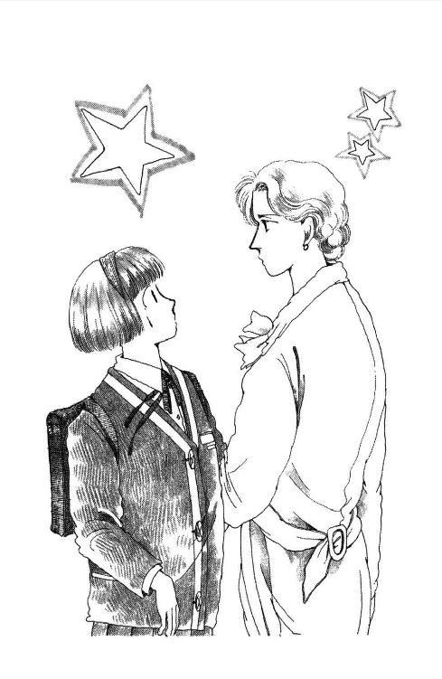
「支度してあるから。学校の道具は持ってね」
「どこへ？」
「そうね。さえらのところかしら」
さえらおばさまんちぃ!? だって、だって。
パパはぶるぶる震えながらこっちを見てる。まだ肩は怒ってるけど、その目は。目は。
「とにかく、出ましょ。こんなわからず屋は置いて」
「ま、待て、英子。待たんか!!」
ママは黙って寝室に入って行くと、すぐに、スーツケースをふたつ持って出てきた。
パパの膝がガクッと折れた。
「英子ォォォ」
「さようなら、あなた」
ママは冷たく言うと、あたしの肩を押して居間の外に出し、後ろ手にドアを閉めた。玄関に置いてあったハイヒールに、すっと足を入れる。
う、うそ......まさか......。
離婚、とか......？
そんな、そんなのやだぁ!!
ぶわっと涙がにじんだ目で、ママに止めてって言おうとしたら。
あれっ？
ママはしーっ、と唇に手をあててたの。ハイヒールの音をわざとコツコツ高く響かせる。玄関のドアを開ける。それから、あ、いけない、っていうような顔して、ドアは足の先で押さえたまま、あたしの靴を取ってパタパタパタッ、と鳴らした。
居間からパパの号泣が聞こえた。
ママは吹き出しそうな顔を必死でこらえて、もっと大きくドアを開けた。バタン。おお、芸が細かい！ 鍵までかける。
「英子、未来！ 悪かった、わしが悪かったぁぁぁ!!」
叫びながら飛び出してきたパパは居間のドアを蹴り開けた勢いで、置いてあったスーツ・ケースにつまずいて、どた──ってお派手にもでんぐり返った。
「......むむ......」
パパは呻きながら顔をあげた。そこに、ママのパンプスはいた足首があった。パパはそーっと顔をあげた。ママはすまして、腕組んだままパパを見下ろしていた。
パパがえへら、と笑った。両の頰がものすごく濡れてた。
「大丈夫？」
助け起こしてあげようとした時。
「いで─────っ!!」
パパは叫んだ。もう一度手を伸ばしたら、ぴくん、と震えて、またぎゃあっと言った。
「あなた？」
「うぉ、うわ、うあちちちち、だめだだめだだめだ腰が、だめだ死ぬ──」
「ぎっくり腰かしら？」
「オーバーね。みっともないから、怪我したことにして同情されたいって思ってるんじゃなくて？」
「......ママ」
「噓じゃない噓じゃない噓じゃない～～、ほんとに立てん～～」
「やだ。ほんとなのぉ？」
さすがのママもあわててしゃがみこんで、ふたりしてなんとか助け起こしたけれど。
パパの腰は微かに曲がっちゃったまま、ほんとに硬直してるようだった。一歩一歩痛がるのを両側から支えてフランケンシュタインみたいな歩きかたさせて、なんとか居間に連れ戻したけれど、椅子にも座れない。横にさせるのがまた大変だった。ソファの上に横たえようとしたら痛がってぎゃあぎゃあ言うんだもん。ずるずる滑っちゃって、上体を椅子に預けて下半身だけ正座みたいな変なかっこうになったところで、ようやくホッと落ち着いた。
「こ、これがエエ」
「大変」
ママは電話をかけに行った。
「パパ」
あたしは情けないかっこうでへばって、まだハァハァ言ってるパパの手を取った。
「ごめん......あたしが、原因、だね」
「いやいや」
パパはそっと目を細めて見せてくれたけど、椅子で半分よじれて、お髭も変な方向につっぱっちゃって、なんとも哀れなご様子だった。
「ついカッとなって、すまんな。おまえのこととなると、どうもいかん」
「うん......」
「あの山田さんも困ったひとだな。英子は塩まいていたよ。わしも、本気に......ゥッ......本気にしたつもりじゃなかったんだが......おまえの顔を見てしまったらなぁ」
「うん、うん」
パパの手握りしめた自分の手に、あたしはクスンの顔を伏せた。
「......そんなに、好きか」
「え？」
「朱海くん」
「うううん、そんな、パパが思ってるようなんじゃないわ」
あわてて首振ったけど、頰が赤くなりそうなの、わかってたんだ。その瞬間。
「ならもう逢ってはならんッッ!!」
パパが、なきべそ顔で怒鳴った。
「パパ!!」
「ならんならん！ ヨットなんぞもやめちまえぇッッ!! ......あ痛てあ痛てあ痛て」
「あなた!!」
受話器の口のとこ持ったまま、ママが叫んだけど。
「わしは許さん！ 許さんぞぉぉ......ぉ......声が響く......痛い」
あたしは、パパに握り返されちゃった手をぼんやり見て、あーもうしようがないわね、ってお顔で電話に戻るママを見て、それから、朱海さんのことを考えた。
許さない、だって。もう逢ってもいけないんだって。ヨットもやめろって。
そんな。そんなのってないよ。ひどいよ。
すべてがぶわっと歪んで見えた。ああもう、頭ごちゃごちゃよ。なんでこんな、なんでこんないろんなこといっぺんに起こるの？
どうしよう？ どうしたらいいの、朱海さん!?
──つづく──
註
（註１）『国鉄』ＪＲです。
（註２）『ドロップハンドル』その頃はせいぜいそういうのがカッコよかったのである。オフロード用の自転車だの、フリースタイル用の自転車だのってもんは（世界のどっかにはあったかもしれませんが）日本の一般人にわかるようなとこにはまだなかった。
（註３）『油壷マリンパーク～シーボニア』心配になって検索してみましたが、おお！ どちらもちゃんといまもありますです！ いってみたいなぁ。
（註４）『電話』何度強調してもしたりないと思うので、申します。この当時、電話といったら、家電のことです。西在家さんちほどのおうちですら、「各個人」が自分の部屋に回線をもっていたり、子機をもっていたりはしてない設定。もちろん！ スマートフォンとか携帯電話とかはまだまったく存在していません。そういう時代だったのです。そういう状態だと、誰かを誘ったり、都合を聞いたりするのがたいへんでした。そう気軽にできることではなかった。というあたり、「あーそうだったね」と覚えておられる世代がまだあると思いますが、いまの若いかたとかは、想像もつかないだろうなぁ......。
（註５）『稲妻に打たれたって......』おかみきを書いていた頃、久美はカルト的ＳＦ作家フィリップ・Ｋ・ディックに夢中だった。ほんとうのところ読んでもチンプンカンプンなものも多々あり、ディックそのものを好きなのか「ディックを読んでいる自分」が好きなのか判然としないようなところもあったが。その後、手ごわいディック作品はなぜか、沖縄・タヒチなど明るく暖かな南の島にもっていって読むと奇妙なほどスイスイわかるということを発見、いつか、ただディック全作品を読破、理解するためだけに南洋に出かけてみたいものだと思っている。さて、罪を犯した人間がピンポイント稲妻に打たれたり大量の毒虫にたかられたりするというのは、すこぶる聖書的な罰だ。法律や警察ではなく、天のいと高いところにおわすどなたやらが、直接、犯罪者を摘発し、刑罰までさっさと与えてくれるのである。「神」を追い求めたディックの作品の中に、このような素朴にして恐ろしい「奇跡」が少々皮肉なかたちで描かれているものがあった。たしか『虚空の眼（Eye in the sky）』ではなかったかと思う。未来は信者なので、まるでディック小説の登場人物のようにこう言っている。けっして、ディックかぶれでこう思っているのではない。
（註６）『シャンパン』どひゃー！ びっくり！ 未成年が堂々と飲酒しています。おやばいです！ わたくしめの不見識と、無責任、そして、執筆当時はまだ「慶弔事の飲酒はあんまり厳しいおとがめの対象ではなかった」という世間事情が合体して、平気でこんな展開になっておりますが、いまだったらまちがいなく編集部チェックで、ぼつです。書き直しになります。わたくしめが在籍した高校というのが、旧制中学系のほとんど男子校みたいなところでして、浪人して入ってくるひともたまにあったりして、高校在学中なのにハタチすぎてたりとかするわけで、「高校生にもなったら、飲酒喫煙ぐらい、そりゃ～、やるやつはやるだろう」みたいな雰囲気があったせいも、かなりあると思います。ヤンキーのかたがたもなかなかに早熟ですが、その昔、「旧制中学」にいくようなタイプのかたがたっつーのも、「若いころからこどもあつかい」されないことを望むところが強くあったというか。ほら、戦国時代とか、十四・五歳で戦争いっちゃって、殺し合いですから。田舎で、旧弊で、バンカラだと、根が「ワイルド」というか、男尊女卑というか、治外法権というか、......もっとぴったりくることばがなんかあったな......あ、そうそう！ ぶらい。「無頼」ですわ！ そういう感じがですね、なんちゅーか、まだ緒をひいてたんです、わたし的に。ごめんなさい。言い訳です。『サウンド・オブ・ミュージック』で、トラップ大佐ご一家のいちばん上のお姉さんリーズルが、おうちで催したパーティー（ものすごく立派なお城みたいなおうちなので、ホームパーティーといってもすごい規模）で「マイ・ファースト・シャンペエン」を試してみたいの、いい？ と甘えて尋ねるシーンがあります。すぐおとうさんに「だーめ」とアクションされてガックリするんですけど。有名な挿入歌のとおり、リーズルはこのとき「十六歳」という設定。我が家で娘が小さいころから愛聴してきた日本語版では、華原朋美さまがリーズル役で、「お酒のんでみたかったの」と可愛く歌っておられます。とても素敵です。戦前のオーストラリアの名家では、十六歳ぐらいだとそろそろ「飲んでみてもいいかな？」って聞いてみてもいい感じなんですね。親がＯＫすればＯＫなんでしょう。日本の法律では、未成年の飲酒はぜったい禁止です。妊娠中や、授乳中のひとも、赤ちゃんに悪影響があるので、お酒のんじゃだめですよとお酒にいちいちかいてあります。おなかに赤ちゃんがいるときは、ほぼ直接血がつながっているわけで、胎盤にはアルコールを除去したりする働きはないと思うので、そりゃあ妊婦が酔ったらたいへんです。赤ちゃんもまんまアルコールを摂取してしまう。でも、おっぱい、つまり、母乳には、ママが飲んだアルコールって、反映......しないんじゃない？ ちがう？ 授乳期の乳幼児ママが酔いどれちゃうといろいろまずいってことなんでしょうか。なにかとたいへんで禁欲もしないといけない気の毒なママを、パパや、まわりのかたがたも、ぜひとも、かばって、思いやって、大切にしてあげてほしいと思います。
（註７）『シャンパングラス』ここ違和感ありますね。最近、シャンパングラスっつったら、別名フルートグラスともいう、ふつうのワイングラスより「細い」やつが主流です。ここでお給仕されているのは、昔ながらのタイプですね。口がひろがってて、ひらぺったいやつ。ソーサー型といいます。なんでも、かつては、「つぎやすい」のでその広いほうをつかうことがおおかったんですと。（ウィキペディア情報です）シャンパンって、たぶん、日常なものじゃなくて、結婚式とか、特別なパーティーの時にしかお目にかからないものだったんでしょう。ボーイさんが、おーぜーのお客さんについでまわらなきゃならないときに、口の細いのだとたいへんですからね。でも、口がひろいやつだと、あっという間に炭酸がぬけちゃっておいしくなくなっちゃうんですね。ほんとうは、「シャンパン」といえるのは、シャンパーニュ地方でとれる特別のあれであって、その特別の場所じゃないとこで取れる葡萄でつくられたところのものは、いくらしゅわしゅわしてて金色でも「スパークリングワイン」といいます。
（註８）『横浜の～ポートシティ』みなとみらいのことではないかと思うのだが？ 当時はこう言っていたのか。もしかするとわたしの間違いである。
（註９）『モモエはその頃～スターだった』いまの若いかたがたはもう知らないのではないかと思うと啞然とするのだが、山口百恵さんという不世出の大歌手のデビューが十四歳、ほぼ同い年のわたしにとって、それはそれは衝撃であった。「義務教育期間中」にもうスターになってしまった！ のもさることながら、「こんなにおとなっぽいのも（そしてそれを隠さないどころかウリにするのも）アリなんだ」という発見が大であった。南沙織デビューは十七歳、歌手としてシゴトをはじめる前に沖縄ローカルＴＶで番組アシスタントをなさっていたはずだが、少なくとも全国区で第一線で活躍する前に、中学はきっちり卒業なさっておられた。いくら芸能人になるのでも、あまりに若すぎるのは......と、偏見していたのは当時わたしだけではなかったと思う。モーニング娘。さんたち、香取慎吾さんら、小学生デビューすら珍しくなくなってしまった現代とは感覚が違う。昭和のこどもたちは、平均的にいっていまよりずっとオクテだった。より長いこと「こどもらしいこどものまま」でいることを期待され評価されていた。地方の女子高校などでは卒業直前に（就職しても困らないように）講堂に資生堂さんなどを招いてわざわざ「化粧法」を教えるところもあったほどである。その頃の高校生たちはそのようにして公然と許される（というかむしろいきなり掌をかえして要求される）まで、化粧などしたことがなかった。というか、こどもの分際で化粧をすることは悪であり、暗黙の了解のうちに禁じられたことだったのだ。せいぜい背伸びをして色つきリップであった。初潮年齢が下がり、子供服ファッションが大人となんら遜色のないものになってくるにつれ、性的成熟も当然のことながら早まった。ロリ好みな親父の妄想を手玉に取る「こどもたち」すら現れてきたのは周知のとおり。山口百恵さんは、ある意味でその嚆矢であったといえよう。十四歳はすでに「単なるこども」ではなく、「早熟なおとな」でもありうる。そのことを、そのルックスと歌唱力で日本中にしろしめしたのである。
（註10）『腕時計』スマートフォンとか持ち歩くようになるとなくてもすむようになったりしていますね。
（註11）『ドアを開けてやると』わー違和感。おかみき執筆当時、わたしは犬を飼ってなかったのです。その後、いまの旦那さんと結婚し、もれなくわんこがついてきましたが、彼の方針で、犬も猫もみんな「室内」飼いです。ベッドにももちろんあがります。我が家のわんこにゃんこの様子をごらんになってみたいとおもってくださったかたは、久美蔵（くみくら）の写真室をご訪問くださいますように。娘が生まれてから後は（赤ちゃんの素顔などをウェブに公開するのは旦那さんがぜったいだめといったので）さっぱりやらなくなりましたが、その昔、わたしは、自分の日常、とくに、犬猫関係を、せっせと写真とって、アップしていたのです。いまはもう天国にいってしまった子たちがいたころの生活がかいま見得たりして、たまにみると、懐かしくて涙ちょちょぎれちゃいます。
（註12）『四十八名』ひえええ！ そんなに多いんだ、クラスの人数！ いまうちの娘さんの小学校、ひとクラス30人切ってますよー。こういうあたりも、時代を感じますね。
（註13）『タビックス』指の部分のかたちがタビ状態になっているソックス。当然のことながら、草履や下駄を履くのに便利。日本古来のタビは保温能力はそんなにないので、おもに、寒い地方のかたがた、若い頃からタビを履きつけてきていて靴より草履などのほうがシックリくるおばあさまなどがお履きになるものであろう。ちなみに、草履等を愛用していれば『外反母趾』になりにくく、指のマタを広げる筋肉が発達し充分に踏ん張りながら歩くことができるので、運動不足になりにくく、足の血行も滞らず、ようするに健康にいい。五本指ソックスもよろしいが、福助（株）さんのこの商品のほうがよっぽど早くから普及していたのではないか。『おかみき』担当Ｈの故郷のおばあさまが、まさに現役で愛用なさっておられるそうである。
（註14）『ハンバーグふたつ温めて』未来もわたしも知らなかったのだが、これは絶対にやってはいけないことである。ハンバーグには普通タマネギが含まれる。ネギやタマネギの成分の中には犬の血を溶かすものが入っている。子犬だったり、体質がそれに特に弱かったりすると死ぬこともありうる。たしかチョコレートもいけないと思う。牛乳も子犬にはあまりよくない。気をつけましょう。
（註15）『受話器』そう。家人とかに会話をきかれなくなかったら、受話器をおおって声をひそめたのです。家電は、有線だったので、「聞かれたくない話」をするときには、「ちょっと廊下に出る」とかってことも、できなかったんですよ！ まあ、昔ですねぇ。
（註16）『ビデオ～レーザーディスク』ＤＶＤとか、ブルーレイとか、動画配信とか、そういうことがなかったんです。時代です。このあとに出てくる映画タイトルなども、いまどきのお若いかたがたには違和感かもしれませんですねぇ。「歌は世にいれ、世は歌につれ」じゃないですが、どうしても、こういうことを描写すると、時代背景がからんでしまいます。作者の趣味もね。
★ この作品は１９８７年に集英社文庫コバルトシリーズとして発行され、２００２年に新装・改訂をくわえた平成版が発行されたものです。この註は、平成版のものに電子書籍版として追記がされたものです。
あとがき
はい、いよいよ高校篇です！
違和感がある、とおっしゃるかたもあると思います。
おかみきは中学篇まででいい、そこから先はどうでもいい、という声も。我が家の小学五年生（娘）も、「高校になってからって、なんか違うよね」といいやがりました。
六巻で、すべてに「決着」をつけた、わたしは能天気にも「ホッと」していました。オクテの未来と朱海くんの仲をちゃんと進展させたし、華雅と森戸とどっちを選ぶか問題にも答えをだした。わたしには、たぶん、これ以上の終わりかたはできなかっただろう。やれやれ、よかった。さあ、次は、何をしよう、どんなものを書こうかしら......と思っていたら。「なんてことをしてくれたのよ！」系の非難と罵倒をたくさんいただいてしまい、そりゃあもうショックをうけたわけです。
なにしろ、「とにかく、きれいに、ちゃんと終わらせること」について努力をしたところだったので、続きについてはなにも考えていません。「無理に引き延ばす」のは、みっともないからいやだなぁ、と思っていました。
でも、読者のみなさんが、「もっと読みたい」っていってくださるんだったら......そりゃあ、なんかやらないといけない。
なにをしよう？ なにならできる？
「おかみき」を大好きになってくれて、「わたしは未来ちゃんそっくりです！」って言ってくれる若い読者のお嬢さんたちに、いま、いちばん知って欲しいこと、考えてみて欲しいことって、なんだろう？
さんざん迷って、考えた。手さぐりしながら、進んでみた。
その結果が、高校篇四冊になります。
なお、平成版文庫六巻には、瀬名秀明さんの解説をいただきましたし、七巻には、声優の子安武人さんとの対談が掲載されていましたが、諸般の事情で再録できませんでした。残念です。おふたりにいただいたキラキラなことばたちを、いまも大切にしています。感謝！
電子書籍スペシャル対談 久美沙織×めるへんめーかー 第７回
【久】久美沙織・・・「丘の家のミッキー」の作者。
【め】めるへんめーかー・・・「丘の家のミッキー」の挿し絵担当者。
【質】質問者
＜キャラクターのイメージについて＞
【質】「おかみき」の主人公は、どんなふうに誕生したのですか？
【久】なにしろたくさんお洋服を着替える子というのがまずあって（笑）。あと、大学で同級生になって仲良くなった子が、超一流のお嬢さま学校に小さいころからずっといたひとだったんです。わたしは、共学で育って、高校なんかほとんど男子校みたいなとこだったもんで、まぁ、すごいカルチャーギャップなんですね。その子は、大学で生まれてはじめてかな、共学になって、毎日、軽くパニックなんです。うそ、どうして、なんでこうなの、信じられない、ありえない、男の人ってなんなの～！ って、一日じゅう連発している。私からすると、ただの平凡であたりまえなことが、めっちゃスリリングになっちゃう。なんでそんなにいちいち憤慨したり驚いたりするのか、わからないことで騒ぐでしょう。その子の視点とか感性がおもしろくて、本人おおまじめであればあるほど爆笑もんなんで、あー、それとこれとを混ぜればできるじゃん！ って。そういう話なんです。まったく、おともだちのおかげです。ちなみに、未来のイメージは、その女子校の子にものすごくきれいな妹さんがいまして、その子が本名は別にあるのに、自分のことを「未来」って呼んでたんです。ちなみにおねえさんのほうにも芸名みたいなのがあって、姉妹でそれをよびあっていました。で、「みらい」とかいて「みく」と読むという名前がとてもよくて、ヒロインっぽいので、いただきました。あと葉山ですが、親戚がいて、ちっちゃいころから何度もいってて、すごい大好きな場所だったので、なんか葉山を書いておきたいなっていうのもあって。だって、夢じゃないですか、自分の庭先に海があったら！ で、そういう話にしようと。で、あとはめるちゃんの絵が......如何でございましたでしょうか。最初に相談してもらったんだっけ、こんな感じのキャラでいこうかって。
【め】多分、ラフくらいは渡したんじゃないかな。
【久】きっとそうだったと思います。未来はもう最初からばっちりで、杉丸とかに注文をつけたような気がする。これじゃかわいすぎるもっとダサくしろとかって（笑）。朱海君は......すごく描きにくそうな男なんですけど、めるちゃんの絵で、いいぐあいになった。いったいいくつなんだかわからない人みたいな感じにしていただいて（笑）。ああ、そうだ。この、ミッキー（Micky）というのも、私が間違ったんだよね、なぜかＥを入れわすれて。Mickeyじゃないと、ミッキーマウスのミッキーなんかＥが入るのに、これでほんとにミッキーって読めるのか？ みたいな。チェックされなくて、私がこうしてって言ったからこうなっちゃったんだと思います。そうです。みなさん、めるちゃんが間違ったからではないんでございます。
【め】簡単に間違うからね（笑）。
【質】他のキャラクターのイメージはいかがですか？
【め】とりあえずね、笙子ちゃんは柊子ちゃんなんだろうって思います。
【久】ああ。そうです。藤臣柊子（漫画家）のことです。わたし男だったらきっとプロポーズしていたよってぐらい柊子に惚れてて、作品にもださずにいられなかったんですね。うららは......どうやって出てきたんだろう？ とりあえず喧嘩させる相手がほしかったし、ボーイッシュな子もいないとバランスとれないなって。
【め】みづゑさんは？
【久】いやあ、なんだろう。次から次に必要に応じて出してきたんだと思うなあ。でも......あっそうか、西在家の人たちはとりあえずきょうだいを多くしようって。昔の家っぽくしたくて。あと、トコちゃん！ トコちゃんもいいよね。親友ってこうでなくちゃって、いうキャラだね。
【め】うん。より純粋培養の女子校のお嬢さんなんだよね。
【久】なのにお寿司屋さんの娘であるという（笑）。15歳ぐらいって世界狭いじゃないですか。家庭と、学校と、ともだちと、住んでる地域とか経験したこと以外なにもわからない。「世界」と思ってるのが金魚鉢ぐらいしかなくても、わからない。本人はもういっちょまえのつもりで、セルフイメージはものすごく楽観的で、夢みてるものがいつかかなうにちがいないって思えてる。なのに、みくは、ある日とつぜん、それまで生きてきたのと全然違う世界にぽーんといれられちゃう。ことばの通じない「よその国」にいったようなもんです。世の中には、一生、転校もひっこしもしないひとも、いますよね。生まれた場所で大きくなって、オムツのころから知ってるともだちと、ずっといっしょに育って、そのままその地域で、親のあとをついで生きていきます、みたいな。そういう子たちに、あのね、世界にはいろいろあるのよ、あなたのいるそことは違ってるところも、いろいろあるの！ って、......小学校中学校で何度も転校をしたことがあるわたしとしては、ぜひ、うったえたかった（笑）。
【め】転校って、やったことないと憧れられたりするけど、実はたいへんだと。
【久】そうです。あなたの常識はわたしの非常識、あんまり居心地が悪かったら、そこじゃないどこかに居場所をみつけようよ、それでいいんだよ、みたいなテーマが隠れていたんです、実は！ 読者の人がね、お手紙で「私は未来ちゃんにそっくりです」っていうんですよ。そういうふうにいってくれるひとが山のようにいました。共感してくれたっていうか、親近感をもってくれたわけね。周りの友達から、あんた変わっているといわれるとか、鈍感だとか、オクテすぎるっていわれるとか、親とうまくやっていきたいのに自分の気持ちわかってくれないからつらいとか、そういうことに、すごいビビッドに反応してくれて、ここに書いてあった未来ちゃんの気持ちは、私がいつも感じていることです、うまくことばにできなかったけど、これがわたしそのものですって。そんなふうに言ってくれた。これは嬉しかったですね。みんなにもっともっとよろこんでほしいし、期待にできるだけこたえたいんだけど......すると、朱海君と早くくっつけろとか、永久にこのままくっつけないでおけとか。無理じゃないですか、両方の要求は満たせない。それでだんだん、どうしていいのかわからなくなって、しんどくなってきちゃいましたね。
【め】くっついちゃうとちょっと違う話になっちゃうからね。
【久】はい、とても違う話になりますよね。これはやっぱり名探偵コナンがいつまでたっても小学生のままのように、サザエさんちが何年たってもああなみたいに、いつまでたっても変わらないで季節は動いていくみたいなほうがいいなって思って、できるだけ長くひっぱりたかったんだけど......やっぱり、高校生になっちゃいました。
【め】アンとギルバートみたいに子供まで生まなきゃみたいな・・。
【久】そうなんだよね。ちゃんと成長させることも考えてみないこともなかった。あの、６巻目あたりでなんとなく一応それなりのことが起こるんですけど。６巻までひっぱるのが大変だった。じれったすぎる、早く告白させろとか、言われていたし。......ああ、そう。なんかミッキーの呪いのように私、顎関節症になってしまって。ときどき、口が充分開かなくなってしまうんです。ちなみに今まさにそうなんですけど。
【質】そんなことがあったんですか。
【久】またひどくなっちゃった、口あきません、って、ツイッターでつぶやいたら、未来ちゃんみたいですねって言われて、おおっ、そうだそうだ、そういえば昔そんな話を書いたんだったなあ！ って。
あの当時、もし今みたいにオープンなブログみたいなので読者の人と話をやり取りしていたら、「おかみき」は、こういうふうではなかったかもしれない。わたし、小皿たたかれちゃうとチャンチキおけさ踊っちゃうタイプなんで、多数意見が集約しちゃったりしたら、それに乗せられて動いていたと思う。でも、なにしろ怒濤のように大量の矛盾した期待とか要求とか、勝手な......すみません......勝手なこと言われるんで、いちいち全部をまにうけてなんかいられなかった。かといって、完全に無視もできなくて、いったいどうすればいいんだろうって。
10巻でやめたのも、もうこれ以上この話をだらだらとつづけていくのも飽きたな、しんどいなって思ったからでもあるんですけど、正直、あの先の展開をかくとすると、いろいろ限定しないといけない。すると、好きでいてくれたひとたちの全員に「オッケー」をもらう自信なんて、ぜんぜんなかった。きりがいい巻数までできたんで、あとは、それぞれみなさんで好きなように空想しておいてください、みたいな。逃げたんですね。
【め】つづきを書けって言われたでしょう。
【久】言われましたとも。さんざん言われました。けど、こばんでた。
......それで......最近ね、ふと思いついたんだけども。
あのね、冗談だよ、冗談だからね、ここから先の話は。
『丘の家のミッキー』を時々『丘の上のミッキー』って間違えられるじゃない。でもって、「陸」って書いて「おか」って読むこともあるよね、軍事用語だと？ で、「陸の上のミッキー」ってのが、ぽこっと浮かんでしまって、うわ、なんだこれ、おお、そうか、あの子は陸上自衛隊に入るのか！ って。
【め】陸自？ ......制服あるな......（笑）
【久】朱海くんはとうぜん海自で、うららは航空自衛隊。おお、陸・海・空できるではないか！ 麗美さんを防衛大学校にするとかね。まさかあの「おかみき」が軍事展開するなんて、たぶん誰ひとり予想してないよなぁ、きっともとの読者の人たちからは、メッサ怒られるだろうけど。問題は、自衛隊に入って未来が何をすればいいのかなんだけど、そりゃ、怪獣と戦うしかないよね？ 有川浩さんのみたく感動的に。どうでしょう、わたしは、すっごく読みたいんですけど（笑）。正直いって、ぜんぜん書けそうにないです。
８巻に続く
くみ・さおり
１９５９年４月30日、盛岡市生まれ。上智大学文学部哲学科卒。Ｏ型。動物占いは「狼」。在学中の79年、『小説ジュニア』（のちの『Ｃｏｂａｌｔ』）に短編デビュー。集英社文庫コバルトシリーズ44冊をはじめ、著書多数。近年の作品は『電車』（アスペクト）、『孕む』（イースト・プレス）など。夫の波多野鷹、多数の犬猫猛禽その他動物と共に軽井沢在住。
丘の家のミッキー７
未来進化するの巻
発行日 2015年11月20日
著者 久美沙織
発行 株式会社クリーク・アンド・リバー社
〒102－0083
東京都千代田区麴町2－10－9
(c) SAORI KUMI 2015